สภาวิศวกร | Council of engineers
วิชา : Electrical System Design
เนื้อหาวิชา : 50 : Basic Design Concept
ข้อที่ 1 :
- การออกแบบระบบไฟฟ้าจะสามารถทำให้ระบบไฟฟ้ามีประสิทธิภาพสูงขึ้นได้อย่างไรบ้าง
- 1 : เลือกใช้หม้อแปลงขนาดใหญ่กว่าโหลดมาก ๆ
- 2 : เลือกใช้หม้อแปลงขนาดพอดีกับโหลด
- 3 : เลือกใช้หม้อแปลงชนิดกำลังสูญเสียต่ำ
- 4 : ถูกทุกข้อ
- คำตอบที่ถูกต้อง : 3
ข้อที่ 2 :
- ผู้ออกแบบระบบไฟฟ้าจะวางแผนเพื่อความยืดหยุ่นในการใช้งานและการขยายโหลดในอนาคตได้อย่างไรบ้าง
- 1 : เพิ่มขนาดของอุปกรณ์ป้องกันและสายไฟฟ้า
- 2 : เพิ่มขนาดของหม้อแปลงไฟฟ้า
- 3 : เพิ่มขนาดอุปกรณ์ป้องกัน
- 4 : ถูกทุกข้อ
- คำตอบที่ถูกต้อง : 4
ข้อที่ 3 :
- วิธีต่อไปนี้ข้อใดไม่ใช่เป็นวิธีการที่จะทำให้ระบบไฟฟ้ามีการจ่ายไฟฟ้าได้อย่างต่อเนื่องและมีความเชื่อถือได้สูงขึ้น
- 1 : การจัดให้มีการติดตั้งชุดเครื่องกำเนิดไฟฟ้าสำรอง
- 2 : การติดตั้งระบบสายดิน
- 3 : การจัดให้มีแหล่งจ่ายไฟฟ้าหลายแหล่ง
- 4 : การเลือกอุปกรณ์ไฟฟ้าและตัวนำไฟฟ้าที่มีคุณภาพสูง
- คำตอบที่ถูกต้อง : 2
ข้อที่ 4 :
- ข้อใดเป็นปัจจัยที่บ่งบอกถึงคุณภาพของกำลังไฟฟ้าที่ดีในระบบไฟฟ้า
- 1 : ค่า Power Factor ในระบบมีค่าต่ำ
- 2 : แรงดันตกคร่อมในสายไฟฟ้ามีค่าสูง
- 3 : กระแสฮาร์มอนิกในระบบมีค่าต่ำ
- 4 : แรงดันฮาร์มอนิกในระบบมีค่าสูง
- คำตอบที่ถูกต้อง : 3
ข้อที่ 5 :
- ข้อใดต่อไปนี้เป็นการออกแบบระบบไฟฟ้าที่ดี
- 1 : มีค่าลงทุนเริ่มแรกที่ต่ำที่สุด (minimum initial investment)
- 2 : ระบบไฟฟ้าต้องสามารถจ่ายไฟฟ้าอย่างต่อเนื่อง (maximum service continuity)
- 3 : มีคุณภาพทางไฟฟ้าที่ดี (maximum power quality)
- 4 : ถูกทุกข้อ
- คำตอบที่ถูกต้อง : 4
ข้อที่ 6 :
- มาตรฐานใดต่อไปนี้เป็นมาตรฐานสากล
- 1 : มาตรฐาน ISO
- 2 : มาตรฐาน ANSI
- 3 : มาตรฐาน BS
- 4 : มาตรฐาน DIN
- คำตอบที่ถูกต้อง : 1
ข้อที่ 7 :
- มาตรฐานใดต่อไปนี้เป็นมาตรฐานประจำชาติ
- 1 : มาตรฐาน มอก.
- 2 : มาตรฐาน EN
- 3 : มาตรฐาน IEC
- 4 : มาตรฐาน ISO
- คำตอบที่ถูกต้อง : 1
ข้อที่ 8 :
- ข้อกำหนดเกี่ยวกับตัวนำนิวทรัลในข้อใดไม่ถูกต้อง
- 1 : ต้องมีขนาดไม่เล็กกว่าขนาดสายดินของบริภัณฑ์ไฟฟ้า
- 2 : ถ้าสายเส้นไฟมีกระแสไม่สมดุลเกิน 200 A สายนิวทรัลเท่ากับสาย 200 A
- 3 : ถ้าสายเส้นไฟมีกระแสไม่สมดุลมากกว่า 200 A ขนาดสายนิวทรัลต้องไม่น้อยกว่า 200 A และบวกด้วย 70 % ของส่วนที่เกิน 200 A
- 4 : ต้องสามารถรับกระแสไม่สมดุลสูงสุดที่เกิดขึ้น
- คำตอบที่ถูกต้อง : 2
ข้อที่ 9 :
- ระดับไฟฟ้าแรงดันต่ำที่การไฟฟ้าส่วนภูมิภาคกำหนดมีค่าเท่าใด
- 1 : 220/380V
- 2 : 230/400V
- 3 : 240/416V
- 4 : 250/430V
- คำตอบที่ถูกต้อง : 2
เนื้อหาวิชา : 51 : Power Distribution Schemes
ข้อที่ 10 :
- สถานีไฟฟ้าย่อย (substation) ในเขตการไฟฟ้านครหลวงแปลงระดับแรงดันไฟฟ้า ดังนี้
- 1 : 115 kV, 69 kV เป็น 22 kV หรือ 33 kV
- 2 : 115 kV, 69 kV เป็น 12 kV หรือ 24 kV
- 3 : 115 kV, 69 kV เป็น 33 kV
- 4 : 115 kV, 69 kV เป็น 11 kV
- คำตอบที่ถูกต้อง : 2
ข้อที่ 11 :
- สถานีไฟฟ้าย่อย (substation) ในเขตการไฟฟ้าส่วนภูมิภาคแปลงระดับแรงดันไฟฟ้า ดังนี้
- 1 : 115 kV เป็น 22 kV หรือ 33 kV
- 2 : 115 kV เป็น 12 kV
- 3 : 115 kV เป็น 24 kV
- 4 : 115 kV เป็น 11 kV
- คำตอบที่ถูกต้อง : 1
ข้อที่ 12 :
- หม้อ
แปลงจำหน่าย (distribution transformer)
ของการไฟฟ้านครหลวงซึ่งแปลงระดับแรงดันไฟฟ้าจาก 24 kV เป็น 240/416 V
มีการต่อทางด้าน Primary และ Secondary อย่างใด
- 1 : Primary Wye /Secondary Delta
- 2 : Primary Delta /Secondary Wye
- 3 : Primary Delta /Secondary Delta
- 4 : Primary Wye /Secondary Wye
- คำตอบที่ถูกต้อง : 2
ข้อที่ 13 :
- เขตจำหน่ายของการไฟฟ้านครหลวงครอบคลุมจังหวัดใดบ้าง
- 1 : กรุงเทพมหานครแห่งเดียว
- 2 : กรุงเทพมหานคร นครปฐม นนทบุรี
- 3 : กรุงเทพมหานคร นนทบุรี สมุทรปราการ
- 4 : กรุงเทพมหานคร นนทบุรี นครปฐม
- คำตอบที่ถูกต้อง : 3
ข้อที่ 14 :
- ในเขตการไฟฟ้านครหลวง ขนาดสูงสุดของเครื่องวัดแรงต่ำต้องไม่เกินเท่าใด
- 1 : 15 (45) A
- 2 : 30 (100) A
- 3 : 200 A
- 4 : 400 A
- คำตอบที่ถูกต้อง : 4
ข้อที่ 15 :
- ในเขตการไฟฟ้าส่วนภูมิภาค ขนาดสูงสุดของเครื่องวัดแรงต่ำต้องไม่เกินเท่าใด
- 1 : 5 (15) A
- 2 : 15 (45) A
- 3 : 30 (100) A
- 4 : 50 (150) A
- คำตอบที่ถูกต้อง : 3
ข้อที่ 16 :
- ระบบการจ่ายไฟแบบ Radial System มีคุณสมบัติดังนี้
- 1 : มีความเชื่อถือได้สูงที่สุด
- 2 : ให้คุณภาพไฟฟ้าดีที่สุด
- 3 : แบบง่ายที่สุดและราคาต่ำที่สุด
- 4 : ให้ความปลอดภัยสูงที่สุด
- คำตอบที่ถูกต้อง : 3
ข้อที่ 17 :
- ระบบการจ่ายไฟแบบ Primary Selective System มีคุณสมบัติ ดังนี้
- 1 : มีสายป้อนทาง Primary 1 ชุด
- 2 : มีสายป้อนทาง Primary 2 ชุด
- 3 : สายป้อนทาง Primary ไม่สามารถสับเปลี่ยนได้
- 4 : ไม่มีข้อใดถูก
- คำตอบที่ถูกต้อง : 2
ข้อที่ 18 :
- ระบบการจ่ายไฟแบบ Secondary Selective System มีคุณสมบัติ ดังนี้
- 1 : ระบบเหมือนมี Radial System 2 ชุด และมี Tie CB แบบ Normally Opened
- 2 : มี Tie CB ซึ่งเป็นแบบ Normally Closed
- 3 : มีหม้อแปลงทั้ง 2 ด้านต่อขนานกัน
- 4 : มีการแบ่งโหลดเท่าๆกัน
- คำตอบที่ถูกต้อง : 1
ข้อที่ 19 :
- ระบบไฟฟ้าแบบ Spot Network System อุปกรณ์ป้องกันประธานด้านแรงต่ำจะต้องเป็นแบบใด
- 1 : ใช้ Air Circuit Breaker แบบธรรมดา
- 2 : ใช้ Fuse ป้องกัน
- 3 : ใช้ Network Protector
- 4 : ใช้ Molded Case Circuit Breaker แบบธรรมดา
- คำตอบที่ถูกต้อง : 3
ข้อที่ 20 :
- หม้อแปลงจำหน่าย (distribution transformer) ที่ใช้กับระบบของการไฟฟ้านครหลวง ต้องมี Rated Voltage ตามข้อใด
- 1 : 24 kV , 240/416 V
- 2 : 24 kV , 230/400 V
- 3 : 22 kV , 240/416 V
- 4 : 22 kV , 230/400 V
- คำตอบที่ถูกต้อง : 1
ข้อที่ 21 :
- หม้อแปลงชนิดแห้ง (dry type) ควรใช้เมื่อใด
- 1 : เมื่อต้องการให้มีความปลอดภัยจากการสัมผัสไฟฟ้า
- 2 : เมื่อต้องติดตั้งไว้ภายในกล่องหุ้ม (enclosure) ซึ่งอยู่ภายนอกอาคาร
- 3 : เมื่อต้องติดตั้งไว้ภายในอาคารชุด
- 4 : เมื่อต้องการให้ระบบมีค่ากระแสลัดวงจรต่ำ
- คำตอบที่ถูกต้อง : 3
ข้อที่ 22 :
- ระบบการจำหน่ายไฟฟ้าแรงดันปานกลางของการไฟฟ้าส่วนภูมิภาค มีอยู่ 2 ระดับแรงดัน คือข้อใด
- 1 : 11 kV และ 22 kV
- 2 : 22 kV และ 33 kV
- 3 : 24 kV และ 33 kV
- 4 : 44 kV และ 55 kV
- คำตอบที่ถูกต้อง : 2
ข้อที่ 23 :
- ระบบการจำหน่ายไฟฟ้าแรงดันต่ำ 3 phase 4 wires ของการไฟฟ้านครหลวง มีแรงดันมาตรฐาน คือ
- 1 : 220/380 V
- 2 : 230/400 V
- 3 : 240/416V
- 4 : 220/400 V
- คำตอบที่ถูกต้อง : 3
ข้อที่ 24 :
- ในการจ่ายไฟฟ้าแรงดันต่ำ ใช้อะไรในการแบ่งแยกทรัพย์สินระหว่างการไฟฟ้ากับผู้ใช้ไฟฟ้า
- 1 : มิเตอร์ไฟฟ้า
- 2 : แผงประธานไฟฟ้า
- 3 : จุดต่อระหว่างหม้อแปลงและสายไฟฟ้าที่จะเข้าแผงประธานไฟฟ้า
- 4 : หม้อแปลงจำหน่าย
- คำตอบที่ถูกต้อง : 1
ข้อที่ 25 :
- การจำหน่ายไฟฟ้าแรงดันปานกลางของการไฟฟ้านครหลวง มี 2 ระดับแรงดันคือ
- 1 : 11 kV และ 22 kV
- 2 : 22 kV และ 33 kV
- 3 : 12 kV และ 24 kV
- 4 : 24 kV และ 33 kV
- คำตอบที่ถูกต้อง : 3
ข้อที่ 26 :
- ข้อใดไม่ใช่ลักษณะการจ่ายไฟฟ้าแรงดันปานกลาง ให้กับผู้ใช้ไฟฟ้า
- 1 : ผู้ใช้ไฟฟ้ารับไฟฟ้าด้วยสายอากาศ (overhead line) จากสายป้อนอากาศ (overhead line) ของการไฟฟ้า
- 2 : ผู้ใช้ไฟฟ้ารับไฟฟ้าด้วยสายอากาศ (overhead line) จากสายป้อนใต้ดิน (underground cable) ของการไฟฟ้า
- 3 : ผู้ใช้ไฟฟ้ารับไฟฟ้าด้วยสายใต้ดิน (underground cable) จากสายป้อนอากาศ (overhead line) ของการไฟฟ้า
- 4 : ผู้ใช้ไฟฟ้ารับไฟฟ้าด้วยสายใต้ดิน (underground cable) จากสายป้อนใต้ดิน (underground cable) ของการไฟฟ้า
- คำตอบที่ถูกต้อง : 2
ข้อที่ 27 :
- ใน กรณีที่ผู้ใช้ไฟฟ้ารับไฟฟ้าด้วยสายไฟฟ้าใต้ดิน (underground cable) จากสายป้อนอากาศ (overhead line) ของการไฟฟ้า อุปกรณ์ที่ใช้เชื่อมต่อระหว่างสายป้อนอากาศกับสายใต้ดิน เรียกว่า
- 1 : LA
- 2 : CT
- 3 : VT
- 4 : Pot Head
- คำตอบที่ถูกต้อง : 4
ข้อที่ 28 :
- อุปกรณ์ Ring Main Unit (RMU) ใช้ร่วมกับการจ่ายไฟฟ้าในลักษณะใด
- 1 : ผู้ใช้ไฟฟ้ารับไฟฟ้าด้วยสายอากาศ (overhead line) จากสายป้อนอากาศ (overhead line) ของการไฟฟ้า
- 2 : ผู้ใช้ไฟฟ้ารับไฟฟ้าด้วยสายอากาศ (overhead line) จากสายป้อนใต้ดิน (underground cable) ของการไฟฟ้า
- 3 : ผู้ใช้ไฟฟ้ารับไฟฟ้าด้วยสายใต้ดิน (underground cable) จากสายป้อนอากาศ (overhead line) ของการไฟฟ้า
- 4 : ผู้ใช้ไฟฟ้ารับไฟฟ้าด้วยสายใต้ดิน (underground cable) จากสายป้อนใต้ดิน (underground cable) ของการไฟฟ้า
- คำตอบที่ถูกต้อง : 4
ข้อที่ 29 :
- โดยปกติแล้วลักษณะการจ่ายไฟของระบบจำหน่ายแรงดันต่ำของ การไฟฟ้าส่วนภูมิภาคเป็นแบบใด
- 1 : ผู้ใช้ไฟฟ้ารับไฟฟ้าด้วยสายอากาศ (overhead line) จากสายป้อนอากาศ (overhead line) ของการไฟฟ้า
- 2 : ผู้ใช้ไฟฟ้ารับไฟฟ้าด้วยสายอากาศ (overhead line) จากสายป้อนใต้ดิน (underground cable) ของการไฟฟ้า
- 3 : ผู้ใช้ไฟฟ้ารับไฟฟ้าด้วยสายใต้ดิน (underground cable) จากสายป้อนอากาศ (overhead line) ของการไฟฟ้า
- 4 : ผู้ใช้ไฟฟ้ารับไฟฟ้าด้วยสายใต้ดิน (underground cable) จากสายป้อนใต้ดิน (underground cable) ของการไฟฟ้า
- คำตอบที่ถูกต้อง : 1
ข้อที่ 30 :
- ข้อใดคือข้อด้อยของการจ่ายไฟฟ้าแบบ Radial System
- 1 : เป็นแบบที่ยุ่งยากซับซ้อน
- 2 : การออกแบบในลักษณะนี้ มีราคาแพง
- 3 : ถ้าเกิดการผิดพร่องขึ้นที่สายป้อนต้นทางแล้ว โหลดทั้งหมดจะไม่ได้รับไฟฟ้า
- 4 : ถ้าเกิดการผิดพร่องขึ้นที่สายป้อนปลายทางแล้ว โหลดทั้งหมดจะไม่ได้รับไฟฟ้า
- คำตอบที่ถูกต้อง : 3
ข้อที่ 31 :
- ข้อใดไม่ใช่วิธีที่ทำให้หม้อแปลงแต่ละตัวสามารถจ่ายโหลดได้เพิ่มมากขึ้น
- 1 : ยอมให้หม้อแปลงทำงานเกินค่าพิกัดในช่วงที่มีการซ่อมบำรุงหม้อแปลงตัวที่เสียหาย
- 2 : จัดการระบายความร้อนให้กับหม้อแปลง โดยวิธี Forced Air Cooling
- 3 : เผื่อขนาดของหม้อแปลงให้สามารถจ่ายโหลดทั้งหมดได้เมื่อหม้อแปลงตัวใดตัวหนึ่งชำรุด
- 4 : จัดวงจรหม้อแปลงจาก Star เป็น Delta
- คำตอบที่ถูกต้อง : 4
ข้อที่ 32 :
- ข้อใดไม่ใช่ระดับแรงดันของระบบสายส่งแรงดันสูงของการไฟฟ้าฝ่ายผลิตแห่งประเทศไทย
- 1 : 230 kV
- 2 : 115 kV
- 3 : 69 kV
- 4 : 33 kV
- คำตอบที่ถูกต้อง : 4
ข้อที่ 33 :
- หม้อแปลงจำหน่าย (distribution transformer) ที่ใช้กับระบบของการไฟฟ้าส่วนภูมิภาค ต้องมี Rated Voltage ตามข้อใด
- 1 : 24 kV / 240-416 V
- 2 : 24 kV / 230-400 V
- 3 : 22 kV / 240-416 V
- 4 : 22 kV / 230-400 V
- คำตอบที่ถูกต้อง : 4
เนื้อหาวิชา : 52 : Codes and Standards for Electrical Installation
ข้อที่ 34 :
- จุดประสงค์ของที่ว่างเพื่อปฏิบัติงานสำหรับบริภัณฑ์ไฟฟ้าคืออะไร
- 1 : เพื่อให้ระบายอากาศได้โดยสะดวก
- 2 : เพื่อให้ปฏิบัติงานและบำรุงรักษาได้โดยสะดวกและปลอดภัย
- 3 : เพื่อสำหรับเก็บเครื่องมือ
- 4 : เพื่อสำหรับเก็บอุปกรณ์ทั่วไป
- คำตอบที่ถูกต้อง : 2
ข้อที่ 35 :
- แผง สวิตช์แรงต่ำขนาดกว้าง x ลึก x สูง เท่ากับ 1.5 x 0.8 x 2.0 เมตร ที่ว่างเพื่อปฏิบัติงานหน้าแผงสวิตช์จะต้องมีขนาดความกว้าง x สูง ไม่น้อยกว่าเท่าไร
- 1 : ไม่น้อยกว่า 2.00 x 2.00 เมตร
- 2 : ไม่น้อยกว่า 1.50 x 2.00 เมตร
- 3 : ไม่น้อยกว่า 0.90 x 1.50 เมตร
- 4 : ไม่น้อยกว่า 0.75 x 1.50 เมตร
- คำตอบที่ถูกต้อง : 2
ข้อที่ 36 :
- แผง สวิตช์ระบบแรงดัน 24 kV มีขนาดกว้าง x ลึก x สูง เท่ากับ 1.5 x 0.8 x 2.0 เมตร ที่ว่างเพื่อปฏิบัติงานหน้าแผงสวิตช์จะต้องมีความกว้างไม่น้อยกว่า เท่าไร
- 1 : ไม่น้อยกว่า 2.00 เมตร
- 2 : ไม่น้อยกว่า 1.50 เมตร
- 3 : ไม่น้อยกว่า 0.90 เมตร
- 4 : ไม่น้อยกว่า 0.75 เมตร
- คำตอบที่ถูกต้อง : 3
ข้อที่ 37 :
- แผง สวิตช์ระบบแรงดัน 24 kV มีขนาดกว้าง x ลึก x สูง เท่ากับ 1.5 x 0.8 x 2.0 เมตร ที่ว่างเพื่อปฏิบัติงานหน้าแผงสวิตช์จะต้องมีความกว้างไม่น้อยกว่า เท่าไร
- 1 : ไม่น้อยกว่า 2.00 เมตร
- 2 : ไม่น้อยกว่า 1.50 เมตร
- 3 : ไม่น้อยกว่า 0.90 เมตร
- 4 : ไม่น้อยกว่า 0.75 เมตร
- คำตอบที่ถูกต้อง : 3
ข้อที่ 38 :
- แผง สวิตช์ระบบแรงดัน 33 kV. 100 A มีขนาดกว้าง x ลึก x สูง เท่ากับ 1.8 x 0.8 x 2.4 เมตร ติดตั้งในห้องผนังคอนกรีต ต้องการปฏิบัติงานเฉพาะด้านหน้าเท่านั้น ด้านหน้าแผงสวิตช์จะต้องห่างจากผนังห้องไม่น้อยกว่าเท่าใด
- 1 : ไม่น้อยกว่า 1.50 เมตร
- 2 : ไม่น้อยกว่า 1.80 เมตร
- 3 : ไม่น้อยกว่า 2.50 เมตร
- 4 : ไม่น้อยกว่า 2.80 เมตร
- คำตอบที่ถูกต้อง : 2
ข้อที่ 39 :
- แผง สวิตช์ระบบแรงดัน 3.3 kV กระแส 600 A มีความกว้าง x ลึก x สูง เท่ากับ 2.4 x 0.8 x 2.0 เมตร จำนวน 2 แผงติดตั้งในห้องผนังคอนกรีตโดยหันหน้าเข้าหากัน แผงสวิตช์นี้ต้องมีระยะห่างระหว่างกันไม่น้อยกว่าเท่าไร
- 1 : 0.90 เมตร
- 2 : 1.20 เมตร
- 3 : 1.50 เมตร
- 4 : 1.80 เมตร
- คำตอบที่ถูกต้อง : 3
ข้อที่ 40 :
- สาย ไฟฟ้าหุ้มฉนวนระบบแรงดัน 230/400 V ใช้สายไฟฟ้ารหัสชนิด 60227 IEC 01 เดินจากเสาไฟฟ้าข้ามถนนที่มีความกว้าง 8.0 เมตร เพื่อเข้าบ้านอยู่อาศัยหลังหนึ่ง ถนนเส้นนี้โดยปกติจะมีแต่รถยนต์ขนาดเล็กวิ่งผ่านเท่านั้น (ไม่มีรถบรรทุกวิ่งผ่าน) สายไฟฟ้าต้องมีความสูงจากผิวถนนไม่น้อยกว่าเท่าใด
- 1 : 6.80 เมตร
- 2 : 5.50 เมตร
- 3 : 4.30 เมตร
- 4 : 2.90 เมตร
- คำตอบที่ถูกต้อง : 4
ข้อที่ 41 :
- สาย ไฟฟ้าระบบแรงดัน 24 kV ใช้สายไฟฟ้าชนิดหุ้มฉนวนแรงสูง 2 ชั้นไม่เต็มพิกัด (ASC หรือ SAC) เดินข้างอาคารโรงงานแห่งหนึ่งเพื่อจ่ายไฟให้โรงงานแห่งนี้ โดยด้านข้างอาคารนี้ไม่มีหน้าต่างหรือส่วนที่บุคคลเดินออกไปได้ สายไฟฟ้านี้จะต้องห่างจากอาคารในแนวระดับไม่น้อยกว่าเท่าใด
- 1 : ไม่น้อยกว่า 1.80 เมตร
- 2 : ไม่น้อยกว่า 1.50 เมตร
- 3 : ไม่น้อยกว่า 0.60 เมตร
- 4 : ไม่น้อยกว่า 0.30 เมตร
- คำตอบที่ถูกต้อง : 4
ข้อที่ 42 :
- สาย ไฟฟ้าระบบแรงดัน 230/400 V ใช้สายไฟฟ้ารหัสชนิด 60227 IEC 01 เดินจากเสาไฟฟ้าข้ามถนนที่มีความกว้าง 12.0 เมตร จ่ายไฟให้โรงงานขนาดเล็กแห่งหนึ่ง ถนนเส้นนี้โดยปกติจะมีรถบรรทุกวิ่งผ่านเป็นประจำ สายไฟฟ้าต้องมีความสูงจากผิวถนนไม่น้อยกว่าเท่าใด
- 1 : ไม่น้อยกว่า 2.90 เมตร
- 2 : ไม่น้อยกว่า 4.30 เมตร
- 3 : ไม่น้อยกว่า 5.50 เมตร
- 4 : ไม่น้อยกว่า 6.80 เมตร
- คำตอบที่ถูกต้อง : 3
ข้อที่ 43 :
- สาย ไฟฟ้าระบบแรงดัน 24 kV ใช้สายไฟฟ้าชนิดหุ้มฉนวนแรงสูง 2 ชั้นไม่เต็มพิกัด (ASC หรือ SAC) เดินข้างหน้าต่างอาคารโรงงานแห่งหนึ่งเพื่อจ่ายไฟให้โรงงานแห่งนี้ สายไฟฟ้านี้จะต้องห่างจากหน้าต่างอาคารไม่น้อยกว่าเท่าใด
- 1 : ไม่น้อยกว่า 1.80 เมตร
- 2 : ไม่น้อยกว่า 0.90 เมตร
- 3 : ไม่น้อยกว่า 0.60 เมตร
- 4 : ไม่น้อยกว่า 0.15 เมตร
- คำตอบที่ถูกต้อง : 2
ข้อที่ 44 :
- แผง สวิตช์ระบบแรงดัน 230/400 V กระแส 1,600 A มีความกว้าง x ลึก x สูง เท่ากับ 2.4 x 0.8 x 2.0 เมตร ติดตั้งในห้องผนังคอนกรีตเพดานเป็นชนิดติดไฟได้ ต้องการปฏิบัติงานทั้งด้านหน้าและด้านหลัง จงหาขนาดห้องเล็กสุด
- 1 : ขนาด 3.6 x 3.0 x 2.9 เมตร
- 2 : ขนาด 3.0 x 2.4 x 2.9 เมตร
- 3 : ขนาด 3.0 x 3.0 x 2.9 เมตร
- 4 : ขนาด 3.6 x 3.6 x 2.9 เมตร
- คำตอบที่ถูกต้อง : 1
ข้อที่ 45 :
- แผง สวิตช์ระบบแรงดัน 33 kV. ขนาดกว้าง x ลึก x สูง เท่ากับ 1.8 x 0.8 x 2.4 เมตร ติดตั้งในห้องผนังคอนกรีต ต้องการปฏิบัติงานเฉพาะด้านหน้าเท่านั้น ที่ด้านหน้าแผงจะต้องมีความสว่างเฉลี่ยไม่น้อยกว่ากี่ลักซ์
- 1 : ไม่น้อยกว่า 200 ลักซ์
- 2 : ไม่น้อยกว่า 250 ลักซ์
- 3 : ไม่น้อยกว่า 300 ลักซ์
- 4 : ไม่กำหนดความสว่างต่ำสุด
- คำตอบที่ถูกต้อง : 1
ข้อที่ 46 :
- แผง สวิตช์แรงต่ำขนาดกว้าง x ลึก x สูง เท่ากับ 1.5 x 0.8 x 2.0 เมตร ติดตั้งในห้องผนังคอนกรีต ด้านหน้าแผงสวิตช์ปฏิบัติงานขณะที่มีไฟแต่ด้านหลังแผงปฏิบัติงานเฉพาะเมื่อ ปลดไฟออกแล้วเท่านั้น จงกำหนดระยะห่างระหว่างด้านหลังแผงสวิตช์กับผนังห้อง
- 1 : ไม่น้อยกว่า 1.50 เมตร
- 2 : ไม่น้อยกว่า 2.00 เมตร
- 3 : ไม่น้อยกว่า 0.90 เมตร
- 4 : ไม่น้อยกว่า 0.75 เมตร
- คำตอบที่ถูกต้อง : 4
ข้อที่ 47 :
- แผง สวิตช์ระบบแรงดัน 230/400 V กระแส 1,600 A มีความกว้าง x ลึก x สูง เท่ากับ 2.4 x 0.8 x 2.0 เมตร พื้นที่ว่างหน้าแผงสวิตช์นี้ต้องมีความสูงไม่น้อยกว่าเท่าไร
- 1 : ไม่น้อยกว่า 1.20 เมตร
- 2 : ไม่น้อยกว่า 1.50 เมตร
- 3 : ไม่น้อยกว่า 1.80 เมตร
- 4 : ไม่น้อยกว่า 2.0 เมตร
- คำตอบที่ถูกต้อง : 4
ข้อที่ 48 :
- แผง สวิตช์ระบบแรงดัน 230/400 V กระแส 1,600 A มีความกว้าง x ลึก x สูง เท่ากับ 2.4 x 0.8 x 2.0 เมตร ติดตั้งในห้องผนังคอนกรีตเพดานเป็นชนิดติดไฟได้ ด้านหลังปฏิบัติงานเมื่อดับไฟแล้ว จงหาขนาดห้องเล็กสุด
- 1 : ขนาด 3.60 x 2.65 x 2.90 เมตร
- 2 : ขนาด 3.60 x 3.60 x 2.90 เมตร
- 3 : ขนาด 3.00 x 3.00 x 2.90 เมตร
- 4 : ขนาด 3.00 x 2.45 x 2.90 เมตร
- คำตอบที่ถูกต้อง : 1
ข้อที่ 49 :
- สาย ไฟฟ้าระบบแรงดัน 230/400 V ใช้สายไฟฟ้ารหัสชนิด 60227 IEC 01 เดินผ่านอาคารด้านที่มีหน้าต่างเปิดออกได้ สายไฟฟ้าต้องมีระยะห่างจากอาคารอย่างน้อยที่สุดเท่าใด
- 1 : ไม่น้อยกว่า 0.10 เมตร
- 2 : ไม่น้อยกว่า 0.15 เมตร
- 3 : ไม่น้อยกว่า 0.90 เมตร
- 4 : ไม่น้อยกว่า 1.50 เมตร
- คำตอบที่ถูกต้อง : 2
ข้อที่ 50 :
- แผง สวิตช์ระบบแรงดัน 230/400 V กระแส 1,000 A มีความกว้าง x ลึก x สูง เท่ากับ 2.4 x 0.8 x 2.0 เมตร ติดตั้งในห้องผนังคอนกรีต ต้องการปฏิบัติงานทั้งด้านหน้าและด้านหลัง ต้องมีทางเข้าห้องอย่างน้อยกี่ทาง
- 1 : มีอย่างน้อย 1 ทาง
- 2 : มีอย่างน้อย 2 ทาง
- 3 : มีอย่างน้อย 3 ทาง
- 4 : มีอย่างน้อย 4 ทาง
- คำตอบที่ถูกต้อง : 1
ข้อที่ 51 :
- บ้านอยู่ อาศัยหลังหนึ่ง เป็นอาคารไม้ 2 ชั้น ติดตั้งแผงสวิตช์ระบบแรงดัน 230 V 1 เฟส ที่ชั้น 2 ของอาคาร ด้านหน้าแผงสวิตช์ต้องห่างจากผนังอาคารไม่น้อยกว่าเท่าไร
- 1 : ไม่น้อยกว่า 0.60 เมตร
- 2 : ไม่น้อยกว่า 0.90 เมตร
- 3 : ไม่น้อยกว่า 1.10 เมตร
- 4 : ไม่น้อยกว่า 1.20 เมตร
- คำตอบที่ถูกต้อง : 2
ข้อที่ 52 :
- บ้านอยู่ อาศัยหลังหนึ่ง เป็นอาคารไม้ 2 ชั้น ติดตั้งแผงสวิตช์ระบบ 1 เฟส ขนาด 100 A แรงดัน 230 V ที่ชั้นล่างของอาคาร ด้านหน้าแผงจะต้องมีความสว่างไม่น้อยกว่ากี่ลักซ์
- 1 : ไม่น้อยกว่า 200 ลักซ์
- 2 : ไม่น้อยกว่า 250 ลักซ์
- 3 : ไม่น้อยกว่า 300 ลักซ์
- 4 : ไม่กำหนดความสว่างขั้นต่ำ
- คำตอบที่ถูกต้อง : 4
เนื้อหาวิชา : 53 : Electrical Drawings
ข้อที่ 53 :
- สัญลักษณ์ต่อไปนี้หมายถึง
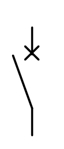
- 1 : สวิตช์ไฟฟ้า
- 2 : แมกเนติกคอนแทคเตอร์
- 3 : เซอร์กิตเบรกเกอร์
- 4 : เซอร์กิตเบรกเกอร์พร้อมสวิตช์ปลดวงจร
- คำตอบที่ถูกต้อง : 3
ข้อที่ 54 :
- สัญลักษณ์ต่อไปนี้หมายถึง
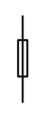
- 1 : สวิตช์ไฟฟ้า
- 2 : แมกเนติกคอนแทคเตอร์
- 3 : เซอร์กิตเบรกเกอร์
- 4 : ฟิวส์
- คำตอบที่ถูกต้อง : 4
ข้อที่ 55 :
- สัญลักษณ์ต่อไปนี้หมายถึง
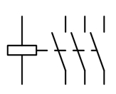
- 1 : สวิตช์ไฟฟ้า
- 2 : หน้าสัมผัสแม่เหล็กไฟฟ้า
- 3 : เซอร์กิตเบรกเกอร์
- 4 : สวิตช์ควบคุมด้วยรีเลย์
- คำตอบที่ถูกต้อง : 2
ข้อที่ 56 :
- สัญลักษณ์ของการต่อลงดินระบบไฟฟ้า คือรูปใด
- 1 :
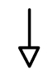
- 2 :
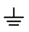
- 3 :
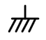
- 4 :
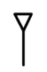
- คำตอบที่ถูกต้อง : 1
ข้อที่ 57 :
- สัญลักษณ์ต่อไปนี้หมายถึง
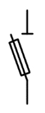
- 1 : สวิตช์ไฟฟ้า
- 2 : ฟิวส์
- 3 : สวิตช์ปลดวงจรพร้อมฟิวส์
- 4 : ฟิวส์ปลดวงจร
- คำตอบที่ถูกต้อง : 4
ข้อที่ 58 :
- สัญลักษณ์ต่อไปนี้หมายถึง
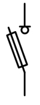
- 1 : สวิตช์ปลดวงจรพร้อมฟิวส์
- 2 : ฟิวส์
- 3 : เซอร์กิตเบรกเกอร์
- 4 : ฟิวส์ปลดวงจร
- คำตอบที่ถูกต้อง : 1
ข้อที่ 59 :
- สัญลักษณ์ต่อไปนี้หมายถึง
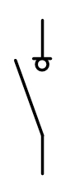
- 1 : สวิตช์ไฟฟ้า
- 2 : สวิตช์ปลดวงจร
- 3 : เซอร์กิตเบรกเกอร์
- 4 : ฟิวส์ปลดวงจร
- คำตอบที่ถูกต้อง : 2
ข้อที่ 60 :
- สัญลักษณ์ต่อไปนี้หมายถึง
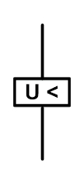
- 1 : รีเลย์กระแสสูงเกิน
- 2 : รีเลย์กระแสต่ำเกิน
- 3 : รีเลย์แรงดันสูงเกิน
- 4 : รีเลย์แรงดันต่ำเกิน
- คำตอบที่ถูกต้อง : 4
ข้อที่ 61 :
- สัญลักษณ์ต่อไปนี้หมายถึง
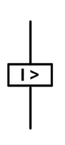
- 1 : รีเลย์กระแสสูงเกิน
- 2 : รีเลย์กระแสต่ำเกิน
- 3 : รีเลย์แรงดันสูงเกิน
- 4 : รีเลย์แรงดันต่ำเกิน
- คำตอบที่ถูกต้อง : 1
ข้อที่ 62 :
- สัญลักษณ์ต่อไปนี้หมายถึง
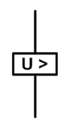
- 1 : รีเลย์กระแสสูงเกิน
- 2 : รีเลย์กระแสต่ำเกิน
- 3 : รีเลย์แรงดันสูงเกิน
- 4 : รีเลย์แรงดันต่ำเกิน
- คำตอบที่ถูกต้อง : 3
ข้อที่ 63 :
- สัญลักษณ์ต่อไปนี้หมายถึง
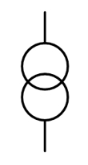
- 1 : Current Transformer
- 2 : Voltage Transformer
- 3 : Power Transformer
- 4 : Inductor
- คำตอบที่ถูกต้อง : 3
ข้อที่ 64 :
- สัญลักษณ์ต่อไปนี้หมายถึง
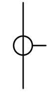
- 1 : Current Transformer
- 2 : Voltage Transformer
- 3 : Power Transformer
- 4 : Inductor
- คำตอบที่ถูกต้อง : 1
ข้อที่ 65 :
- สัญลักษณ์ต่อไปนี้หมายถึง
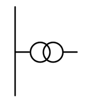
- 1 : Current Transformer
- 2 : Voltage Transformer
- 3 : Power Transformer
- 4 : Inductor
- คำตอบที่ถูกต้อง : 2
ข้อที่ 66 :
- สัญลักษณ์ต่อไปนี้หมายถึง
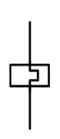
- 1 : รีเลย์กระแสสูงเกิน
- 2 : รีเลย์กระแสต่ำเกิน
- 3 : รีเลย์โหลดเกิน
- 4 : รีเลย์แรงดันต่ำเกิน
- คำตอบที่ถูกต้อง : 3
ข้อที่ 67 :
- สัญลักษณ์ต่อไปนี้หมายถึง
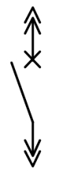
- 1 : เซอร์กิตเบรกเกอร์แบบปรับค่าไม่ได้
- 2 : เซอร์กิตเบรกเกอร์แบบปรับค่าได้
- 3 : เซอร์กิตเบรกเกอร์แบบติดกับที่ ( fix )
- 4 : เซอร์กิตเบรกเกอร์แบบเลื่อนออกได้ (draw out)
- คำตอบที่ถูกต้อง : 4
ข้อที่ 68 :
- สัญลักษณ์ต่อไปนี้หมายถึง
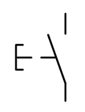
- 1 : ปุ่มกดแบบกดดับ ปล่อยติด (Push button NO spring return)
- 2 : ปุ่มกดแบบกดติด ปล่อยดับ (Push button NC spring return)
- 3 : ปุ่มกดแบบกดดับ กดติด (Push button NO maintain)
- 4 : ปุ่มกดแบบกดติด กดเดบ (Push button NC maintain)
- คำตอบที่ถูกต้อง : 2
ข้อที่ 69 :
- สัญลักษณ์ต่อไปนี้หมายถึง
- 1 : มาตรวัดความถี่
- 2 : มาตรวัดแรงดัน
- 3 : มาตรวัดกระแส
- 4 : มาตรวัดตัวประกอบกำลัง
- คำตอบที่ถูกต้อง : 4
ข้อที่ 70 :
- สัญลักษณ์ต่อไปนี้หมายถึง
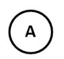
- 1 : มาตรวัดความถี่
- 2 : มาตรวัดแรงดัน
- 3 : มาตรวัดกระแส
- 4 : มาตรวัดตัวประกอบกำลัง
- คำตอบที่ถูกต้อง : 3
ข้อที่ 71 :
- สัญลักษณ์ต่อไปนี้หมายถึง
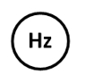
- 1 : มาตรวัดความถี่
- 2 : มาตรวัดแรงดัน
- 3 : มาตรวัดกระแส
- 4 : มาตรวัดตัวประกอบกำลัง
- คำตอบที่ถูกต้อง : 1
ข้อที่ 72 :
- สัญลักษณ์ต่อไปนี้หมายถึง
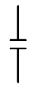
- 1 : ตัวเหนี่ยวนำ
- 2 : ตัวเก็บประจุ
- 3 : ตัวต้านทาน
- 4 : แบตเตอรี่
- คำตอบที่ถูกต้อง : 2
เนื้อหาวิชา : 54 : Electrical Wires, Raceways, Apparatus and Equipment
ข้อที่ 73 :
- พิกัดแรงดันของสายไฟฟ้าระบบแรงดันต่ำตาม มอก.11-2553 กำหนดไม่เกินเท่าใด
- 1 : 600 V
- 2 : 750 V
- 3 : 600/1000 V
- 4 : 450/750 V
- คำตอบที่ถูกต้อง : 4
ข้อที่ 74 :
- สายไฟฟ้าขนาด 50 Sq.mm. ในระบบ 1 phase จำนวน 2 วงจร เดินร้อยสายในท่อโลหะหนาปานกลางเกาะผนัง จงหาค่าตัวคูณปรับค่า
- 1 : 0.80
- 2 : 0.70
- 3 : 0.65
- 4 : 0.52
- คำตอบที่ถูกต้อง : 1
ข้อที่ 75 :
- ฉนวนที่นิยมใช้มากกับสายไฟฟ้าแรงต่ำ ได้แก่
- 1 : PE
- 2 : PVC และ XLPE
- 3 : Rubber
- 4 : Butane
- คำตอบที่ถูกต้อง : 2
ข้อที่ 76 :
- ฉนวน PVC และมี XLPE มีอุณหภูมิใช้งานไม่เกินเท่าใด
- 1 : 70 degree Celsius และ 80 degree Celsius ตามลำดับ
- 2 : 65 degree Celsius และ 90 degree Celsius ตามลำดับ
- 3 : 70 degree Celsius และ 90 degree Celsius ตามลำดับ
- 4 : 70 degree Celsius และ 110 degree Celsius ตามลำดับ
- คำตอบที่ถูกต้อง : 3
ข้อที่ 77 :
- สายไฟฟ้าแรงสูงแบบ ACSR มีโครงสร้างสายลักษณะใด
- 1 : สายอะลูมิเนียมตีเกลียวเปลือย
- 2 : สายอะลูมิเนียมผสม
- 3 : สายอะลูมิเนียมแกนเหล็ก
- 4 : สาย XLPE
- คำตอบที่ถูกต้อง : 3
ข้อที่ 78 :
- สายไฟฟ้าแรงสูงแบบ Partially Insulated Cable (APC หรือ PIC) มีลักษณะอย่างใด
- 1 : มีฉนวน XLPE หุ้มบาง ๆ
- 2 : ไม่สามารถแตะต้องได้
- 3 : ต้องเดินบนลูกถ้วย
- 4 : ถูกทุกข้อ
- คำตอบที่ถูกต้อง : 4
ข้อที่ 79 :
- สายไฟฟ้าแรงสูงแบบ Space Aerial Cable (ASC หรือ SAC) มีลักษณะอย่างใด
- 1 : มีฉนวน XLPE หุ้ม และมีเปลือก (Sheath) ทำด้วย XLPE
- 2 : เดินเกาะผนังได้
- 3 : ฝังใต้ดินโดยตรงได้
- 4 : เดินร้อยท่อฝังดินได้
- คำตอบที่ถูกต้อง : 1
ข้อที่ 80 :
- สายไฟฟ้าทองแดงหุ้มด้วยฉนวน PVC เป็นไปตามมาตรฐาน มอก. เลขที่เท่าใด
- 1 : มอก. 293-2526
- 2 : มอก. 11-2531
- 3 : มอก. 11-2553
- 4 : มอก. 18-2535
- คำตอบที่ถูกต้อง : 3
ข้อที่ 81 :
- ช่องเดินสายไฟฟ้ามีประโยชน์ในการเดินสายไฟฟ้าอย่างไร
- 1 : สามารถป้องกันสายไฟจากความเสียหายทางกายภาพ
- 2 : สามารถป้องกันอันตรายกับคนที่อาจจะไปแตะถูกสายไฟ
- 3 : สามารถใช้เป็นสายดินได้
- 4 : ถูกเฉพาะข้อ ก และ ข
- คำตอบที่ถูกต้อง : 4
ข้อที่ 82 :
- ท่อโลหะอ่อน (FMC) ใช้กับงานประเภทใด
- 1 : ติดตั้งยึดแน่นถาวร
- 2 : ใช้เดินเข้ากับอุปกรณ์ที่มีการสั่นสะเทือนขณะใช้งาน
- 3 : ใช้เดินเกาะกับผนัง
- 4 : ใช้ฝังในคอนกรีต
- คำตอบที่ถูกต้อง : 2
ข้อที่ 83 :
- มุมดัดโค้งของท่อร้อยสายระหว่างจุดดึงสายรวมกันต้องไม่เกินเท่าใด
- 1 : 180 degree
- 2 : 270 degree
- 3 : 360 degree
- 4 : 450 degree
- คำตอบที่ถูกต้อง : 3
ข้อที่ 84 :
- ท่อชนิดใดห้ามฝังดินโดยตรง
- 1 : EMT
- 2 : IMC
- 3 : RMC
- 4 : PVC
- คำตอบที่ถูกต้อง : 1
ข้อที่ 85 :
- ท่อร้อยสายโลหะขนาดเส้นผ่านศูนย์กลาง 50 mm. ต้องการร้อยสาย NYY แกนเดี่ยวขนาด 25 Sq.mm. จะร้อยได้กี่เส้น
- 1 : 4 เส้น
- 2 : 5 เส้น
- 3 : 6 เส้น
- 4 : 7 เส้น
- คำตอบที่ถูกต้อง : 1
ข้อที่ 86 :
- พื้นที่หน้าตัดรวมฉนวนของสายไฟทุกเส้นคิดเป็นร้อยละเท่าใดเทียบกับพื้นที่หน้าตัดของท่อ เมื่อร้อยสายแกนเดียว จำนวน 2 เส้น
- 1 : 31 %
- 2 : 40 %
- 3 : 50 %
- 4 : 60 %
- คำตอบที่ถูกต้อง : 1
ข้อที่ 87 :
- พื้นที่หน้าตัดของสายไฟรวมฉนวนสูงสุดต้องไม่เกินเท่าใดของรางเดินสาย (wireways)
- 1 : 10 % ของพื้นที่หน้าตัดรางเดินสาย
- 2 : 20 % ของพื้นที่หน้าตัดรางเดินสาย
- 3 : 30 % ของพื้นที่หน้าตัดรางเดินสาย
- 4 : 40 % ของพื้นที่หน้าตัดรางเดินสาย
- คำตอบที่ถูกต้อง : 2
ข้อที่ 88 :
- สายไฟฟ้าขนาดเส้นผ่านศูนย์กลาง 13.5 mm. เดินในรางเดินสาย (wireways) ขนาด 100 x 200 mm. จะสามารถเดินได้มากที่สุดกี่เส้น
- 1 : 15 เส้น
- 2 : 20 เส้น
- 3 : 27 เส้น
- 4 : 30 เส้น
- คำตอบที่ถูกต้อง : 3
ข้อที่ 89 :
- รางเดินสาย (wireways) ขนาด 100 x 200 mm. พื้นที่หน้าตัดสายไฟฟ้ารวมทุกเส้นที่เดินในรางต้องไม่เกินเท่าใด
- 1 : 4,000 Sq.mm.
- 2 : 4,500 Sq.mm.
- 3 : 5,000 Sq.mm.
- 4 : 6,000 Sq.mm.
- คำตอบที่ถูกต้อง : 1
ข้อที่ 90 :
- ถ้า ต้องการให้พิกัดกระแสของสายไฟฟ้าในรางเดินสาย (wireways) เท่ากับค่ากระแสในท่อร้อยสายไม่เกิน 3 เส้น จะต้องมีตัวนำกระแสรวมไม่เกินกี่เส้น
- 1 : ไม่เกิน 30 เส้น
- 2 : ไม่เกิน 32 เส้น
- 3 : ไม่เกิน 35 เส้น
- 4 : ไม่เกิน 40 เส้น
- คำตอบที่ถูกต้อง : 1
ข้อที่ 91 :
- เพื่อให้สามารถทำการเปลี่ยน และซ่อมบำรุงได้โดยง่าย Circuit Breaker ขนาดใหญ่ควรใช้เป็นแบบใด
- 1 : Fixed Type
- 2 : Open Type
- 3 : Drawout Type
- 4 : Plug In Type
- คำตอบที่ถูกต้อง : 3
ข้อที่ 92 :
- วงจรที่ 5 ในแผงย่อยแบบ 3 phase 4 wires จะรับกระแสจากเฟสไหน
- 1 : เฟส A
- 2 : เฟส B
- 3 : เฟส C
- 4 : เฟส N
- คำตอบที่ถูกต้อง : 3
ข้อที่ 93 :
- กับดักฟ้าผ่า (lightning arrester) มีหน้าที่ป้องกันอุปกรณ์และระบบไฟฟ้าที่เกิดจากสาเหตุใด
- 1 : กระแสเกินที่เกิดจากการใช้โหลด
- 2 : แรงดันเกินที่เกิดจากฟ้าผ่า
- 3 : การลัดวงจรในระบบ
- 4 : การเกิดแรงดันต่ำในระบบ
- คำตอบที่ถูกต้อง : 2
ข้อที่ 94 :
- สำหรับระบบจำหน่าย 22 kV 3 เฟส ที่ต่อลงดินโดยตรง (solidly grounded) พิกัดกับดักฟ้าผ่าที่ใช้ คือ
- 1 : 15 kV
- 2 : 18 kV
- 3 : 21 kV
- 4 : 25 kV
- คำตอบที่ถูกต้อง : 3
ข้อที่ 95 :
- ในการใช้งานสวิตช์ปลดวงจร (disconnecting switch) แรงดันปานกลาง ต้องทำอย่างไร
- 1 : ปลดวงจรขณะไม่มีโหลด
- 2 : ปลดวงจรเมื่อมีกระแสเต็มพิกัด
- 3 : ปลดวงจรเมื่อมีกระแสเกินพิกัด
- 4 : ปลดวงจรขณะเกิดการลัดวงจร
- คำตอบที่ถูกต้อง : 1
ข้อที่ 96 :
- ฟิวส์แรงดันสูงซึ่งใช้ป้องกันหม้อแปลงมีหน้าที่อะไร
- 1 : ป้องกันฟ้าผ่า และ Surge
- 2 : ป้องกันแรงดันไม่สมดุล
- 3 : ป้องกันกระแสลัดวงจร
- 4 : ป้องกันความถี่สูงเกิน
- คำตอบที่ถูกต้อง : 3
ข้อที่ 97 :
- สวิตช์สำหรับตัดโหลด (load break switch) แรงดันสูงมีคุณสมบัติ
- 1 : สามารถตัดกระแสตามพิกัดได้
- 2 : สามารถตัดกระแสลัดวงจรได้
- 3 : สามารถตัดวงจรเมื่อเกิดกระแสไม่สมดุลได้
- 4 : ถูกทุกข้อ
- คำตอบที่ถูกต้อง : 1
ข้อที่ 98 :
- สวิตช์สำหรับตัดโหลด (load break switch) เมื่อใช้ร่วมกับฟิวส์แรงสูงที่มี Striker Pin มีคุณสมบัติดังนี้
- 1 : ไม่ตัดวงจรเมื่อฟิวส์ขาด 3 เส้น
- 2 : เมื่อฟิวส์ขาด 1 เส้น จะตัดวงจรออกทั้งหมด
- 3 : ไม่ตัดวงจรเมื่อฟิวส์ขาด 1 เส้น
- 4 : ไม่ตัดวงจรเมื่อฟิวส์ขาด 2 เส้น
- คำตอบที่ถูกต้อง : 2
ข้อที่ 99 :
- อุปกรณ์ไฟฟ้าที่ใช้กับระบบไฟฟ้าแบบ Open Loop คืออะไร
- 1 : Metal Clad Switchgear
- 2 : Cubicle Switchgear
- 3 : Ring Main Unit
- 4 : Switch Disconnect
- คำตอบที่ถูกต้อง : 3
ข้อที่ 100 :
- หม้อแปลงจำหน่าย (distribution transformer) ใช้สำหรับ
- 1 : แปลงแรงดัน 115 kV เป็น 22 kV
- 2 : แปลงแรงดัน 69 kV เป็น 33 kV
- 3 : แปลงแรงดัน 22 kV เป็น 230/400 V
- 4 : แปลงแรงดัน 33 kV เป็น 22 kV
- คำตอบที่ถูกต้อง : 3
ข้อที่ 101 :
- แผงย่อยแบบ Main Lugs คืออะไร
- 1 : มี Main Circuit Breaker อยู่ภายใน
- 2 : มีเฉพาะ Lugs สำหรับต่อสายป้อนเข้าเท่านั้น
- 3 : มี Ground Bus และ Neutral Bus รวมกัน
- 4 : อาจมีพิกัดสูงถึง 400A
- คำตอบที่ถูกต้อง : 2
ข้อที่ 102 :
- สาย
ไฟฟ้า PVC มอก.11-2553 IEC-01 แกนเดี่ยว ขนาด 70 Sq.mm. วงจร 3 phase 4
wires จำนวน 1 วงจร เดินร้อยในท่อโลหะหนาปานกลางเกาะผนัง
(การติดตั้งกลุ่มที่ 2) จงหาขนาดกระแส
- 1 : 118 A
- 2 : 109 A
- 3 : 149 A
- 4 : 130 A
- คำตอบที่ถูกต้อง : 3
ข้อที่ 103 :
- โรง
งานแห่งหนึ่งกำหนดใช้สายแรงต่ำที่มีฉนวนเป็น XLPE (IEC 60502-1) ดังนี้ 5 [
3 x 185 Sq.mm., 1 x 95 Sq.mm.(N)] วางแบบเรียงชิดติดกัน
จงหาขนาดความกว้างรางเคเบิล (โดยเพื่อเพิ่ม 25%) ที่จะนำมาใช้กับงานนี้
หากเส้นผ่านศูนย์กลางของสายขนาด 185 Sq.mm. คือ 24.8 mm.
และเส้นผ่านศูนย์กลางของสายขนาด 95 Sq.mm. คือ 18.3 mm.
- 1 : 300 mm.
- 2 : 400 mm.
- 3 : 600 mm.
- 4 : 700 mm.
- คำตอบที่ถูกต้อง : 3
ข้อที่ 104 :
- จงหากระแสพิกัดทางด้านปฐมภูมิและด้านทุติยภูมิ ของหม้อแปลงจำหน่าย (distribution transformer) 3 phase 1600 kVA, 22kV/230-400V
- 1 : 22 A และ 1,500 A ตามลำดับ
- 2 : 27 A และ 2,109 A ตามลำดับ
- 3 : 35 A และ 2,204 A ตามลำดับ
- 4 : 42 A และ 2,309 A ตามลำดับ
- คำตอบที่ถูกต้อง : 4
ข้อที่ 105 :
- จง
หาขนาดของสายเมนแรงสูงขนาดเล็กที่สุดเดินในท่อร้อยสายฝังดินที่ใช้กับหม้อ
แปลงที่ใช้งานอย่างต่อเนื่อง 1600 kVA 22kV/230-400V โดยกำหนดให้ใช้สาย
XLPE
- 1 : 3 x 35 Sq.mm.
- 2 : 3 x 50 Sq.mm.
- 3 : 4 x 35 Sq.mm.
- 4 : 4 x 50 Sq.mm.
- คำตอบที่ถูกต้อง : 1
ข้อที่ 106 :
- สาย
ไฟฟ้าทองแดงหุ้มด้วยฉนวน PVC และ XLPE (IEC 60502-1) ขนาด 50 Sq.mm.
สำหรับระบบแรงต่ำวงจร 3 phase 4 wires เดินร้อยท่อโลหะในอากาศ
มีพิกัดกระแสเท่าใด
- 1 : 109 A และ 143 A ตามลำดับ
- 2 : 117 A และ 159 A ตามลำดับ
- 3 : 131 A และ 180 A ตามลำดับ
- 4 : 139 A และ 173 A ตามลำดับ
- คำตอบที่ถูกต้อง : 2
ข้อที่ 107 :
- สาย
ไฟฟ้า PVC มอก.11-2553 IEC-01ขนาด 95 Sq.mm. วงจร 1 phase 2 wires จำนวน 2
วงจร ร้อยในท่ออโลหะ (การติดตั้งในกลุ่มที่ 2) มีพิกัดกระแสเท่าใด
- 1 : 128.6 A
- 2 : 138.6 A
- 3 : 161.6 A
- 4 : 181.6 A
- คำตอบที่ถูกต้อง : 3
ข้อที่ 108 :
- สาย
ไฟฟ้า PVC มอก.11-2553 IEC-01ขนาด 35 Sq.mm. วงจร 3 phase 4 wires จำนวน 1
วงจร ร้อยในท่อโลหะ (การติดตั้งในกลุ่มที่ 2)
ติดตั้งในบริเวณที่มีอุณหภูมิโดยรอบ 52 degree Celsius
พิกัดกระแสจะเป็นเท่าใด
- 1 : 67.2 A
- 2 : 60.2 A
- 3 : 76.3 A
- 4 : 95.5 A
- คำตอบที่ถูกต้อง : 1
ข้อที่ 109 :
- ท่อโลหะปานกลาง (IMC) ขนาด 100 mm. ถ้าต้องการร้อยสายตั้งแต่ 3 เส้นขึ้นไป พื้นที่หน้าตัดรวมของสายรวมฉนวนต้องไม่เกินเท่าใด
- 1 : 2,542 Sq.mm.
- 2 : 2,842 Sq.mm.
- 3 : 3,141 Sq.mm.
- 4 : 3,442 Sq.mm.
- คำตอบที่ถูกต้อง : 3
ข้อที่ 110 :
- ท่อโลหะบาง (EMT) ขนาด 50 mm. ถ้าต้องการร้อยสาย 2 เส้น พื้นที่หน้าตัดรวมของสายรวมฉนวนต้องไม่เกินเท่าใด
- 1 : 509 Sq.mm.
- 2 : 608 Sq.mm.
- 3 : 785 Sq.mm.
- 4 : 1,001 Sq.mm.
- คำตอบที่ถูกต้อง : 2
ข้อที่ 111 :
- สาย ไฟฟ้า XLPE ชนิด 4C ขนาดเส้นผ่านศูนย์กลางเท่ากับ 40 mm. จำนวน 20 เส้น วางแบบเรียงชิดติดกัน จะต้องใช้รางเคเบิล (cable tray) ขนาดกว้างอย่างน้อยที่สุดเท่าใด
- 1 : 900 mm.
- 2 : 1,000 mm.
- 3 : 1,200 mm.
- 4 : 1,500 mm.
- คำตอบที่ถูกต้อง : 1
ข้อที่ 112 :
- สายไฟฟ้าระบบแรงต่ำที่สามารถเดินควบได้ (ใช้สายมากกว่า 1 เส้นต่อเฟส) ต้องมีขนาดไม่เล็กกว่าเท่าใด
- 1 : 35 Sq.mm.
- 2 : 50 Sq.mm.
- 3 : 70 Sq.mm.
- 4 : 95 Sq.mm.
- คำตอบที่ถูกต้อง : 2
ข้อที่ 113 :
- วงจร ไฟฟ้าแรงดันต่ำ 3 phase 4 wires จำนวน 1 วงจร ใช้สายหุ้มฉนวน PVC ขนาด 50 Sq.mm. เดินร้อยท่อพีวีซี ยาว 150 m. กระแส 100 A, จะมีค่าแรงดันตกมีค่าเท่าไร
- 1 : 16.65 V
- 2 : 12.75 V
- 3 : 13.95 V
- 4 : 16.80 V
- คำตอบที่ถูกต้อง : 1
ข้อที่ 114 :
- วงจร
ไฟฟ้าแรงดันต่ำ 3 phase 4 wires จำนวน 1 วงจร ใช้สายหุ้มฉนวน XLPE ขนาด 35
Sq.mm. เดินร้อยท่อโลหะ ยาว 100 m. กระแส 100 A,
จะมีค่าแรงดันตกมีค่าเท่าไร
- 1 : 11.70 V
- 2 : 13.95 V
- 3 : 16.80 V
- 4 : 16.65 V
- คำตอบที่ถูกต้อง : 1
ข้อที่ 115 :
- ระบบ ไฟฟ้า 230V, 1 phase 2 wires จ่ายไฟให้โหลด 40 A , 0.8 PF lagging เดินในท่อโลหะในอากาศ ความยาวของสาย 60 m. จงหาแรงดันตกในสาย กำหนดให้ใช้สายไฟฟ้า PVC มอก.11-2553 IEC-01 ขนาด 16 Sq.mm. ซึ่งมีค่า R = 1.3743 ohm/km. , X = 0.181 ohm/km.
- 1 : 5.79 V
- 2 : 5.02 V
- 3 : 2.89 V
- 4 : 2.51 V
- คำตอบที่ถูกต้อง : 1
ข้อที่ 116 :
- ระบบ ไฟฟ้า 230V, 1 phase 2 wires จ่ายไฟให้โหลด 40 A , 0.8 PF lagging เดินในท่อโลหะในอากาศ ความยาวของสาย 60 m. จงหาเปอร์เซ็นต์แรงดันตกในสาย กำหนดให้ใช้สายไฟฟ้า PVC มอก.11-2553 IEC-01 ขนาด 16 Sq.mm. ซึ่งมีค่า R = 1.3743 ohm/km. , X = 0.181 ohm/km.
- 1 : 6.35 %
- 2 : 2.52 %
- 3 : 2.18 %
- 4 : 5.52 %
- คำตอบที่ถูกต้อง : 2
ข้อที่ 117 :
- ระบบ ไฟฟ้า 230/400V, 3 phase 4 wires จ่ายไฟให้โหลด 40 A , 0.8 PF lagging เดินในท่อโลหะในอากาศ ความยาวของสาย 60 m. จงหาแรงดันตกในสาย กำหนดให้ใช้สายไฟฟ้า PVC มอก.11-2553 IEC-01 ขนาด 16 Sq.mm. ซึ่งมีค่า R = 1.3743 ohm/km. , X = 0.181 ohm/km.
- 1 : 5.79 V
- 2 : 5.02 V
- 3 : 2.89 V
- 4 : 2.51 V
- คำตอบที่ถูกต้อง : 2
ข้อที่ 118 :
- ระบบ ไฟฟ้า 230/400V, 3 phase 4 wires จ่ายไฟให้โหลด 40 A , 0.8 PF lagging เดินในท่อโลหะในอากาศ ความยาวของสาย 60 m. จงหาเปอร์เซ็นต์แรงดันตกในสาย กำหนดให้ใช้สายไฟฟ้า PVC มอก.11-2553 IEC-01 ขนาด 16 Sq.mm. ซึ่งมีค่า R = 1.3743 ohm/km. , X = 0.181 ohm/km.
- 1 : 1.26 %
- 2 : 3.32 %
- 3 : 1.45 %
- 4 : 4.14 %
- คำตอบที่ถูกต้อง : 1
ข้อที่ 119 :
- ระบบ
ไฟฟ้า 230/400V, 3 phase 4 wires กำหนดให้ใช้สายไฟฟ้า PVC มอก.11-2553
IEC-01 เดินร้อยท่อโลหะเกาะผนัง จ่ายกระแสไฟให้โหลด 80A กำหนดแรงดันตกในสาย
3 % และสายขนาด 35 Sq.mm. จงหาความยาวสูงสุด
- 1 : 106 m.
- 2 : 133 m.
- 3 : 123 m.
- 4 : 142 m.
- คำตอบที่ถูกต้อง : 2
ข้อที่ 120 :
- ท่อ ร้อยสายโลหะขนาดเส้นผ่าศูนย์กลาง 40 mm. ต้องการร้อยสายไฟฟ้า NYY แกนเดียว ขนาด 6 Sq.mm. ไม่เกิน 40% ของพื้นที่หน้าตัดท่อ จะร้อยได้กี่เส้น
- 1 : 3 เส้น
- 2 : 6 เส้น
- 3 : 5 เส้น
- 4 : 7 เส้น
- คำตอบที่ถูกต้อง : 3
ข้อที่ 121 :
- IP 56 หมายความว่าอย่างไร
- 1 : ป้องกันฝุ่น และป้องกันน้ำสาดเข้าทุกทิศทาง
- 2 : ป้องกันฝุ่น และป้องกันน้ำฉีดเข้าทุกทิศทาง
- 3 : ป้องกันฝุ่น และป้องกันน้ำฉีดอย่างแรงเข้าทุกทิศทาง
- 4 : ผนึกกันฝุ่น และป้องกันน้ำสาดเข้าทุกทิศทาง
- คำตอบที่ถูกต้อง : 3
ข้อที่ 122 :
- เครื่องป้องกันกระแสเกินของบริภัณฑ์แรงต่ำขนาดตั้งแต่เท่าใดที่ต้องมีการป้องกันกระแสรั่วลงดิน
- 1 : ขนาดตั้งแต่ 2,500 A ขึ้นไป
- 2 : ขนาดตั้งแต่ 2,000 A ขึ้นไป
- 3 : ขนาดตั้งแต่ 1,500 A ขึ้นไป
- 4 : ขนาดตั้งแต่ 1,000 A ขึ้นไป
- คำตอบที่ถูกต้อง : 4
ข้อที่ 123 :
- เครื่อง ตัดไฟรั่ว (residual current device) ซึ่งใช้ป้องกันไฟดูด ต้องมีค่ากระแสรั่วไม่เกินเท่าใด และใช้เวลาในการตัดวงจรไม่เกินเท่าใด
- 1 : 20 mA , 0.02 s
- 2 : 20 mA , 0.04 s
- 3 : 30 mA , 0.02 s
- 4 : 30 mA , 0.04 s
- คำตอบที่ถูกต้อง : 4
ข้อที่ 124 :
- บัสบาร์ทองแดงที่ใช้ในงานไฟฟ้าต้องมีความบริสุทธิ์อย่างน้อยเท่าใด
- 1 : 92 %
- 2 : 94 %
- 3 : 96 %
- 4 : 98 %
- คำตอบที่ถูกต้อง : 4
ข้อที่ 125 :
- Busway หรือ Busduct ที่เป็นแบบ Plug-in แตกต่างจากแบบ Feeder อย่างไร
- 1 : แบบ Plug-in ส่งผ่านกำลังไฟฟ้าได้มากกว่าแบบ Feeder
- 2 : แบบ Plug-in ใช้ติดตั้งในแนวระดับ แบบ Feeder ใช้ติดตั้งในแนวดิ่ง
- 3 : แบบ Plug-in สามารถต่อแยกไปใช้งานได้ระหว่างความยาวที่เดิน
- 4 : แบบ Feeder สามารถต่อแยกไปใช้งานได้ระหว่างความยาวที่เดิน
- คำตอบที่ถูกต้อง : 3
ข้อที่ 126 :
- จงหากระแสพิกัดทางด้านปฐมภูมิและด้านทุติยภูมิหม้อแปลงจำหน่าย (distribution transformer) 3 phase, 1000 kVA, 24kV/240-416V
- 1 : 22 A และ 1,343 A ตามลำดับ
- 2 : 24 A และ 1,387 A ตามลำดับ
- 3 : 28 A และ 1,487 A ตามลำดับ
- 4 : 33 A และ 1,443 A ตามลำดับ
- คำตอบที่ถูกต้อง : 2
ข้อที่ 127 :
- สายไฟฟ้าแบบทนไฟควรใช้กับวงจรไฟฟ้าแบบใด
- 1 : วงจรไฟฟ้าสำหรับลิฟต์โดยสาร
- 2 : วงจรย่อยแสงสว่าง
- 3 : วงจรย่อยสำหรับแสงสว่างฉุกเฉิน
- 4 : วงจรเครื่องสูบน้ำทั่วไป
- คำตอบที่ถูกต้อง : 3
ข้อที่ 128 :
- จจง
หาขนาดของสายเมนแรงต่ำที่เล็กที่สุด สำหรับ Circuit Breaker ขนาด 1,250 A
โดยกำหนดให้ใช้สาย XLPE แกนเดียว เดินสายแบบเรียงชิดติดกัน
เดินในรางเคเบิลแบบมีรูระบายอากาศแนวนอน
- 1 : 4 [4 x 150 Sq.mm.]
- 2 : 4 [4 x 120 Sq.mm.]
- 3 : 4 [4 x 300 Sq.mm.]
- 4 : 4 [4 x 240 Sq.mm.]
- คำตอบที่ถูกต้อง : 2
ข้อที่ 129 :
- จจง
หาขนาดของสายเมนแรงต่ำที่เล็กที่สุด สำหรับวงจร 3 phase 4 wires ที่ใช้
Circuit Breaker ขนาด 630 A โดยกำหนดให้ใช้สาย XLPE แกนเดียว
เดินร้อยท่อโลหะเกาะผนัง จำนวน 2 ท่อ
- 1 : 2 [4 x 240 Sq.mm.]
- 2 : 2 [4 x 150 Sq.mm.]
- 3 : 2 [4 x 185 Sq.mm.]
- 4 : 2 [4 x 300 Sq.mm.]
- คำตอบที่ถูกต้อง : 3
ข้อที่ 130 :
- สาย
ไฟฟ้า PVC มอก.11-2553 IEC-01 ขนาด 120 Sq.mm. วงจร 1 phase จำนวน 2 วงจร
ร้อยในท่อโลหะเดินในอากาศ (การติดตั้งกลุ่มที่ 2)
สายไฟฟ้ามีพิกัดกระแสเท่าใด
- 1 : 215 A
- 2 : 220 A
- 3 : 200 A
- 4 : 187 A
- คำตอบที่ถูกต้อง : 4
ข้อที่ 131 :
- สาย
ไฟฟ้าทองแดงหุ้มด้วยฉนวน XLPE ขนาด 70 Sq.mm. 3 phase 4 wires จำนวน 1 วงจร
ร้อยในท่อโลหะเดินในอากาศ (การติดตั้งกลุ่มที่
2) ผ่านสถานที่ที่มีอุณหภูมิแวดล้อม 45 degree Celsius
สายไฟฟ้ามีพิกัดกระแสเท่าใด
- 1 : 149 A
- 2 : 193 A
- 3 : 198 A
- 4 : 202 A
- คำตอบที่ถูกต้อง : 2
ข้อที่ 132 :
- โดย
ใช้สายไฟฟ้า NYY แกนเดี่ยว ขนาด 150 Sq.mm. 3 phase 4 wires จำนวน 1 วงจร
ร้อยในท่อร้อยสายโลหะฝังดิน (การติดตั้งกลุ่มที่
5) ผ่านสถานที่ที่มีอุณหภูมิ 45 degree Celsius
สายไฟฟ้ามีพิกัดกระแสเท่าใด
- 1 : 178 A
- 2 : 182 A
- 3 : 212 A
- 4 : 266 A
- คำตอบที่ถูกต้อง : 3
ข้อที่ 133 :
- สาย ไฟฟ้า XLPE แกนเดี่ยว ขนาดเส้นผ่านศูนย์กลางเท่ากับ 20 mm. จำนวน 24 เส้น จะต้องใช้รางเคเบิลชนิดบันได สายวางแบบเรียงชิดติดกัน จงหาขนาดความกว้างอย่างน้อยที่สุดของราง
- 1 : 400 mm.
- 2 : 500 mm.
- 3 : 650 mm.
- 4 : 750 mm.
- คำตอบที่ถูกต้อง : 2
ข้อที่ 134 :
- สสาย
ไฟฟ้าทองแดงหุ้มด้วยฉนวน XLPE ขนาดเส้นผ่านศูนย์กลางเท่ากับ 16.2 mm. จำนวน
5 เส้น ร้อยในท่อโลหะเดินในอากาศ
จะต้องใช้ท่อขนาดเส้นผ่านศูนย์กลางเล็กสุดเท่าใด
- 1 : 20 mm.
- 2 : 40 mm.
- 3 : 50 mm.
- 4 : 65 mm.
- คำตอบที่ถูกต้อง : 4
ข้อที่ 135 :
- วงจรที่ 9 ในแผงย่อยแบบ 3 phase 4 wires จะรับกระแสจากเฟสไหน
- 1 : เฟส A
- 2 : เฟส B
- 3 : เฟส C
- 4 : เฟสใดก็ได้
- คำตอบที่ถูกต้อง : 2
ข้อที่ 136 :
- พื้นที่
หน้าตัดรวมของสายไฟฟ้า NYY แกนเดี่ยว จำนวน 8 เส้นเดินในท่อร้อยสาย
เมื่อคิดเป็นเปอร์เซนต์เทียบกับพื้นที่หน้าตัดของท่อร้อยอสายดังกล่าว
ต้องไม่เกินกี่เปอร์เซนต์
- 1 : 31 %
- 2 : 38 %
- 3 : 40 %
- 4 : 55 %
- คำตอบที่ถูกต้อง : 3
ข้อที่ 137 :
- สายไฟฟ้าชนิดใดต่อไปนี้ที่สามารถวางบนรางเคเบิลในอาคารได้
- 1 : ชนิด IEC 01 ขนาด 70 Sq.mm.
- 2 : ชนิด XLPE แกนเดียว ขนาด 70 Sq.mm.
- 3 : ชนิด NYY แกนเดียว ขนาด 16 Sq.mm.
- 4 : ชนิด NYY หลายแกน ขนาด 10 Sq.mm.
- คำตอบที่ถูกต้อง : 4
ข้อที่ 138 :
- สายไฟฟ้าชนิดใดต่อไปนี้ที่สามารถเดินร้อยท่อฝังดินได้
- 1 : ชนิด IEC 01 ขนาด 70 Sq.mm.
- 2 : ชนิด XLPE แกนเดียว ขนาด 70 Sq.mm.
- 3 : ชนิด IEC 10 แกนเดียว ขนาด 16 Sq.mm.
- 4 : ชนิด VAF สองแกน ขนาด 10 Sq.mm.
- คำตอบที่ถูกต้อง : 2
ข้อที่ 139 :
- ท่อโลหะอ่อนสามารถใช้ได้ในกรณีใดต่อไปนี้
- 1 : วางบนฝ้าเพดานระหว่างกล่องต่อสาย มีความยาว 1.80 m.
- 2 : วางบนฝ้าเพดานระหว่างกล่องต่อสายกับดวงโคม มีความยาว 1.80 m.
- 3 : เดินฝังในผนังปูนระหว่างกล่องต่อสายกับดวงโคม มีความยาว 1.80 m.
- 4 : เดินระหว่างกล่องต่อสายในปล่องลิฟต์มีความยาว 1.80 m.
- คำตอบที่ถูกต้อง : 2
ข้อที่ 140 :
- ท่อร้อยสายชนิดใดต่อไปนี้ห้ามเดินภายในอาคาร
- 1 : ท่อ PVC
- 2 : ท่อ UPVC
- 3 : ท่อ HDPE
- 4 : ท่อ FRE
- คำตอบที่ถูกต้อง : 3
ข้อที่ 141 :
- รางเดินสาย (wireway) ขนาดใหญ่ที่สุด (สูง x กว้าง) ที่อนุญาตให้ใช้ได้ต้องมีขนาดไม่เกินเท่าใด
- 1 : 150 x 300 mm.
- 2 : 150 x 150 mm.
- 3 : 300 x 300 mm.
- 4 : ไม่จำกัดขนาด ขึ้นอยู่กับจำนวนสายไฟฟ้า
- คำตอบที่ถูกต้อง : 1
เนื้อหาวิชา : 55 : Load Estimation
ข้อที่ 142 :
- การ
คำนวณขนาดของเครื่องวัดหน่วยไฟฟ้าแรงต่ำสำหรับห้องชุดประเภทอยู่อาศัย
(การไฟฟ้านครหลวง) ที่ไม่มีระบบทำความเย็นจากส่วนกลาง พื้นที่ห้อง 483
Sq.m. ต้องใช้ขนาดเครื่องวัดเท่าใด
- 1 : 50(150) A, 1 Phase
- 2 : 15(45) A, 3 Phase
- 3 : 30(100) A, 3 Phase
- 4 : 50(150) A, 3 Phase
- คำตอบที่ถูกต้อง : 3
ข้อที่ 143 :
- การ
คำนวณขนาดของเครื่องวัดหน่วยไฟฟ้าแรงต่ำสำหรับห้องชุดประเภทอยู่อาศัย
(การไฟฟ้านครหลวง) ที่มีระบบทำความเย็นจากส่วนกลาง พื้นที่ห้อง 690 Sq.m.
ต้องใช้ขนาดเครื่องวัดเท่าใด
- 1 : 15(45) A, 1 Phase
- 2 : 15(45) A, 3 Phase
- 3 : 30(100) A, 3 Phase
- 4 : 50(150) A , 3 Phase
- คำตอบที่ถูกต้อง : 1
ข้อที่ 144 :
- ขนาดตัวนำประธานเข้าห้องชุดต้องมีขนาดกระแสไม่ต่ำกว่าพิกัดเครื่องป้องกันกระแสเกินและต้องมีขนาดไม่เล็กกว่าเท่าใด
- 1 : 16 Sq.mm.
- 2 : 10 Sq.mm.
- 3 : 6 Sq.mm.
- 4 : 4 Sq.mm.
- คำตอบที่ถูกต้อง : 3
ข้อที่ 145 :
- ใน
การคำนวณโหลดของอาคารชุด ขนาดของหม้อแปลงเมื่อไม่ใช้พัดลมเป่า (forced air
cooled) ต้องมีขนาดไม่เล็กกว่ากี่เท่าของโหลดที่คำนวณได้
เมื่อใช้ค่าโคอินซิเดนต์แฟกเตอร์
- 1 : 1.00 เท่า
- 2 : 1.15 เท่า
- 3 : 1.25 เท่า
- 4 : 1.30 เท่า
- คำตอบที่ถูกต้อง : 1
ข้อที่ 146 :
- ตัวนำประธานใต้ดินสำหรับระบบแรงต่ำต้องมีขนาดไม่เท่าเล็กกว่าเท่าใด
- 1 : 4 Sq.mm.
- 2 : 6 Sq.mm.
- 3 : 10 Sq.mm.
- 4 : 16 Sq.mm.
- คำตอบที่ถูกต้อง : 3
ข้อที่ 147 :
- การ
เลือกอุปกรณ์ป้องกันสำหรับวงจรย่อย 1 phase ที่ใช้สาย IEC 01 ขนาด 2.5
Sq.mm.เดินในท่อร้อยสายเกาะผนัง ควรเลือกขนาดเท่าไร (A) จึงทำให้วงจรนั้น
ตัดอย่างปลอดภัย
- 1 : 16 A
- 2 : 25 A
- 3 : 32 A
- 4 : 40 A
- คำตอบที่ถูกต้อง : 1
ข้อที่ 148 :
- ในการออกแบบวงจรย่อย 230V วงจรหนึ่งมีเต้ารับจำนวน 14 จุด ให้หาขนาดพิกัดของวงจรย่อยที่เหมาะสมที่สุด (A)
- 1 : 5 A
- 2 : 7 A
- 3 : 10 A
- 4 : 16 A
- คำตอบที่ถูกต้อง : 4
ข้อที่ 149 :
- มอเตอร์ 3 phase, 400 V, 75 kW กระแส = 138 A จงหาขนาดโหลด (kVA)
- 1 : 96 kVA
- 2 : 100 kVA
- 3 : 105 kVA
- 4 : 120 kVA
- คำตอบที่ถูกต้อง : 1
ข้อที่ 150 :
- อาคารที่พักอาศัย โหลดแสงสว่างส่วนที่เกินกว่า 2 kVA จะใช้ดีมานด์แฟกเตอร์เท่าใด
- 1 : 25 %
- 2 : 35 %
- 3 : 45 %
- 4 : 55 %
- คำตอบที่ถูกต้อง : 2
ข้อที่ 151 :
- บ้านหลังหนึ่งมีเครื่องทำน้ำร้อนขนาด 5,000 W อยู่ 3 ชุด จงคำนวณหาโหลดรวมของเครื่องทำน้ำร้อนของบ้านหลังนี้ (VA)
- 1 : 10,250 VA
- 2 : 11,250 VA
- 3 : 12,250 VA
- 4 : 13,250 VA
- คำตอบที่ถูกต้อง : 2
ข้อที่ 152 :
- จงคำนวณหาโหลดของห้องชุดประเภทอยู่อาศัยที่ไม่มีระบบทำความเย็นจากส่วนกลาง มีพื้นที่ห้องพัก 50 Sq.m. และพื้นที่เฉลียง 6 Sq.m.
- 1 : 6,000 VA
- 2 : 6,540 VA
- 3 : 7,500 VA
- 4 : 8,040 VA
- คำตอบที่ถูกต้อง : 1
ข้อที่ 153 :
- จงคำนวณหาโหลดของห้องชุดประเภทสำนักงานหรือร้านค้าทั่วไปที่ไม่มีระบบทำความเย็นจากส่วนกลาง มีพื้นที่ห้อง 100 Sq.m.
- 1 : 8,500 VA
- 2 : 9,000 VA
- 3 : 15,500 VA
- 4 : 22,000 VA
- คำตอบที่ถูกต้อง : 3
ข้อที่ 154 :
- จงหาดีมานด์โหลดของเต้ารับ ของอาคารสำนักงานมีเต้ารับรวมทั้งสิ้น 200 ชุด
- 1 : 18 kVA
- 2 : 23 kVA
- 3 : 25 kVA
- 4 : 28 kVA
- คำตอบที่ถูกต้อง : 2
ข้อที่ 155 :
- จง
หาโหลดเครื่องทำน้ำร้อนรวมของอพาร์ทเมนต์แห่งหนึ่งซึ่งมี 6 ชั้น
แต่ละชั้นมี 20 ห้อง และแต่ละห้องมีเครื่องทำน้ำร้อนขนาด 3 kW 1 ชุด
- 1 : 90.5 kVA
- 2 : 92.5 kVA
- 3 : 94.5 kVA
- 4 : 96.5 kVA
- คำตอบที่ถูกต้อง : 3
ข้อที่ 156 :
- จง
หา Demand Load ของเครื่องปรับอากาศของโรงแรมแห่งหนึ่งซึ่งมี 100
ห้องแต่ละห้องมีเครื่องปรับอากาศขนาด 1.5 ตันความเย็น (2.25 kVA)
- 1 : 150.75 kVA
- 2 : 158.75 kVA
- 3 : 160.75 kVA
- 4 : 168.75 kVA
- คำตอบที่ถูกต้อง : 4
ข้อที่ 157 :
- จง
หาขนาดสายเฟสและสายนิวทรัลที่เล็กที่สุดของสายป้อน โดยใช้สายไฟฟ้า IEC-01
แกนเดี่ยว ในท่อร้อยสายโลหะในอากาศ ที่จ่ายไฟให้แผงย่อย ขนาด 120 kVA , 3
phase 4 wires, 230/400V โหลดส่วนใหญ่เป็น Fluorescent กำหนดขนาด Circuit
Breaker มาตรฐานเป็นดังนี้ 150 AT, 175 AT, 200 AT, 225 AT
- 1 : 4 X 95 Sq.mm.
- 2 : 3 X 95, 1 X 70 Sq.mm.
- 3 : 3 X 120,1 X 95 Sq.mm.
- 4 : 4 X 120 Sq.mm.
- คำตอบที่ถูกต้อง : 1
ข้อที่ 158 :
- จง หาขนาดสายเฟสและสายนิวทรัลที่เล็กที่สุดเพื่อจ่ายโหลดให้กับโหลดระบบ Computer 100 kVA, 230/400 V, 3 phase 4 wires โดยใช้สายไฟฟ้า IEC-01 แกนเดี่ยว ในท่อร้อยสายโลหะในอากาศ (การติดตั้งในกลุ่มที่ 2) กำหนดขนาด Circuit Breaker มาตรฐานเป็นดังนี้ 150 AT, 175 AT, 200 AT, 225 AT
- 1 : 4 X 150 Sq.mm.
- 2 : 4 X 120 Sq.mm.
- 3 : 4 X 95 Sq.mm.
- 4 : 4 X 70 Sq.mm.
- คำตอบที่ถูกต้อง : 3
ข้อที่ 159 :
- จง
หาขนาดต่ำสุดของสายเฟสและนิวทรัลที่เล็กที่สุดของสายป้อน โดยใช้สายไฟฟ้า
PVC มอก.11-2553 NYY แกนเดี่ยว ในท่อร้อยสายโลหะในฝังดิน
(การติดตั้งในกลุ่มที่ 5) ที่จ่ายไฟให้โหลดหลอดไส้แบบสมดุล 180 kVA,
230/400 V, 3 phase 4 wires กำหนดขนาด Circuit Breaker มาตรฐานเป็นดังนี้
225 AT, 250 AT, 275 AT
- 1 : 4 X 185 Sq.mm.
- 2 : 4 X 150 Sq.mm.
- 3 : 4 X 120 Sq.mm.
- 4 : 4 X 95 Sq.mm.
- คำตอบที่ถูกต้อง : 1
ข้อที่ 160 :
- อาคาร
แห่งหนึ่งอยู่เขตการไฟฟ้านครหลวง วิศวกรคำนวณโหลดสูงสุดได้ 180 A, 3 phase 4
wires, 230/400 V จงหาขนาดมิเตอร์และสายตัวนำประธาน โดยใช้สายไฟฟ้า IEC-01
แกนเดี่ยว ในท่อร้อยสายโลหะในอากาศ (การติดตั้งในกลุ่มที่ 2)
- 1 : ขนาดเครื่องวัดหน่วยไฟฟ้า 150 A, สายขนาด 4x150 Sq.mm.
- 2 : ขนาดเครื่องวัดหน่วยไฟฟ้า 200 A, สายขนาด 4x150 Sq.mm.
- 3 : ขนาดเครื่องวัดหน่วยไฟฟ้า 150 A, สายขนาด 4x120 Sq.mm.
- 4 : ขนาดเครื่องวัดหน่วยไฟฟ้า 200 A, สายขนาด 4x185 Sq.mm.
- คำตอบที่ถูกต้อง : 4
ข้อที่ 161 :
- จง คำนวณหาโหลดแสงสว่างรวมของอพาร์ทเมนต์แห่งหนึ่งซึ่งมี 10 ห้อง ในแต่ละห้องมีโหลดดังนี้ ไฟแสงสว่างหลอดฟลูออเรสเซนต์ 1 x 36 W (100 VA) 1 ชุด ไฟฟ้าหลอดไส้ 60 W 1 ชุด
- 1 : 960 VA
- 2 : 1,100 VA
- 3 : 1,600 VA
- 4 : 2,000 VA
- คำตอบที่ถูกต้อง : 3
ข้อที่ 162 :
- จง คำนวณหาโหลดรวมของบ้านหลังหนึ่งซึ่งใช้ไฟ 220 V, 1 phase มีโหลดไฟฟ้าดังนี้ ดวงโคมหลอดฟลูออเรสเซนต์ 1 x 36 W (100 VA) 10 ชุด ดวงโคมหลอดฟลูออเรสเซนต์ 1 x 18 W (100 VA) 20 ชุด เครื่องทำน้ำร้อนขนาด 3000 W 1 เครื่อง เต้ารับใช้งานทั่วไป 30 ชุด เครื่องปรับอากาศขนาด 12,000 BTU (1,500 VA) 1 เครื่อง
- 1 : 56 A
- 2 : 61 A
- 3 : 65 A
- 4 : 70 A
- คำตอบที่ถูกต้อง : 1
ข้อที่ 163 :
- อพาร์ทเมนต์ แห่งหนึ่งมี 20 ห้อง ในแต่ละห้องมีโหลดดังนี้ ไฟฟ้าแสงสว่างหลอดฟลูออเรสเซนต์ 1 x 18 W (100 VA) 6 ชุด โหลดเต้ารับ 6 ชุด เครื่องปรับอากาศขนาด 12,000 BTU (1,500 VA) 1 เครื่อง เครื่องทำน้ำร้อนขนาด 3,000 W 1 เครื่อง จงคำนวณหาโหลดรวม (kVA) อพาร์ทเมนต์แห่งนี้โดยคิดเป็นแบบที่พักอาศัย
- 1 : 61.8 kVA
- 2 : 76.6 kVA
- 3 : 83.1 kVA
- 4 : 123.6 kVA
- คำตอบที่ถูกต้อง : 2
ข้อที่ 164 :
- จง
คำนวณหาโหลดรวมของบ้านหลังหนึ่งซึ่งมี 2 ชั้นในแต่ละชั้นมีโหลดไฟฟ้าดังนี้
ดวงโคมหลอดฟลูออเรสเซนต์1 x 36W (100 VA) 10 ชุด ไฟฟ้าหลอดไส้ 60 W 2 ชุด
เต้ารับใช้งานทั่วไป 20 ชุด เครื่องปรับอากาศขนาด12,000 BTU (1,500 VA) 2
เครื่อง
- 1 : 10.72 kVA
- 2 : 15.28 kVA
- 3 : 16.44 kVA
- 4 : 21.44 kVA
- คำตอบที่ถูกต้อง : 2
ข้อที่ 165 :
- อพาร์ทเมนต์
แห่งหนึ่งใช้ไฟ 230/400V, 3 phase 4 wires มีห้องพัก 10 ห้อง
ในแต่ละห้องมีโหลดดังนี้ ไฟฟ้าแสงสว่างหลอดฟลูออเรสเซนต์ 1 x 18W (100 VA)
10 ชุด โหลดเต้ารับ 10 ชุด เครื่องทำน้ำร้อนขนาด 3,300 W 2 ชุด
จงคำนวณหาโหลดรวม (A) ของอพาร์ทเมนต์แห่งนี้ โดยคิดเป็นแบบที่พักอาศัย
- 1 : 44 A
- 2 : 54 A
- 3 : 64 A
- 4 : 74 A
- คำตอบที่ถูกต้อง : 3
ข้อที่ 166 :
- ในการคำนวณโหลดห้องชุดประเภทสำนักงานหรือร้านค้าทั่วไปที่มีระบบทำความเย็นจากส่วนกลาง กำหนดให้ใช้ค่า
- 1 : 20 VA/Sq.m.
- 2 : 85 VA/Sq.m.
- 3 : 90 VA/Sq.m
- 4 : 220 VA/Sq.m.
- คำตอบที่ถูกต้อง : 2
ข้อที่ 167 :
- ในการคำนวณโหลดห้องชุดประเภทที่พักอาศัยที่ไม่มีระบบทำความเย็นจากส่วนกลางขนาดพื้นที่มากกว่า 180 Sq.m. กำหนดให้ใช้ค่า
- 1 : 20 VA/Sq.m. + 6000 VA
- 2 : 85 VA/Sq.m. + 6000 VA
- 3 : 90 VA/Sq.m. + 6000 VA
- 4 : 155 VA/Sq.m.+ 6000 VA
- คำตอบที่ถูกต้อง : 3
ข้อที่ 168 :
- ในการคำนวณโหลดห้องชุดประเภทอุตสาหกรรม กำหนดให้ใช้ค่า
- 1 : 85 VA/Sq.m.
- 2 : 90 VA/Sq.m.
- 3 : 155 VA/Sq.m.
- 4 : 220 VA/Sq.m.
- คำตอบที่ถูกต้อง : 4
ข้อที่ 169 :
- จง หาขนาดของสายไฟฟ้าที่เล็กที่สุดสำหรับวงจรย่อยแสงสว่างของบ้านชั้นเดียวที่ ใช้ดวงโคมหลอดฟลูออเรสเซนต์ 1 x 36W (100 VA) จำนวน 4 ชุด
- 1 : 1.0 Sq.mm.
- 2 : 1.5 Sq.mm.
- 3 : 2.5 Sq.mm.
- 4 : 4.0 Sq.mm.
- คำตอบที่ถูกต้อง : 3
ข้อที่ 170 :
- จงคำนวณหาโหลดของห้องชุดสำนักงานที่มีขนาด 90 Sq.m. ซึ่งมีระบบทำความเย็นจากส่วนกลาง
- 1 : 7,650 VA
- 2 : 9,650 VA
- 3 : 12,500 VA
- 4 : 13,950 VA
- คำตอบที่ถูกต้อง : 1
ข้อที่ 171 :
- จงหาโหลดเต้ารับทั้งหมดของสำนักงานแห่งหนึ่งซึ่งมี 4 ชั้น ใช้เต้ารับคู่ (duplex) ทั้งหมดจำนวน 60 ชุด
- 1 : 10.4 kVA
- 2 : 10.8 kVA
- 3 : 21.6 kVA
- 4 : 26.6 kVA
- คำตอบที่ถูกต้อง : 1
ข้อที่ 172 :
- จงคำนวณหาโหลดแสงสว่างรวมของบ้านหลังหนึ่งซึ่งใช้ดวงโคมหลอดฟลูออเรสเซนต์ 1 X 36 W (100 VA) จำนวน 50 ชุด
- 1 : 1,800 VA
- 2 : 3,050 VA
- 3 : 4,050 VA
- 4 : 5,000 VA
- คำตอบที่ถูกต้อง : 2
ข้อที่ 173 :
- จงคำนวณหาโหลดของห้องชุดที่อยู่อาศัยที่มีขนาด 200 Sq.m. ซึ่งมีระบบทำความเย็นจากส่วนกลาง
- 1 : 5,500 VA
- 2 : 7,000 VA
- 3 : 10,000 VA
- 4 : 24,000 VA
- คำตอบที่ถูกต้อง : 3
ข้อที่ 174 :
- จง
คำนวณหาโหลดรวมของโรงแรมแห่งหนึ่งซึ่งมีเครื่องทำน้ำร้อนขนาด 3,600 W จำนวน
40 ชุด และเครื่องหุงต้มอาหารขนาด 10,000 W จำนวน 10 ชุด
- 1 : 244.0 kVA
- 2 : 200.4 kVA
- 3 : 154.0 kVA
- 4 : 107.4 kVA
- คำตอบที่ถูกต้อง : 4
ข้อที่ 175 :
- จง
หาโหลดรวมของเครื่องหุงต้มอาหารของห้างสรรพสินค้าแห่งหนึ่งซึ่งมีเครื่องหุง
ต้มอาหาร ขนาด 5 kW 10 ชุด และ ขนาด 10 kW อีก 20 ชุด
- 1 : 100 kVA
- 2 : 156 kVA
- 3 : 200 kVA
- 4 : 250 kVA
- คำตอบที่ถูกต้อง : 2
ข้อที่ 176 :
- อาคารประเภทโรงแรม ถ้าขนาดของไฟแสงสว่างไม่เกิน 20 kVA จะใช้ดีมานด์แฟกเตอร์เท่าใด
- 1 : 30 %
- 2 : 40 %
- 3 : 50 %
- 4 : 100 %
- คำตอบที่ถูกต้อง : 3
ข้อที่ 177 :
- จงคำนวณหาโหลดของห้องชุดประเภทอุตสาหกรรม ซึ่งมีพื้นที่ห้อง 500 Sq.m.
- 1 : 42 kVA
- 2 : 51 kVA
- 3 : 77 kVA
- 4 : 110 kVA
- คำตอบที่ถูกต้อง : 4
ข้อที่ 178 :
- จงคำนวณหาโหลดของห้องชุดประเภทอยู่อาศัยที่มีระบบทำความเย็นจากส่วนกลาง ซึ่งมีพื้นที่ห้องพัก 120 Sq.m.
- 1 : 3,900 VA
- 2 : 5,400 VA
- 3 : 8,400 VA
- 4 : 13,800 VA
- คำตอบที่ถูกต้อง : 2
ข้อที่ 179 :
- จง
คำนวณหา Demand Load
ของเครื่องหุงต้มอาหารของอาคารที่พักอาศัยแห่งหนึ่งซึ่งมี 200
ห้องแต่ละห้องมีเครื่องหุงต้มอาหารขนาด 10 A 230V จำนวน 1 เครื่อง
- 1 : 140 kVA
- 2 : 607 kVA
- 3 : 1,015 kVA
- 4 : 2,000 kVA
- คำตอบที่ถูกต้อง : 1
ข้อที่ 180 :
- จง
คำนวณหาขนาดเครื่องวัดที่เหมาะสมสำหรับการจ่ายไฟด้วยแรงดันไฟฟ้า 230/400V
สำหรับห้องชุดประเภทสำนักงานที่ไม่มีระบบทำความเย็นจากส่วนกลาง
ซึ่งมีพื้นที่ 200 Sq.m.
- 1 : 15(45) A, 3 Phase
- 2 : 50(150) A, 1 Phase
- 3 : 30(100) A, 3 Phase
- 4 : 400 A, 3 Phase
- คำตอบที่ถูกต้อง : 3
เนื้อหาวิชา : 56 : Wiring Design
ข้อที่ 181 :
- ข้อใดกล่าวถึงขนาดตัวนำของสายป้อน ตามมาตรฐานของ วสท. ไม่ถูกต้อง
- 1 : ต้องมีขนาดกระแสไม่น้อยกว่าโหลดสูงสุดที่คำนวณได้
- 2 : ต้องมีขนาดกระแสไม่น้อยกว่าขนาดพิกัดของเครื่องป้องกันกระแสเกินของสายป้อน
- 3 : ต้องมีขนาดไม่เล็กกว่า 4 Sq.mm.
- 4 : ต้องมีขนาดไม่เล็กกว่า 2.5 Sq.mm.
- คำตอบที่ถูกต้อง : 4
ข้อที่ 182 :
- ข้อใดกล่าวถึงขนาดตัวนำของสายวงจรย่อย ตามมาตรฐานของ วสท. ไม่ถูกต้อง
- 1 : ต้องมีขนาดกระแสไม่น้อยกว่าโหลดสูงสุดที่คำนวณได้
- 2 : ต้องมีขนาดกระแสไม่น้อยกว่าขนาดพิกัดของเครื่องป้องกันกระแสเกินของวงจรย่อย
- 3 : ต้องมีขนาดไม่เล็กกว่า 2.5 Sq.mm.
- 4 : ต้องมีขนาดไม่เล็กกว่า 1.5 Sq.mm.
- คำตอบที่ถูกต้อง : 4
ข้อที่ 183 :
- เครื่องใช้ไฟฟ้าในข้อใดต่อไปนี้ต้องติดตั้งเครื่องตัดไฟรั่ว
- 1 : โทรทัศน์
- 2 : พัดลม
- 3 : เครื่องทำน้ำอุ่น
- 4 : เครื่องปรับอากาศ
- คำตอบที่ถูกต้อง : 3
ข้อที่ 184 :
- เต้ารับไฟฟ้าที่ติดตั้งอยู่ในบริเวณใดไม่จำเป็นต้องมีการป้องกันโดยใช้เครื่องตัดไฟรั่ว
- 1 : ห้องน้ำ
- 2 : ห้องครัว
- 3 : ห้องใต้ดิน
- 4 : ห้องนอน
- คำตอบที่ถูกต้อง : 4
ข้อที่ 185 :
- สายทองแดงหุ้มฉนวนสำหรับใช้เป็นตัวนำประธานอากาศในระบบแรงต่ำ ต้องมีขนาดไม่เล็กกว่า
- 1 : 10 Sq.mm.
- 2 : 6 Sq.mm.
- 3 : 4 Sq.mm.
- 4 : 2.5 Sq.mm.
- คำตอบที่ถูกต้อง : 3
ข้อที่ 186 :
- สาย ป้อนของระบบไฟฟ้า 3 phase 4 wires, 230/400 V, สายที่จ่ายไฟฟ้าให้กับโหลด 1 phase แบบรีซิสทีฟรวม 100 kVA เดินลอยในอากาศ (การติดตั้งในกลุ่มที่ 4) โดยแต่ละเฟสใช้สาย IEC-01 ขนาด 50 Sq.mm. จงหาขนาดของสายนิวทรัลที่เล็กที่สุด
- 1 : 25 Sq.mm.
- 2 : 35 Sq.mm.
- 3 : 50 Sq.mm.
- 4 : 70 Sq.mm.
- คำตอบที่ถูกต้อง : 3
ข้อที่ 187 :
- พิกัดสูงสุดของเครื่องป้องกันกระแสเกินของบ้านพักอาศัยในเขตการไฟฟ้านครหลวง ที่ใช้เครื่องวัด 15(45) A, 1 phase มีขนาดเท่าใด
- 1 : 15 A
- 2 : 30 A
- 3 : 45 A
- 4 : 50 A
- คำตอบที่ถูกต้อง : 4
ข้อที่ 188 :
- แผงย่อย หรือ Panel Board สำหรับระบบไฟฟ้า 3 phase 4 wires ตามมาตรฐาน วสท. จะสามารถใช้ Circuit Breaker ชนิด 1 ขั้ว ได้สูงสุดเท่าใด
- 1 : 24 ตัว
- 2 : 36 ตัว
- 3 : 42 ตัว
- 4 : 48 ตัว
- คำตอบที่ถูกต้อง : 3
ข้อที่ 189 :
- วงจร
ย่อยแสงสว่าง 1 phase , 230 V จ่ายไฟฟ้าให้กับโคมฟลูออเรสเซนต์ 2 x 36W
(200 VA) จำนวน 10 ชุด ควรใช้ Circuit Breaker ขนาดเล็กสุดเท่าใด
- 1 : 16 A
- 2 : 20 A
- 3 : 30 A
- 4 : 40 A
- คำตอบที่ถูกต้อง : 1
ข้อที่ 190 :
- วงจรย่อยเต้ารับ 1 phase, 230V จ่ายไฟฟ้าให้กับเต้ารับจำนวน 10 ชุด ควรใช้ Circuit Breaker ขนาดเล็กสุดเท่าใด
- 1 : 16 A
- 2 : 20 A
- 3 : 30 A
- 4 : 40 A
- คำตอบที่ถูกต้อง : 1
ข้อที่ 191 :
- สายตัวนำเล็กที่สุดของวงจรย่อยมอเตอร์ตัวเดียว ที่อนุญาตให้ใช้ได้ คือขนาดใด
- 1 : 1.5 Sq.mm.
- 2 : 2.5 Sq.mm.
- 3 : 4.0 Sq.mm.
- 4 : 6.0 Sq.mm.
- คำตอบที่ถูกต้อง : 1
ข้อที่ 192 :
- สายตัวนำวงจรย่อยของมอเตอร์ ขนาด 7.5 kW, 3 phase, 380 V, 17 A ใช้งานต่อเนื่องต้องมีพิกัดกระแสไม่ต่ำกว่าเท่าใด
- 1 : 16 A
- 2 : 18 A
- 3 : 20 A
- 4 : 22 A
- คำตอบที่ถูกต้อง : 4
ข้อที่ 193 :
- ขนาดสายดินที่เล็กที่สุดของมอเตอร์ ที่มาตรฐานการติดตั้งทางไฟฟ้าของ วสท. อนุญาตให้ใช้ได้ คือ
- 1 : 6 Sq.mm.
- 2 : 4 Sq.mm.
- 3 : 2.5 Sq.mm.
- 4 : 1.5 Sq.mm.
- คำตอบที่ถูกต้อง : 4
ข้อที่ 194 :
- พิกัดกระแสเครื่องปลดวงจรของมอเตอร์ขนาด 3.7 kW, 3 phase, 400 V, 9.2 A จะต้องมีขนาดเล็กที่สุดเท่าใด
- 1 : 10 A
- 2 : 15 A
- 3 : 20 A
- 4 : 25 A
- คำตอบที่ถูกต้อง : 2
ข้อที่ 195 :
- วงจรย่อยใหญ่สุดของระบบแสงสว่างทั่วไป ในอาคารทั่วไป กำหนดให้ใช้ Circuit Breaker ขนาดไม่เกินเท่าใด
- 1 : 10 A
- 2 : 15 A
- 3 : 20 A
- 4 : 50 A
- คำตอบที่ถูกต้อง : 4
ข้อที่ 196 :
- วงจรย่อยของเต้ารับ กำหนดให้ใช้เต้ารับแบบใด
- 1 : เต้ารับทั่วไป
- 2 : เต้ารับแบบขากลม
- 3 : เต้ารับที่มีขั้วสายดิน
- 4 : เต้ารับทุกแบบ
- คำตอบที่ถูกต้อง : 3
ข้อที่ 197 :
- มอเตอร์ 3 phase, 400 V, 60 kW กระแสไฟฟ้าไหลผ่านสายไฟในแต่ละเฟสเท่ากับ 60 A มอเตอร์ตัวนี้มีโหลดต่อเฟสเท่ากับข้อใด
- 1 : 41.57 kVA/phase
- 2 : 20.11 kVA/phase
- 3 : 13.86 kVA/phase
- 4 : 7.18 kVA/phase
- คำตอบที่ถูกต้อง : 3
ข้อที่ 198 :
- วงจรย่อยแสงสว่างขนาด 1450 VA, 230 V จะต้องใช้สายขนาดเล็กที่สุดเท่าใด
- 1 : 2 x 1.5 Sq.mm., IEC01
- 2 : 2 x 2.5 Sq.mm., IEC01
- 3 : 2 x 4.0 Sq.mm., IEC01
- 4 : 2 x 6.0 Sq.mm., IEC01
- คำตอบที่ถูกต้อง : 2
ข้อที่ 199 :
- ตาม
มาตรฐานการติดตั้งทางไฟฟ้าสำหรับประเทศไทย พ.ศ. 2556 ของ วสท.
โหลดของเต้ารับใช้งานทั่วไปชนิดเต้ารับคู่ (duplex)
ให้คำนวณโหลดจุดละเท่าไร
- 1 : 90 VA
- 2 : 180 VA
- 3 : 270 VA
- 4 : 360 VA
- คำตอบที่ถูกต้อง : 2
ข้อที่ 200 :
- หลอด HID 125W, 230 V ชนิดตัวประกอบกำลังต่ำ (low power factor) บัลลาสต์ มีพิกัดกระแสเท่ากับ 1.2 A ข้อใดคือโหลดของหลอด HID นี้
- 1 : 150 VA
- 2 : 230 VA
- 3 : 264 VA
- 4 : 276 VA
- คำตอบที่ถูกต้อง : 4
ข้อที่ 201 :
- หลอด HID 125W, 230 V ชนิดตัวประกอบกำลังสูง (high power factor) บัลลาสต์ มีพิกัดกระแสเท่ากับ 0.7 A ข้อใดคือโหลดของหลอด HID นี้
- 1 : 161 VA
- 2 : 200 VA
- 3 : 230 VA
- 4 : 260 VA
- คำตอบที่ถูกต้อง : 1
ข้อที่ 202 :
- Load Factor คือ
- 1 : อัตราส่วนของผลรวมโหลดไฟฟ้าสูงสุดของการใช้ไฟฟ้าแต่ละกลุ่มย่อยของระบบต่อ Maximum Demand
- 2 : อัตราส่วนของโหลดไฟฟ้าที่ใช้พร้อมกันสูงสุดต่อผลรวมทั้งหมดของโหลดไฟฟ้าในสถานประกอบการ
- 3 : อัตราส่วนของ Average Load ในช่วงเวลาหนึ่ง ต่อ Peak Load ที่เกิดขึ้นในช่วงเวลานั้น
- 4 : อัตราส่วนของ Demand Load ต่อ Maximum Demand
- คำตอบที่ถูกต้อง : 3
ข้อที่ 203 :
- โหลด
ของเต้ารับใช้งานทั่วไปในสถานที่ที่ไม่ใช่ที่อยู่อาศัยรวมเท่ากับ 45 kVA
ในการคำนวณหาขนาดสายป้อนของโหลดเต้ารับดังกล่าวโดยใช้ดีมานต์แฟกเตอร์
ตามมาตรฐานการติดตั้งทางไฟฟ้าสำหรับประเทศไทย พ.ศ. 2556 ของ วสท.
โหลดของสายป้อนที่คำนวณได้มีค่าเท่ากับ
- 1 : 27.5 kVA
- 2 : 30.5 kVA
- 3 : 40.5 kVA
- 4 : 45 kVA
- คำตอบที่ถูกต้อง : 1
ข้อที่ 204 :
- โหลด ของแสงสว่างส่วนกลางของอาคารชนิดที่พักอาศัยรวมเท่ากับ 12 kVA ในการคำนวณหาขนาดสายป้อนของโหลดแสงสว่างส่วนกลางดังกล่าวโดยใช้ดีมานต์แฟก เตอร์ ตามมาตรฐานการติดตั้งทางไฟฟ้าสำหรับประเทศไทย พ.ศ. 2556 ของ วสท. โหลดของสายป้อนที่คำนวณได้มีค่าเท่ากับ
- 1 : 5.5 kVA
- 2 : 6.5 kVA
- 3 : 7.5 kVA
- 4 : 9.5 kVA
- คำตอบที่ถูกต้อง : 1
ข้อที่ 205 :
- โหลด
แสงสว่างชนิดหลอดฟลูออเรสเซนต์พิกัด 18 W 230 V
ใช้งานร่วมกับบัลลาสต์ที่มีพิกัดกระแส 0.36 A, 0.30 PF lagging
จงคำนวณหาขนาดของโหลดที่เกิดขึ้น
- 1 : 20 VA
- 2 : 54 VA
- 3 : 69 VA
- 4 : 83 VA
- คำตอบที่ถูกต้อง : 4
ข้อที่ 206 :
- โหลด
แสงสว่างชนิดหลอดฟลูออเรสเซนต์พิกัด 36 W 230 V
ใช้งานร่วมกับบัลลาสต์ที่มีพิกัดกระแส 0.43 A, 0.50 PF lagging
จงคำนวณหาขนาดของโหลดที่เกิดขึ้น
- 1 : 40 VA
- 2 : 60 VA
- 3 : 70 VA
- 4 : 99 VA
- คำตอบที่ถูกต้อง : 4
ข้อที่ 207 :
- เครื่อง
จักรกลไฟฟ้ามีพิกัด 75 kW 400 V 3 phase, 0.84 PF lagging
โดยเครื่องจักรกลไฟฟ้านี้มีประสิทธิภาพ = 93.5%
จงหาขนาดโหลดของเครื่องจักรกลไฟฟ้าดังกล่าว
- 1 : 75 kVA
- 2 : 80 kVA
- 3 : 90 kVA
- 4 : 95 kVA
- คำตอบที่ถูกต้อง : 4
ข้อที่ 208 :
- การไฟฟ้านครหลวงกำหนดขนาดโหลดสูงสุดของเครื่องวัดหน่วยไฟฟ้า 5(15) A, 1 phase ไว้ที่เท่าไร
- 1 : 20 A
- 2 : 15 A
- 3 : 10 A
- 4 : 5 A
- คำตอบที่ถูกต้อง : 3
ข้อที่ 209 :
- การไฟฟ้าภูมิภาคกำหนดขนาดโหลดสูงสุดของเครื่องวัดหน่วยไฟฟ้า 15(45) A, 1 phase ไว้ที่เท่าไร
- 1 : 45 A
- 2 : 36 A
- 3 : 30 A
- 4 : 20 A
- คำตอบที่ถูกต้อง : 2
ข้อที่ 210 :
- ระบบ
ไฟฟ้า 3 phase 4 wires 230/400 V แบบโหลดไม่สมดุล โดยมีค่ากระแสเฟส A
เท่ากับ 80 A กระแสเฟส B เท่ากับ 100 A และกระแสเฟส C เท่ากับ 130 A
จงหากระแสไม่สมดุลสูงสุดมีขนาดเท่าใด
- 1 : 50 A
- 2 : 80 A
- 3 : 100 A
- 4 : 130 A
- คำตอบที่ถูกต้อง : 4
ข้อที่ 211 :
- วงจรย่อยแสงสว่าง 230 V 1 phase จ่ายไฟให้ดวงโคมหลอดฟลูออเรสเซนต์ 2 x 36 W (2 x 100 VA) จำนวน 10 ชุด จงคำนวณหาโหลดของวงจรย่อย
- 1 : 720 VA
- 2 : 1,200 VA
- 3 : 1,500 VA
- 4 : 2,000 VA
- คำตอบที่ถูกต้อง : 4
ข้อที่ 212 :
- วงจร
ย่อยแสงสว่าง 230 V 1 phase จ่ายไฟให้ดวงโคมหลอดโซเดียมความดันไอสูง 400 W
ชนิดตัวประกอบกำลังสูง (500 VA) จำนวน 6 ชุด จงคำนวณหาโหลดของวงจรย่อย
- 1 : 1,000 VA
- 2 : 2,400 VA
- 3 : 3,000 VA
- 4 : 4,000 VA
- คำตอบที่ถูกต้อง : 3
ข้อที่ 213 :
- วงจร
ย่อยแสงสว่าง 230V 1 phase จ่ายไฟให้ดวงโคมหลอดเมทัลฮาไลด์ 1,000 W
ชนิดตัวประกอบกำลังสูง (1,200 VA) จำนวน 3 ชุด จงคำนวณหาโหลดของวงจรย่อย
- 1 : 3,000 VA
- 2 : 3,600 VA
- 3 : 4,000 VA
- 4 : 4,500 VA
- คำตอบที่ถูกต้อง : 2
ข้อที่ 214 :
- วงจรไฟฟ้าหรือเต้ารับบริเวณอ่างล้างจาน หากติดตั้งเต้ารับห่างจากขอบอ่างด้านนอกไม่เกินระยะเท่าใดจะต้องติดตั้งเครื่องตัดไฟรั่ว
- 1 : 3.0 m.
- 2 : 2.5 m.
- 3 : 2.0 m.
- 4 : 1.5 m.
- คำตอบที่ถูกต้อง : 4
ข้อที่ 215 :
- ข้อใดกล่าวถึงขนาดของสายควบที่เล็กที่สุดตามมาตรฐานการติดตั้งทางไฟฟ้าของ วสท. ปี 2556 ได้ถูกต้อง
- 1 : สายที่เดินควบต้องมีขนาดไม่เล็กกว่า 50 Sq.mm.
- 2 : สายที่เดินควบต้องมีขนาดไม่เล็กกว่า 70 Sq.mm.
- 3 : สายที่เดินควบต้องมีขนาดไม่เล็กกว่า 95 Sq.mm.
- 4 : สายที่เดินควบต้องมีขนาดไม่เล็กกว่า 120 Sq.mm.
- คำตอบที่ถูกต้อง : 1
ข้อที่ 216 :
- วงจรย่อยเต้ารับใช้ไฟ 230 V 1 phase จ่ายไฟให้เต้ารับเดี่ยว (Simplex) จำนวน 8 ชุด จงคำนวณหาโหลดของวงจรย่อย
- 1 : 1,240 VA
- 2 : 1,440 VA
- 3 : 1,540 VA
- 4 : 1,640 VA
- คำตอบที่ถูกต้อง : 2
ข้อที่ 217 :
- วงจรย่อยเต้ารับใช้ไฟ 230 V 1 phase จ่ายไฟให้เต้ารับคู่ (duplex) จำนวน 10 ชุด จงคำนวณหาโหลดของวงจรย่อย
- 1 : 1,500 VA
- 2 : 1,800 VA
- 3 : 2,000 VA
- 4 : 2,400 VA
- คำตอบที่ถูกต้อง : 2
ข้อที่ 218 :
- วงจร
ย่อยแสงสว่าง 230 V 1 phase จ่ายไฟให้ดวงโคมหลอดฟลูออเรสเซนต์ 2 x 36 W (2 x
100 VA) จำนวน 14 ชุด จงหาขนาด circuit breaker
ที่เล็กที่สุดที่สามารถใช้ได้
- 1 : 10 A
- 2 : 16 A
- 3 : 20 A
- 4 : 25 A
- คำตอบที่ถูกต้อง : 2
ข้อที่ 219 :
- วงจร ย่อยแสงสว่าง 230 V 1 phase จ่ายไฟให้ดวงโคม HID 400 W ชนิดตัวประกอบกำลังสูง (500 VA) จำนวน 6 ชุด จงหาขนาด circuit breaker ที่เล็กที่สุดที่สามารถใช้ได้
- 1 : 10 A
- 2 : 16 A
- 3 : 20 A
- 4 : 25 A
- คำตอบที่ถูกต้อง : 2
ข้อที่ 220 :
- วงจร
ย่อยเฉพาะ 230 V 1 phase จ่ายไฟให้บริภัณฑ์ไฟฟ้าพิกัด 3,000 VA ใช้สาย XLPE
จะต้องใช้สายขนาดเล็กที่สุดเท่าใด หากเดินสายในท่อร้อยสายโลหะเกาะผนัง
- 1 : 1.5 Sq.mm.
- 2 : 2.5 Sq.mm.
- 3 : 4 Sq.mm.
- 4 : 6 Sq.mm.
- คำตอบที่ถูกต้อง : 2
ข้อที่ 221 :
- Fuse หน่วงเวลาที่ใช้สำหรับการป้องกันลัดวงจรในวงจรมอเตอร์ที่ไม่มีรหัสอักษรต้องมีพิกัดสูงสุดไม่เกินกี่เปอร์เซ็นต์ของกระแสพิกัด
- 1 : 125 %
- 2 : 150 %
- 3 : 175 %
- 4 : 250 %
- คำตอบที่ถูกต้อง : 3
ข้อที่ 222 :
- Circuit Breaker แบบเวลาผกผันที่ใช้สำหรับการป้องกันลัดวงจรในวงจรมอเตอร์ที่ไม่มีรหัสอักษร ต้องมีพิกัดป้องกันสูงสุดกี่เปอร์เซ็นต์ของกระแสพิกัด
- 1 : 125 %
- 2 : 250 %
- 3 : 350 %
- 4 : 500 %
- คำตอบที่ถูกต้อง : 2
ข้อที่ 223 :
- Circuit Breaker แบบปลดทันทีที่ใช้สำหรับการป้องกันลัดวงจรในวงจรมอเตอร์ต้องมีพิกัดป้องกันสูงสุดกี่เปอร์เซ็นต์ของกระแสพิกัด
- 1 : 300 %
- 2 : 400 %
- 3 : 600 %
- 4 : 700 %
- คำตอบที่ถูกต้อง : 4
ข้อที่ 224 :
- การสตาร์ทมอเตอร์เหนี่ยวนำด้วยวิธี Direct On Line (DOL) กระแสเริ่มต้นจะเป็นกี่เท่าของกระแสพิกัด
- 1 : 2 เท่า
- 2 : 3 เท่า
- 3 : 4 เท่า
- 4 : 6 เท่า
- คำตอบที่ถูกต้อง : 4
ข้อที่ 225 :
- การสตาร์ทมอเตอร์เหนี่ยวนำด้วยวิธี Star - Delta กระแสเริ่มต้นจะเป็นกี่เท่าของกระแสพิกัด
- 1 : 2 เท่า
- 2 : 4 เท่า
- 3 : 5 เท่า
- 4 : 6 เท่า
- คำตอบที่ถูกต้อง : 1
ข้อที่ 226 :
- การสตาร์ทมอเตอร์เหนี่ยวนำด้วยวิธี Star Delta จะต้องมีสายวงจรจาก Starter ไปยังมอเตอร์กี่เส้น
- 1 : 3 เส้น
- 2 : 6 เส้น
- 3 : 10 เส้น
- 4 : 15 เส้น
- คำตอบที่ถูกต้อง : 2
ข้อที่ 227 :
- เครื่องควบคุมมอเตอร์จะต้องติดตั้งในตำแหน่งที่มองเห็นได้จากมอเตอร์และห่างจากตัวมอเตอร์ไม่เกินเท่าใด
- 1 : 15 m
- 2 : 20 m
- 3 : 25 m
- 4 : 30 m
- คำตอบที่ถูกต้อง : 1
ข้อที่ 228 :
- เครื่องป้องกันการใช้กำลังเกิน (รีเลย์โหลดเกิน) ที่ใช้ป้องกันมอเตอร์เหนี่ยวนำทั่วไปควรปรับตั้งไว้กี่เปอร์เซ็นต์ของกระแสพิกัด
- 1 : 115 %
- 2 : 125 %
- 3 : 150 %
- 4 : 175 %
- คำตอบที่ถูกต้อง : 1
ข้อที่ 229 :
- เครื่องปลดวงจรมอเตอร์ต้องมีพิกัดอย่างต่ำกี่เปอร์เซ็นต์ของกระแสพิกัด
- 1 : 100 %
- 2 : 115 %
- 3 : 125 %
- 4 : 150 %
- คำตอบที่ถูกต้อง : 2
ข้อที่ 230 :
- เครื่องปลดวงจรมอเตอร์ต้องติดตั้งในตำแหน่งที่มองเห็นได้จากมอเตอร์และห่างจากตัวมอเตอร์ไม่เกินเท่าใด
- 1 : 15 m.
- 2 : 20 m.
- 3 : 25 m.
- 4 : 30 m.
- คำตอบที่ถูกต้อง : 1
ข้อที่ 231 :
- จงคำนวณหาขนาดกระแสสูงสุดของสายนิวทรัลของสายป้อนระบบไฟฟ้า 3 phase 4 wires, 230/400 V ที่จ่ายโหลดรีซิสทีฟขนาด 260 kVA
- 1 : 395 A
- 2 : 198 A
- 3 : 323 A
- 4 : 337 A
- คำตอบที่ถูกต้อง : 3
ข้อที่ 232 :
- จง คำนวณหาแรงดันตกในระบบไฟฟ้า 3 phase 4 wires ที่ใช้สายป้อน IEC01 ขนาด 25 Sq.mm. ความยาว 85 m. เดินในท่อโลหะ มีกระแสไหลผ่าน 60 A , 0.80 PF lagging โดยสาย IEC01 25 Sq.mm. เดินในท่อโลหะ มีค่า r = 0.87 ohm/km., x = 0.16 ohm/km.
- 1 : 5.89 V
- 2 : 6.35 V
- 3 : 6.99 V
- 4 : 7.31 V
- คำตอบที่ถูกต้อง : 3
ข้อที่ 233 :
- จง คำนวณหาแรงดันตกในระบบไฟฟ้า 1 phase ที่ใช้สายป้อนขนาด IEC01 16 Sq.mm. ความยาว 50 m. เดินในท่อโลหะ มีกระแสไหลผ่าน 40 A , PF = 0.80 โดยสาย IEC01 16 Sq.mm. เดินในท่อโลหะ มีค่า r = 1.37 ohm/km. และ x = 0.17 ohm/km.
- 1 : 4.79 V
- 2 : 5.26 V
- 3 : 6.49 V
- 4 : 7.13 V
- คำตอบที่ถูกต้อง : 1
ข้อที่ 234 :
- บ้าน
หลังหนึ่งอยู่ในเขตของการไฟฟ้าส่วนภูมิภาค คำนวณโหลดสูงสุดได้ 50 A, 230 V
จงหาขนาดเครื่องวัด, ตัวนำประธานอากาศ และขนาด Circuit Breaker
- 1 : 30(100) A, 1 Phase , IEC01 2 x 35 Sq.mm. , 10 Sq.mm., Circuit Breaker 100 AT
- 2 : 15(45) A, 1 Phase , IEC01 2 x 10 Sq.mm. , 6 Sq.mm., Circuit Breaker 50 AT
- 3 : 30(100) A, 1 Phase , IEC01 2 x 25 Sq.mm. , 10 Sq.mm., Circuit Breaker 100 AT
- 4 : 30(100) A, 1 Phase , IEC01 2 x10 Sq.mm. , 10 Sq.mm., Circuit Breaker 100 AT
- คำตอบที่ถูกต้อง : 1
ข้อที่ 235 :
- บ้าน
หลังหนึ่งอยู่ในเขตของการไฟฟ้านครหลวง คำนวณโหลดสูงสุดได้ 80 A, 3 phase,
230/400 V จงหาขนาดเครื่องวัด, ตัวนำประธานใต้ดิน และขนาด Circuit Breaker
- 1 : 30(100) A, 3 Phase , NYY 4 x 25 Sq.mm. , 10 Sq.mm., Circuit Breaker 100 AT
- 2 : 30(100) A, 3 Phase , NYY 4 x 35 Sq.mm. , 16 Sq.mm., Circuit Breaker 125 AT
- 3 : 50(150) A, 3 Phase , NYY 4 x 50 Sq.mm. , 16 Sq.mm., Circuit Breaker 125 AT
- 4 : 50(150) A, 3 Phase , NYY 4 x 70 Sq.mm. , 16 Sq.mm., Circuit Breaker 150 AT
- คำตอบที่ถูกต้อง : 3
ข้อที่ 236 :
- สายป้อนชุดหนึ่งใช้ไฟ 230/400 V, 3 phase 4 wires จ่ายไฟให้กับโหลดขดลวดความร้อน 100 kVA สายไฟต้องมีพิกัดนำกระแสอย่างน้อยเท่าใด
- 1 : 125 A
- 2 : 150 A
- 3 : 375 A
- 4 : 200 A
- คำตอบที่ถูกต้อง : 2
ข้อที่ 237 :
- สาย
ป้อนชุดหนึ่งใช้ไฟ 230/400 V, 3 phase 4 wires จ่ายไฟให้กับโหลด Computer
รวม 50 kVA จะต้องใช้สายไฟ IEC01 ขนาดเท่าใด
หากเดินสายในท่อร้อยสายโลหะเกาะผนัง กำหนดให้ Circuit Breaker
มีขนาดมาตรฐานดังนี้ 63 A , 80 A , 100 A , 125 A
- 1 : 4 x 16 Sq.mm.
- 2 : 4 x 25 Sq.mm.
- 3 : 4 x 35 Sq.mm.
- 4 : 4 x 50 Sq.mm.
- คำตอบที่ถูกต้อง : 3
ข้อที่ 238 :
- สาย
ป้อนชุดหนึ่งใช้ไฟ 230/400 V 3 phase 4 wires
จ่ายไฟให้กับโหลดหลอดฟลูออเรสเซนต์รวม 100 kVA
สายไฟต้องมีพิกัดนำกระแสอย่างน้อยเท่าใด หากเดินสายในท่อร้อยสายโลหะในอากาศ
กำหนดให้ Circuit Breaker มีขนาดมาตรฐานดังนี้ 125 A , 150 A , 175 A ,
200 A
- 1 : 125 A
- 2 : 150 A
- 3 : 175 A
- 4 : 200 A
- คำตอบที่ถูกต้อง : 2
ข้อที่ 239 :
- สาย
ป้อนชุดหนึ่งใช้ไฟ 230/400 V 3 phase 4 wires จ่ายไฟให้กับโหลดหลอดไส้
(incandescent) รวม 50 kVA จะต้องใช้สายไฟ IEC01 ขนาดเท่าใด
หากเดินสายในท่อร้อยสายอโลหะเกาะผนัง กำหนดให้ Circuit Breaker
มีขนาดมาตรฐานดังนี้ 63 A , 80 A , 100 A , 125 A
- 1 : 4 x 25 Sq.mm.
- 2 : 4 x 35 Sq.mm.
- 3 : 4 x 50 Sq.mm.
- 4 : 4 x 70 Sq.mm.
- คำตอบที่ถูกต้อง : 2
ข้อที่ 240 :
- แผง
ย่อย 230/400 V, 3 phase 4 wires ขนาดพิกัด 200 A มีโหลดส่วนใหญ่เป็นโหลด 1
phase สาย Neutral ของแผงย่อยต้องมีพิกัดนำกระแสอย่างต่ำเท่าใด
- 1 : 100 A
- 2 : 120 A
- 3 : 150 A
- 4 : 200 A
- คำตอบที่ถูกต้อง : 4
ข้อที่ 241 :
- มอเตอร์ 550 kW, 6.6 kV, 3 phase มีประสิทธิภาพ 94%, 0.90 PF lagging จงคำนวณหากระแสพิกัด
- 1 : 26.9 A
- 2 : 36.9 A
- 3 : 46.9 A
- 4 : 56.9 A
- คำตอบที่ถูกต้อง : 4
ข้อที่ 242 :
- แผง
เมน 230/400 V 3 เฟส 4 wires จ่ายไฟให้กับโหลดหลอด HID
ที่มีการจัดโหลดให้สมดุลขนาด 80 kVA สาย Neutral
ต้องมีพิกัดนำกระแสต่ำสุดเท่าใด หากเดินสายในท่อร้อยสายโลหะฝังดิน กำหนดให้
Circuit Breaker มีขนาดมาตรฐานดังนี้ 125 A , 150 A , 175 A , 200 A
- 1 : 125 A
- 2 : 150 A
- 3 : 175 A
- 4 : 200 A
- คำตอบที่ถูกต้อง : 1
ข้อที่ 243 :
- มอเตอร์
ขนาด 22 kW, 400 V, 3 phase, กระแสพิกัด 42 A
สตาร์ทเตอร์เป็นแบบสตาร์-เดลต้า จงหาขนาดสายไฟเล็กที่สุด เมื่อใช้สาย IEC01
เดินรวมกันในท่อโลหะเกาะผนัง ส่วนที่เดินจากสตาร์ทเตอร์ไปยังมอเตอร์
- 1 : 3 x 10 Sq.mm.
- 2 : 6 x 10 Sq.mm.
- 3 : 3 x 16 Sq.mm.
- 4 : 6 x 16 Sq.mm.
- คำตอบที่ถูกต้อง : 2
ข้อที่ 244 :
- มอเตอร์ 3 kW, 230 V, 1 phase, กระแสพิกัด 24 A, พิกัดต่ำสุดของสายวงจรย่อยมอเตอร์เป็นเท่าใด
- 1 : 30 A
- 2 : 35 A
- 3 : 40 A
- 4 : 45 A
- คำตอบที่ถูกต้อง : 1
ข้อที่ 245 :
- มอเตอร์
22 kW, 400 V, 3 phase, กระแสพิกัด 42 A,
จงหาสายวงจรย่อยมอเตอร์เล็กที่สุด โดยใช้สาย IEC 01 ตาม มอก. 11-2553
เดินในท่อร้อยสายโลหะในอากาศ
- 1 : 3 x 10 Sq.mm.
- 2 : 3 x 16 Sq.mm.
- 3 : 3 x 25 Sq.mm.
- 4 : 3 x 35 Sq.mm.
- คำตอบที่ถูกต้อง : 2
ข้อที่ 246 :
- มอเตอร์
2 kW, 230 V, 1 phase, กระแสพิกัด 19 A, จงหาสายวงจรย่อยมอเตอร์เล็กที่สุด
โดยใช้สาย IEC 01 ตาม มอก. 11-2553 เดินในท่อร้อยสายโลหะในอากาศ
- 1 : 2 x 1.5 Sq.mm.
- 2 : 2 x 2.5 Sq.mm.
- 3 : 2 x 4 Sq.mm.
- 4 : 2 x 6 Sq.mm.
- คำตอบที่ถูกต้อง : 3
ข้อที่ 247 :
- มอเตอร์
22 kW, 400 V, 3 phase, กระแสพิกัด 42 A,
จงหาสายวงจรย่อยมอเตอร์เล็กที่สุด โดยใช้สาย NYY ตาม มอก. 11 เล่ม 101-2553
เดินในท่อร้อยสายโลหะฝังดิน
- 1 : 3 x 10 Sq.mm.
- 2 : 3 x 16 Sq.mm.
- 3 : 3 x 25 Sq.mm.
- 4 : 3 x 35 Sq.mm.
- คำตอบที่ถูกต้อง : 1
ข้อที่ 248 :
- มอเตอร์
2 ความเร็ว 400 V, 3 phase มีพิกัดกระแสดังนี้ ความเร็ว 750 rpm : 75 A,
ความเร็ว 1,500 rpm : 21 A จงหาขนาดสาย IEC 01 ตาม มอก. 11-2553
เดินร้อยสายในท่อโลหะในอากาศ
ที่เล็กที่สุดที่ต่อจากเครื่องปลดวงจรถึงเครื่องควบคุม
- 1 : 3 x 25 Sq.mm.
- 2 : 3 x 35 Sq.mm.
- 3 : 3 x 50 Sq.mm.
- 4 : 3 x 70 Sq.mm.
- คำตอบที่ถูกต้อง : 2
ข้อที่ 249 :
- มอเตอร์ 55 kW, 400 V, 3 phase, ไม่มีรหัสอักษร พิกัดกระแส 104 A, Circuit Breaker แบบผกผันที่เหมาะสำหรับการป้องกันการลัดวงจร คือ
- 1 : 260 A
- 2 : 290 A
- 3 : 310 A
- 4 : 330 A
- คำตอบที่ถูกต้อง : 1
ข้อที่ 250 :
- มอเตอร์ 22 kW, 400 V, 3 phase, พิกัดกระแส 42 A ควรปรับตั้ง Overload Relay ไว้เท่าใด
- 1 : 42.3 A
- 2 : 48.3 A
- 3 : 51.3 A
- 4 : 55.3 A
- คำตอบที่ถูกต้อง : 2
ข้อที่ 251 :
- สาย
ป้อนวงจรมอเตอร์จ่ายไฟให้มอเตอร์ 3 ตัว ขนาดเท่ากันคือ 37 kW, 400 V, 3
phase, กระแสพิกัด 70 A, พิกัดกระแสสายป้อนอย่างน้อยที่สุดคือเท่าใด
- 1 : 200.5 A
- 2 : 227.5 A
- 3 : 247.5 A
- 4 : 267.5 A
- คำตอบที่ถูกต้อง : 2
ข้อที่ 252 :
- สาย
ป้อนวงจรมอเตอร์จ่ายไฟให้มอเตอร์ 3 ตัว ขนาดเท่ากันคือ 37 kW, 400 V, 3
phase, 70 A, จงคำนวณหาขนาดสายป้อน IEC 01 ตาม มอก. 11-2553
ขนาดเล็กที่สุดซึ่งเดินในรางเดินสาย (wireway)
- 1 : 3 x 95 Sq.mm.
- 2 : 3 x 120 Sq.mm.
- 3 : 3 x 150 Sq.mm.
- 4 : 3 x 185 Sq.mm.
- คำตอบที่ถูกต้อง : 3
ข้อที่ 253 :
- สาย
ป้อนวงจรมอเตอร์จ่ายไฟให้มอเตอร์ 3 ตัว ขนาดเท่ากันคือ 37 kW, 400 V, 3
phase, 70 A แต่ละชุดใช้ Circuit Breaker 110 A, จงคำนวณหาขนาด Circuit
Breaker สำหรับป้องกันสายป้อนนี้
- 1 : 220 A
- 2 : 250 A
- 3 : 350 A
- 4 : 400 A
- คำตอบที่ถูกต้อง : 2
ข้อที่ 254 :
- แผงย่อยแผงหนึ่งใช้ไฟ 230/400V, 3 phase 4 wires มีรายการโหลดดังนี้
วงจรย่อยแสงสว่าง (หลอดไส้) 9 วงจรๆละ 1,500 VA
วงจรย่อยเต้ารับ 6 วงจรๆละ 1,200 VA
วงจรสำรอง 3 วงจรๆละ 1,000 VA
จงคำนวณหา Total Connected Load
- 1 : 21.7 kVA
- 2 : 23.7 kVA
- 3 : 25.7 kVA
- 4 : 27.7 kVA
- คำตอบที่ถูกต้อง : 2
ข้อที่ 255 :
- แผงย่อยแผงหนึ่งใช้ไฟ 230/400V, 3 phase 4 wires มีรายการโหลดดังนี้
วงจรย่อยแสงสว่าง (หลอดไส้) 9 วงจรๆละ 1,500 VA
วงจรย่อยเต้ารับ 6 วงจรๆละ 1,200 VA
วงจรสำรอง 3 วงจรๆละ 1,000 VA
ถ้าเผื่อการขยายโหลด 25% จงคำนวณหาพิกัดกระแสของสายป้อน
- 1 : 23.9 kVA
- 2 : 26.6 kVA
- 3 : 29.6 kVA
- 4 : 33.6 kVA
- คำตอบที่ถูกต้อง : 3
ข้อที่ 256 :
- แผง
ประจำชั้น (distribution board) ใช้ไฟ 230/400V, 3 phase 4 wires
จ่ายไฟให้แผงย่อย 6 แผง ซึ่งมีโหลดเท่ากันคือ 60 kVA ถ้าให้ Demand Factor =
0.8 จงคำนวณหา Demand Load ของแผงประจำชั้น
- 1 : 258 kVA
- 2 : 268 kVA
- 3 : 278 kVA
- 4 : 288 kVA
- คำตอบที่ถูกต้อง : 4
ข้อที่ 257 :
- แผง
ประจำชั้น (distribution board) ใช้ไฟ 230/400V, 3 phase 4 wires
จ่ายไฟให้แผงย่อย 6 แผง ซึ่งมีโหลดเท่ากันคือ 60 kVA ถ้าให้ Demand Factor =
0.8 จงคำนวณหาพิกัดกระแสต่ำสุดของสายป้อนแผงประจำชั้น
- 1 : 316 A
- 2 : 416 A
- 3 : 516 A
- 4 : 616 A
- คำตอบที่ถูกต้อง : 2
ข้อที่ 258 :
- เครื่องใช้ไฟฟ้าในข้อใดต่อไปนี้ต้องติดตั้งเครื่องตัดไฟรั่ว
- 1 : เครื่องคอมพิวเตอร์
- 2 : อ่างน้ำวน
- 3 : เตาอบไฟฟ้า
- 4 : เครื่องปรับอากาศ
- คำตอบที่ถูกต้อง : 3
ข้อที่ 259 :
- จง
หาขนาดของสาย IEC 01 ตาม มอก. 11-2553
ที่เล็กที่สุดสำหรับใช้เป็นสายป้อนระบบแรงต่ำติดตั้งในท่อร้อยสายโลหะเดินใน
อากาศเมื่อกระแสโหลดเท่ากับ 17 A
- 1 : 10 Sq.mm.
- 2 : 6 Sq.mm.
- 3 : 4 Sq.mm.
- 4 : 2.5 Sq.mm.
- คำตอบที่ถูกต้อง : 3
ข้อที่ 260 :
- พิกัดสูงสุดของเครื่องป้องกันกระแสเกินของบ้านพักอาศัยในเขตการไฟฟ้านครหลวง ที่ใช้เครื่องวัด 30(100) A, 1 phase มีขนาดเท่าใด
- 1 : 30 A
- 2 : 45 A
- 3 : 50 A
- 4 : 100 A
- คำตอบที่ถูกต้อง : 4
ข้อที่ 261 :
- พิกัดสูงสุดของเครื่องป้องกันกระแสเกินของบ้านพักอาศัยในเขตการไฟฟ้านครหลวง ที่ใช้เครื่องวัด 50(150) A, 1 phase มีขนาดเท่าใด
- 1 : 50 A
- 2 : 100 A
- 3 : 125 A
- 4 : 150 A
- คำตอบที่ถูกต้อง : 3
ข้อที่ 262 :
- ระบบ
ไฟฟ้า 3 phase 4 wires 230/400 V แบบโหลดไม่สมดุล โดยมีค่ากระแสเฟส A
เท่ากับ 180A กระแสเฟส B เท่ากับ 100A และกระแสเฟส C เท่ากับ 130A
จงหากระแสไม่สมดุลสูงสุดมีขนาดเท่าใด
- 1 : 30 A
- 2 : 50 A
- 3 : 80 A
- 4 : 180 A
- คำตอบที่ถูกต้อง : 4
ข้อที่ 263 :
- สายทองแดงหุ้มฉนวนสำหรับใช้เป็นสายป้อนในระบบแรงต่ำ ต้องมีขนาดไม่เล็กกว่าเท่าใด
- 1 : 10 Sq.mm.
- 2 : 6 Sq.mm.
- 3 : 4 Sq.mm.
- 4 : 2.5 Sq.mm.
- คำตอบที่ถูกต้อง : 3
ข้อที่ 264 :
- สายป้อนชุดหนึ่งจ่ายไฟให้กับแผงย่อย 230/400V 3 phase ซึ่งมี 18 วงจรดังนี้
วงจรที่ 1 6 โหลดวงจรละ 3,600 VA
วงจรที่ 7 12 โหลดวงจรละ 4,000 VA
วงจรที่ 13 16 โหลดวงจรละ 1,500 VA
วงจรที่ 17 18 เป็นวงจรย่อยว่าง
กำหนดให้ดีมานด์แฟกเตอร์รวมเท่ากับ 80% จงคำนวณหาพิกัดเครื่องป้องกันกระแสเกินของสายป้อนนี้
- 1 : 60 A
- 2 : 80 A
- 3 : 100 A
- 4 : 125 A
- คำตอบที่ถูกต้อง : 1
ข้อที่ 265 :
- สายป้อนชุดหนึ่งจ่ายไฟให้กับแผงย่อย 230/400V 3 phase ซึ่งมี 24 วงจรดังนี้
วงจรที่ 1 8 โหลดวงจรละ 3,600 VA
วงจรที่ 9 16 โหลดวงจรละ 4,000 VA
วงจรที่ 17 20 โหลดวงจรละ 1,500 VA
วงจรที่ 20 24 เป็นวงจรย่อยว่าง
กำหนดให้ดีมานด์แฟกเตอร์รวมเท่ากับ 80% จงคำนวณหาโหลดของสายป้อน
- 1 : 40,080 VA
- 2 : 53,440 VA
- 3 : 66,800 VA
- 4 : 83,500 VA
- คำตอบที่ถูกต้อง : 2
ข้อที่ 266 :
- โหลด แสงสว่างชนิดหลอดฟลูออเรสเซนต์พิกัด 36 W, 230 V ใช้งานร่วมกับบัลลาสต์ที่มีพิกัดกระแส 0.43 A และ 0.50 PF lagging จงคำนวณหาขนาดของโหลดที่เกิดขึ้น
- 1 : 59 VA
- 2 : 79 VA
- 3 : 89 VA
- 4 : 99 VA
- คำตอบที่ถูกต้อง : 4
ข้อที่ 267 :
- หลอด HID 125W, 230V แบบตัวประกอบกำลังสูง (high power factor) บัลลาสต์ มีพิกัดกระแสเท่ากับ 0.73 A ข้อใดคือโหลดของหลอด HID นี้
- 1 : 168 VA
- 2 : 208 VA
- 3 : 250 VA
- 4 : 268 VA
- คำตอบที่ถูกต้อง : 1
ข้อที่ 268 :
- มอเตอร์
ขนาด 55 kW, 400 V, 3 phase, กระแสพิกัด 104 A
สตาร์ทเตอร์เป็นแบบสตาร์-เดลต้า จงหาขนาดสายไฟเล็กที่สุด เมื่อใช้สาย IEC
01 ตาม มอก. 11-2553 เดินในท่อโลหะในอากาศ
ส่วนที่เดินจากสตาร์ทเตอร์ไปยังมอเตอร์
- 1 : 3 x 25 Sq.mm.
- 2 : 6 x 25 Sq.mm.
- 3 : 3 x 35 Sq.mm.
- 4 : 6 x 35 Sq.mm.
- คำตอบที่ถูกต้อง : 4
ข้อที่ 269 :
- มอเตอร์ 90 kW, 380 V, 3 phase มีประสิทธิภาพ 90% , 0.85 PF lagging จงคำนวณหากระแสพิกัด
- 1 : 137 A
- 2 : 152 A
- 3 : 161 A
- 4 : 179 A
- คำตอบที่ถูกต้อง : 4
ข้อที่ 270 :
- มอเตอร์ ขนาด 90 kW, 400 V, 3 phase, กระแสพิกัด 162 A สตาร์ทเตอร์เป็นแบบสตาร์-เดลต้า จงหาขนาดสายไฟเล็กที่สุด เมื่อใช้สาย IEC 01 ตาม มอก. 11-2553 เดินในท่อโลหะในอากาศ ส่วนที่เดินจากสตาร์ทเตอร์ไปยังมอเตอร์
- 1 : 3 x 70 Sq.mm.
- 2 : 6 x 70 Sq.mm.
- 3 : 3 x 95 Sq.mm.
- 4 : 6 x 95 Sq.mm.
- คำตอบที่ถูกต้อง : 2
ข้อที่ 271 :
- มอเตอร์ 90 kW, 400 V, 3 phase มีประสิทธิภาพ 90%, 0.85 PF lagging จงคำนวณหากระแสพิกัด
- 1 : 130 A
- 2 : 144 A
- 3 : 153 A
- 4 : 170 A
- คำตอบที่ถูกต้อง : 4
ข้อที่ 272 :
- จงหาขนาด Circuit Breaker ที่เหมาะสมสำหรับแผงสวิตช์บอร์ดที่จ่ายไฟให้โหลด ดังนี้
มอเตอร์ 3.7 kW 380 V, 3 phase, 1 ตัว START แบบ DOL
มอเตอร์ 11 kW 380 V, 3 phase, 1 ตัว START แบบ สตาร์-เดลต้า
มอเตอร์ 22 kW 380 V, 3 phase, 1 ตัว START แบบ สตาร์-เดลต้า
แผงย่อยโหลดต่อเนื่อง 60 kVA , 380 V , 3 phase 4 wires
- 1 : 150 A
- 2 : 175 A
- 3 : 200 A
- 4 : 225 A
- คำตอบที่ถูกต้อง : 4
ข้อที่ 273 :
- จงหาขนาด Circuit Breaker ที่เหมาะสมสำหรับแผงสวิตช์บอร์ดที่จ่ายไฟให้โหลด ดังนี้
มอเตอร์ 3.7 kW 380 V, 3 phase, 1 ตัว START แบบ DOL
มอเตอร์ 11 kW 380 V, 3 phase, 1 ตัว START แบบ สตาร์-เดลต้า
แผงย่อยโหลดต่อเนื่อง 60 kVA , 380 V , 3 phase 4 wires
- 1 : 150 A
- 2 : 175 A
- 3 : 200 A
- 4 : 225 A
- คำตอบที่ถูกต้อง : 2
ข้อที่ 274 :
- วงจร
ย่อยหนึ่งมีโหลดแสงสว่างขนาด 2,200 VA, 230 V และโหลดเต้ารับ 1,800 VA, 230
V จะต้องใช้สาย IEC 01 ตาม มอก. 11-2553 ขนาดเล็กที่สุดเท่าใด
หากเดินสายร้อยท่อโลหะในอากาศ
- 1 : 2 x 1.0 Sq.mm.
- 2 : 2 x 1.5 Sq.mm.
- 3 : 2 x 2.5 Sq.mm.
- 4 : 2 x 4.0 Sq.mm.
- คำตอบที่ถูกต้อง : 4
ข้อที่ 275 :
- วงจร
ย่อยหนึ่งมีโหลดแสงสว่างที่ใช้หลอด HID 250W, 230V แบบตัวประกอบกำลังสูง
(high power factor) จำนวน 12 หลอด บัลลาสต์ มีพิกัดกระแสเท่ากับ 1.35 A
จะต้องใช้สาย NYY ตาม มอก. 11 เล่ม 101-2553ขนาดเล็กที่สุดเท่าใด
หากเดินสายร้อยท่อโลหะในอากาศ
- 1 : 2 x 1.0 Sq.mm.
- 2 : 2 x 1.5 Sq.mm.
- 3 : 2 x 2.5 Sq.mm.
- 4 : 2 x 4.0 Sq.mm.
- คำตอบที่ถูกต้อง : 4
ข้อที่ 276 :
- แผงย่อยแผงหนึ่งใช้ไฟ 230/400 V, 3 phase 4 wires มีรายการโหลดดังนี้
วงจรย่อยแสงสว่าง 9 วงจร ๆ ละ 2,400 VA
วงจรย่อยเต้ารับ 6 วงจร ๆ ละ 1,800 VA
วงจรสำรอง 3 วงจรๆละ 2,000 VA
ถ้าให้ Demand Factor = 0.8 จงคำนวณหา Demand Load
- 1 : 23,040 VA
- 2 : 30,720 VA
- 3 : 38,400 VA
- 4 : 48,000 VA
- คำตอบที่ถูกต้อง : 2
ข้อที่ 277 :
- แผง
ย่อยแผงหนึ่งใช้ไฟ 230/400V, 3 phase 4 wires มีโหลดรวม 45 kVA
จงคำนวณหาขนาด Circuit Breaker ที่ใช้ป้องกันสายป้อน
และขนาดของสายป้อนขนาดเล็กที่สุด หากใช้สาย IEC 01 ตาม มอก. 11-2553
เดินสายร้อยท่อโลหะในอากาศ โดยให้เผื่อการขยายโหลด 25% ด้วย
- 1 : 70 AT, 4 x 25 Sq.mm.
- 2 : 90 AT, 4 x 25 Sq.mm.
- 3 : 90 AT, 4 x 35 Sq.mm.
- 4 : 125 AT, 4 x 35 Sq.mm.
- คำตอบที่ถูกต้อง : 3
ข้อที่ 278 :
- แผง
ย่อยแผงหนึ่งใช้ไฟ 230/400V, 3 phase 4 wires มีโหลดรวม 60 kVA
จงคำนวณหาขนาด Circuit Breaker ที่ใช้ป้องกันสายป้อน
และขนาดของสายป้อนขนาดเล็กที่สุด หากใช้สายไฟฟ้าทองแดงหุ้มด้วยฉนวน XLPE
เดินสายร้อยท่อโลหะในอากาศ โดยให้เผื่อการขยายโหลด 25% ด้วย
- 1 : 90 AT, 4 x 25 Sq.mm.
- 2 : 90 AT, 4 x 35 Sq.mm.
- 3 : 125 AT, 4 x 35 Sq.mm.
- 4 : 125 AT, 4 x 50 Sq.mm.
- คำตอบที่ถูกต้อง : 3
ข้อที่ 279 :
- วงจร
ย่อยแสงสว่าง 230V 1 phase จ่ายไฟให้ดวงโคมหลอดฟลูออเรสเซนต์ 2 x 36W (2 x
100VA) จำนวน 6 ชุด จงหาขนาดสาย IEC 01 ตาม มอก. 11-2553 ขนาดเล็กที่สุด
หากเดินสายร้อยท่อโลหะในอากาศ
- 1 : 2 x 0.5 Sq.mm.
- 2 : 2 x 1.0 Sq.mm.
- 3 : 2 x 1.5 Sq.mm.
- 4 : 2 x 2.5 Sq.mm.
- คำตอบที่ถูกต้อง : 4
ข้อที่ 280 :
- วงจร
ย่อยเต้ารับ 220V 1 phase จ่ายไฟให้กับเต้ารับจำนวน 5 จุด จงหาขนาดของ
Circuit Breaker ที่ใช้ป้องกันวงจรย่อย และสาย NYY ตาม มอก. 11 เล่ม
101-2553 ขนาดเล็กที่สุด หากเดินสายร้อยท่อโลหะในอากาศ
- 1 : 10 AT, 2 x 1.5 Sq.mm.
- 2 : 20 AT, 2 x 2.5 Sq.mm.
- 3 : 15 AT, 2 x 2.5 Sq.mm.
- 4 : 15 AT, 2 x 4 Sq.mm.
- คำตอบที่ถูกต้อง : 3
ข้อที่ 281 :
- อาคาร
แห่งหนึ่งรับไฟแรงดัน 24kV/230-400V โดยมีโหลดเท่ากับ 860 kVA
จงคำนวณหาขนาดหม้อแปลงไฟฟ้า และขนาดของ Main Circuit Breaker ทางด้านแรงต่ำ
- 1 : 1,250 kVA, 1,800 AT
- 2 : 1,250 kVA, 1,250 AT
- 3 : 800 kVA, 1,000 AT
- 4 : 1,000 kVA, 1,600 AT
- คำตอบที่ถูกต้อง : 4
ข้อที่ 282 :
- อาคาร
แห่งหนึ่งรับไฟแรงดัน 24kV/230-400V โดยมีโหลดเท่ากับ 1,175 kVA
จงคำนวณหาขนาดหม้อแปลงไฟฟ้า และขนาดของฟิวส์ที่ใช้ป้องกันด้านแรงสูง
- 1 : 1,250 kVA, 30 A
- 2 : 1,250 kVA, 100 A
- 3 : 1,600 kVA, 30 A
- 4 : 1,600 kVA, 100 A
- คำตอบที่ถูกต้อง : 2
ข้อที่ 283 :
- อาคาร
แห่งหนึ่งรับไฟแรงดัน 22kV/230-400V โดยมีโหลดเท่ากับ 1280 kVA
จงคำนวณหาขนาด Main Circuit Breaker ทางด้านแรงต่ำ
และขนาดสายป้อนโดยใช้สายไฟฟ้าทองแดงหุ้มด้วยฉนวน XLPE
ขนาดเล็กที่สุดหากเดินสายร้อยในรางเคเบิล (cable tray) แบบระบายอากาศ
โดยวางเรียงชั้นเดียว
- 1 : 1,250AT, 5[4 x 185 Sq.mm.]
- 2 : 1,600AT, 5[4 x 240 Sq.mm.]
- 3 : 2,000AT, 7[4 x 185 Sq.mm.]
- 4 : 3,000AT, 7[4 x 240 Sq.mm.]
- คำตอบที่ถูกต้อง : 4
ข้อที่ 284 :
- อาคาร
แห่งหนึ่งใช้หม้อแปลงไฟฟ้าขนาด 1,250 kVA, 22kV/230-400V
ต่อเข้ากับระบบขนาดใหญ่มาก (infinite bus)
จงคำนวณหาค่าพิกัดตัดกระแสลัดวงจรของ Main Circuit Breaker ทางด้านแรงต่ำ
หากกำหนดให้หม้อแปลงมีค่า Impedance เท่ากับ 6%
- 1 : 10 kA
- 2 : 16 kA
- 3 : 25 kA
- 4 : 35 kA
- คำตอบที่ถูกต้อง : 4
ข้อที่ 285 :
- อาคาร
แห่งหนึ่งใช้สายประธาน 3[4 x 185 Sq.mm.] เดินจากหม้อแปลงไฟฟ้าเข้าสู่ตู้
Main Distribution Board (MDB) ในรางเคเบิล
จงคำนวณหาขนาดสายต่อหลักดินของระบบไฟฟ้ากระแสสลับของอาคารนี้
- 1 : 35 Sq.mm.
- 2 : 50 Sq.mm.
- 3 : 70 Sq.mm.
- 4 : 95 Sq.mm.
- คำตอบที่ถูกต้อง : 4
ข้อที่ 286 :
- แผง
ย่อยแผงหนึ่งใช้ไฟ 230/400V, 3 phase 4 wires ใช้ Circuit Breaker ขนาด
200AT สำหรับป้องกันสายป้อน จงคำนวณขนาดสายดินของแผงย่อยแผงนี้
- 1 : 4 Sq.mm.
- 2 : 6 Sq.mm.
- 3 : 10 Sq.mm.
- 4 : 16 Sq.mm.
- คำตอบที่ถูกต้อง : 4
เนื้อหาวิชา : 57 : Grounding
ข้อที่ 287 :
- การต่อลงดินของระบบไฟฟ้า คือ
- 1 : การต่อส่วนโลหะของบริภัณฑ์ไฟฟ้าลงดิน
- 2 : การต่อส่วนของระบบไฟฟ้าที่มีกระแสไหลผ่านลงดิน
- 3 : การต่อโครงสร้างโลหะลงดิน
- 4 : การต่อสายล่อฟ้าลงดิน
- คำตอบที่ถูกต้อง : 2
ข้อที่ 288 :
- การต่อลงดินของบริภัณฑ์ไฟฟ้า คือ
- 1 : การต่อส่วนโลหะของบริภัณฑ์ไฟฟ้าลงดิน
- 2 : การต่อส่วนของระบบไฟฟ้าที่มีกระแสไหลผ่านลงดิน
- 3 : การต่อโครงสร้างโลหะลงดิน
- 4 : การต่อสายล่อฟ้าลงดิน
- คำตอบที่ถูกต้อง : 1
ข้อที่ 289 :
- ระบบไฟฟ้า 3 phase 4 wires, 230/400 V จะต้องต่อสายไฟใดลงดิน
- 1 : สายเฟส A
- 2 : สายเฟส B
- 3 : สายเฟส C
- 4 : สาย Neutral
- คำตอบที่ถูกต้อง : 4
ข้อที่ 290 :
- ระบบไฟฟ้า 1 phase 3 wires, 230/460V, Center-Tapped จะต้องต่อสายไฟใดลงดิน
- 1 : สาย Hot 1
- 2 : สาย Hot 2
- 3 : สาย Neutral
- 4 : สาย Hot 1 และ สาย Hot 2
- คำตอบที่ถูกต้อง : 3
ข้อที่ 291 :
- สายต่อหลักดินต้องมีคุณสมบัติใด
- 1 : เป็นตัวนำทองแดงเดี่ยวเท่านั้น
- 2 : เป็นตัวนำทองแดงเดี่ยวหรือตีเกลียวก็ได้ แต่ต้องหุ้มฉนวน
- 3 : เป็นสายเหล็กกล้า
- 4 : เป็นสายอะลูมิเนียม
- คำตอบที่ถูกต้อง : 2
ข้อที่ 292 :
- การต่อสายต่อหลักดินเข้ากับหลักดินวิธีใดเป็นวิธีที่ดีที่สุด
- 1 : ใช้หูสายแบบบีบอัด
- 2 : ประกับต่อสาย
- 3 : บัดกรีด้วยตะกั่ว
- 4 : เชื่อมด้วยความร้อน (exothermic welding)
- คำตอบที่ถูกต้อง : 4
ข้อที่ 293 :
- ตัวนำประธานสำหรับมิเตอร์ 230V, 15(45) A, 1 phase ใช้สาย 2 x 16 Sq.mm. ในท่อโลหะ จงหาขนาดสายต่อหลักดินขนาดเล็กที่สุด
- 1 : 10 Sq.mm.
- 2 : 16 Sq.mm.
- 3 : 25 Sq.mm.
- 4 : 35 Sq.mm.
- คำตอบที่ถูกต้อง : 1
ข้อที่ 294 :
- ตัวนำประธานสำหรับมิเตอร์ 230V, 50(150) A, 1 phase ใช้สาย 2 x 70 Sq.mm. ในท่อโลหะในอากาศ จงหาขนาดสายต่อหลักดินขนาดเล็กที่สุด
- 1 : 10 Sq.mm.
- 2 : 16 Sq.mm.
- 3 : 25 Sq.mm.
- 4 : 35 Sq.mm.
- คำตอบที่ถูกต้อง : 3
ข้อที่ 295 :
- ตัวนำประธานสำหรับมิเตอร์ 230/400 V, 30(100) A, 3 phase ใช้สาย 4x50 Sq.mm. ในท่อโลหะ จงหาขนาดสายต่อหลักดินขนาดเล็กที่สุด
- 1 : 10 Sq.mm.
- 2 : 16 Sq.mm.
- 3 : 25 Sq.mm.
- 4 : 35 Sq.mm.
- คำตอบที่ถูกต้อง : 2
ข้อที่ 296 :
- ตัวนำประธานสำหรับมิเตอร์ 230/400 V, 400A, 3 phase ใช้สาย 2(4 x 150 Sq.mm.) ในท่อโลหะ จงหาขนาดสายต่อหลักดินขนาดเล็กที่สุด
- 1 : 16 Sq.mm.
- 2 : 25 Sq.mm.
- 3 : 35 Sq.mm.
- 4 : 50 Sq.mm.
- คำตอบที่ถูกต้อง : 4
ข้อที่ 297 :
- ระบบไฟฟ้า 3 phase 4 wires, 230/400V, ใช้สายวงจรประธาน 3(4 x 300 Sq.mm.) จงหาขนาดสายต่อฝากหลักขนาดเล็กที่สุดที่บริภัณฑ์ประธาน
- 1 : 50 Sq.mm.
- 2 : 70 Sq.mm.
- 3 : 95 Sq.mm.
- 4 : 120 Sq.mm.
- คำตอบที่ถูกต้อง : 4
ข้อที่ 298 :
- ระบบไฟฟ้าที่มีตัวจ่ายแยกต่างหาก (separately derived system) สายไฟของทั้ง 2 ระบบมีคุณสมบัติ ดังนี้
- 1 : มีสายเฟสแยกกัน สาย Neutral แยกกัน
- 2 : มีสายเฟสแยกกัน สาย Neutral และสายดินร่วมกัน
- 3 : มีสายเฟสแยกกัน สาย Neutral ใช้ร่วมกัน
- 4 : มีสายเฟสร่วมกัน สาย Neutral ใช้ร่วมกัน
- คำตอบที่ถูกต้อง : 1
ข้อที่ 299 :
- สายดินบริภัณฑ์ไฟฟ้ามีหลักการเลือกอย่างไร
- 1 : เลือกตามขนาดสายเฟส
- 2 : เลือกตามอุปกรณ์ป้องกันกระแสเกิน
- 3 : เลือกตามชนิดอาคาร
- 4 : เลือกตามขนาดสายต่อหลักดิน
- คำตอบที่ถูกต้อง : 2
ข้อที่ 300 :
- Circuit Breaker 200 AT ใช้สาย 2(4 x 50 Sq.mm.) ในท่อร้อยสายโลหะ สายดินบริภัณฑ์ไฟฟ้าในแต่ละท่อต้องมีขนาดเล็กที่สุดเท่าใด
- 1 : 4 Sq.mm.
- 2 : 6 Sq.mm.
- 3 : 10 Sq.mm.
- 4 : 16 Sq.mm.
- คำตอบที่ถูกต้อง : 3
ข้อที่ 301 :
- Circuit Breaker 200 AT ใช้สาย 2(4 x 50 Sq.mm.) ในท่อร้อยสายโลหะ สายดินบริภัณฑ์ไฟฟ้าในแต่ละท่อต้องมีขนาดเล็กที่สุดเท่าใด
- 1 : 10 Sq.mm.
- 2 : 16 Sq.mm.
- 3 : 25 Sq.mm.
- 4 : 35 Sq.mm.
- คำตอบที่ถูกต้อง : 2
ข้อที่ 302 :
- ค่าความต้านทานของการต่อลงดินที่ต้องการตามมาตรฐานการติดตั้งทางไฟฟ้าฯ ของ วสท. คือเท่าใด
- 1 : 1 ohm
- 2 : 5 ohm
- 3 : 10 ohm
- 4 : 15 ohm
- คำตอบที่ถูกต้อง : 2
ข้อที่ 303 :
- หลักดินแท่ง (ground rod) ขนาดที่เล็กที่สุดที่ยอมให้ใช้มีขนาดเท่าใด
- 1 : ยาว 1.8 m. เส้นผ่านศูนย์กลาง 5/8 นิ้ว
- 2 : ยาว 2.4 m. เส้นผ่านศูนย์กลาง 5/8 นิ้ว
- 3 : ยาว 3.0 m. เส้นผ่านศูนย์กลาง 1/2 นิ้ว
- 4 : ยาว 3.0 m. เส้นผ่านศูนย์กลาง 3/4 นิ้ว
- คำตอบที่ถูกต้อง : 2
ข้อที่ 304 :
- สายต่อหลักดินของระบบไฟฟ้าขนาดเล็กที่สุดที่ยอมให้ใช้มีขนาดเท่าใด
- 1 : 6 Sq.mm.
- 2 : 10 Sq.mm.
- 3 : 16 Sq.mm.
- 4 : 25 Sq.mm.
- คำตอบที่ถูกต้อง : 2
ข้อที่ 305 :
- ถ้าค่าความต้านทานของหลักดินเกิน 5 ohm ในพื้นที่ที่ยากในการปฏิบัติ ค่าความต้านทานของหลักดินกับดินยอมให้ไม่เกินเท่าใด
- 1 : 25 ohm
- 2 : 35 ohm
- 3 : 45 ohm
- 4 : 55 ohm
- คำตอบที่ถูกต้อง : 1
ข้อที่ 306 :
- ระบบไฟฟ้าที่มีหม้อแปลงไฟฟ้าติดตั้งภายนอกอาคาร การต่อลงดินจะต้องทำอย่างไร
- 1 : ต่อลงดินที่หม้อแปลงไฟฟ้าและบริภัณฑ์ประธาน
- 2 : ไม่มีข้อใดถูก
- 3 : ต่อลงดินที่หม้อแปลงไฟฟ้าเท่านั้น
- 4 : ต่อลงดินที่บริภัณฑ์ประธานเท่านั้น
- คำตอบที่ถูกต้อง : 1
ข้อที่ 307 :
- สายต่อหลักดินมีหลักการเลือกอย่างไร
- 1 : เลือกตามขนาดหลักดิน
- 2 : เลือกตามขนาดอุปกรณ์ป้องกันกระแสเกิน
- 3 : เลือกตามขนาดตัวนำประธาน
- 4 : เลือกตามขนาดอุปกรณ์ป้องกันการลัดวงจร
- คำตอบที่ถูกต้อง : 3
ข้อที่ 308 :
- ระบบไฟฟ้าในข้อใดที่ไม่ต้องต่อลงดิน
- 1 : 220 V, 1 phase, 3 wires
- 2 : ระบบที่มีตัวต้านทานต่อกับจุดนิวทรัล
- 3 : หม้อแปลงที่มีแรงดันด้านไฟเข้า 400 V
- 4 : ระบบแสงสว่างที่ใช้แรงดัน 24 V
- คำตอบที่ถูกต้อง : 4
ข้อที่ 309 :
- แรงดันไฟฟ้ากระแสสลับที่ขนาดแรงดันตั้งแต่กี่โวลต์ เป็นต้นไป ถ้าจ่ายให้กับบริภัณฑ์ไฟฟ้าชนิดเคลื่อนที่ได้ จึงจะต้องต่อลงดิน
- 1 : 1,000 V
- 2 : 380 V
- 3 : 220 V
- 4 : 110 V
- คำตอบที่ถูกต้อง : 1
ข้อที่ 310 :
- ระบบไฟฟ้าของอุปกรณ์ชนิดใดที่ห้ามต่อลงดิน
- 1 : วงจรไฟฟ้าในห้องผ่าตัด
- 2 : อุปกรณ์ประกอบอาหาร
- 3 : มอเตอร์ปั๊มน้ำ
- 4 : แผงสวิตช์
- คำตอบที่ถูกต้อง : 1
ข้อที่ 311 :
- การต่อลงดินของระบบประธานในข้อใดไม่ถูกต้อง
- 1 : ระบบไฟฟ้าต้องต่อลงดินที่บริภัณฑ์ประธานด้านไฟเข้า
- 2 : กรณีหม้อแปลงติดตั้งภายนอกอาคารให้ติดตั้งเพิ่มทางด้านไฟออกของหม้อแปลง
- 3 : ห้ามต่อนิวทรัลลงดินที่จุดอื่นอีกภายในอาคาร
- 4 : สามารถต่อนิวทรัลลงดินที่แผงย่อยภายในอาคารได้อีก
- คำตอบที่ถูกต้อง : 4
ข้อที่ 312 :
- เมื่อหม้อแปลงไฟฟ้าติดตั้งภายนอกอาคารจะต้องต่อลงดินเพิ่มอีกอย่างน้อย 1 จุดภายนอกอาคารที่ใด
- 1 : หม้อแปลงไฟฟ้า
- 2 : เสา
- 3 : มิเตอร์
- 4 : รั้วโลหะ
- คำตอบที่ถูกต้อง : 1
ข้อที่ 313 :
- การต่อลงดินที่บริภัณฑ์ประธานและแผงย่อยแรงต่ำที่ถูกต้องควรเป็นอย่างไร
- 1 : ต่อขั้วนิวทรัลและขั้วดินเข้าด้วยกันที่บริภัณฑ์ประธาน และต่อขั้วนิวทรัลและขั้วดินเข้าด้วยกันที่ทุกแผงย่อยอีก
- 2 : ต่อขั้วนิวทรัลและขั้วดินเข้าด้วยกันที่บริภัณฑ์ประธาน และไม่ต่อขั้วนิวทรัลและขั้วดินเข้าด้วยกันที่แผงย่อยอีก
- 3 : ไม่ต่อขั้วนิวทรัลและขั้วดินเข้าด้วยกันที่บริภัณฑ์ประธาน และไม่ต่อขั้วนิวทรัลและขั้วดินเข้า ด้วยกันที่แผงย่อย
- 4 : ไม่ต่อขั้วนิวทรัลและขั้วดินเข้าด้วยกันที่บริภัณฑ์ประธาน แต่ต่อขั้วนิวทรัลและขั้วดินเข้าด้วยกันที่แผงย่อย
- คำตอบที่ถูกต้อง : 2
ข้อที่ 314 :
- คุณสมบัติของสายต่อหลักดินในข้อใดมีความสมบูรณ์และถูกต้องมากที่สุด
- 1 : สายเปลือย ตัดต่อได้แต่ต้องมีความแข็งแรง ทนทาน
- 2 : สายหุ้มฉนวน ตัดต่อได้แต่ต้องมีความแข็งแรง ทนทาน
- 3 : สายเปลือย ไม่มีการตัดต่อสาย เส้นเดียวยาวตลอด
- 4 : สายหุ้มฉนวน ไม่มีการตัดต่อสาย เส้นเดียวยาวตลอด
- คำตอบที่ถูกต้อง : 4
ข้อที่ 315 :
- คุณสมบัติของสายดินสำหรับวงจรย่อยมอเตอร์ในข้อใดที่มีความถูกต้องสมบูรณ์ที่สุด
- 1 : ให้มีขนาดตามขนาดแอมป์ทริปของ Circuit Breaker ที่กำหนดในมาตรฐานฯ
- 2 : ให้มีขนาดตามขนาดสายเฟสตามที่กำหนดในตารางในมาตรฐานฯ
- 3 : ให้มีขนาดตามขนาดพิกัดสูงสุดของอุปกรณ์ป้องกันโหลดเกินตามที่กำหนดในตารางในมาตรฐานฯ
- 4 : ให้มีขนาด 15% ของสายเฟส
- คำตอบที่ถูกต้อง : 3
ข้อที่ 316 :
- ถ้า
อาคารรับไฟฟ้าจากตัวนำประธาน 2 ชุด ซึ่งอยู่ภายในสิ่งห่อหุ้มเดียวกัน
หรือติดตั้งแยกคนละสิ่งห่อหุ้ม แต่อยู่ติดกันและต่อถึงกันทางด้านไฟออก
ที่จุดต่อถึงกันนี้สามารถต่อตัวนำชนิดใดของตัวนำประธานลงหลักดินเพียงชุด
เดียวก็ได้
- 1 : สายที่มีการต่อลงดิน
- 2 : ตัวนำนิวทรัลหรือตัวนำเฟสใดเฟสหนึ่งก็ได้
- 3 : ตัวนำเฟสใดเฟสหนึ่ง
- 4 : ตัวนำนิวทรัลและตัวนำเฟส
- คำตอบที่ถูกต้อง : 1
ข้อที่ 317 :
- การ
ต่อลงดินของวงจรที่มีบริภัณฑ์ประธานชุดเดียวจ่ายไฟให้กับอาคาร 3 หลัง
เพื่อต่อสายที่มีการต่อลงดินของวงจรและระบบไฟฟ้ากระแสสลับและเครื่องห่อหุ้ม
ของเครื่องปลดวงจร แต่ละอาคารต้องเป็นไปตามข้อใด
- 1 : ทุกอาคารต้องมีหลักดินของตัวเอง
- 2 : มีหลักดินเฉพาะอาคารแรก
- 3 : ทุกอาคารต้องต่อนิวทรัลลงดิน
- 4 : ทุกอาคารไม่ต้องมีหลักดิน
- คำตอบที่ถูกต้อง : 1
ข้อที่ 318 :
- สถาน
ประกอบการแห่งหนึ่ง วงจรประธานใช้สาย IEC 01 ตาม มอก. 11-2553 ขนาด 4(4 x
300 Sq.mm.) ในท่อร้อยสายโลหะ
จงหาขนาดสายต่อหลักดินที่เล็กที่สุดที่สามารถใช้ได้
- 1 : 70 Sq.mm.
- 2 : 95 Sq.mm.
- 3 : 120 Sq.mm.
- 4 : 150 Sq.mm.
- คำตอบที่ถูกต้อง : 2
ข้อที่ 319 :
- สถาน
ประกอบการแห่งหนึ่งใช้หม้อแปลงขนาด 1600 kVA, 22 kV/400-230V,
ทางด้านแรงต่ำสายประธานใช้สาย NYY ตาม มอก. 11 เล่ม 101-2553, 4(3 x 400, 1
x 240 Sq.mm.) จงหาขนาดสายต่อหลักดินที่เล็กที่สุด
- 1 : 70 Sq.mm.
- 2 : 95 Sq.mm.
- 3 : 120 Sq.mm.
- 4 : 150 Sq.mm.
- คำตอบที่ถูกต้อง : 2
ข้อที่ 320 :
- ระบบไฟฟ้า 3 phase 4 wires, 230/400V, ใช้สายวงจรประธาน 4 x 300 Sq.mm. จงหาขนาดสายต่อฝากหลักขนาดเล็กที่สุดที่บริภัณฑ์ประธาน
- 1 : 25 Sq.mm.
- 2 : 35 Sq.mm.
- 3 : 50 Sq.mm.
- 4 : 70 Sq.mm
- คำตอบที่ถูกต้อง : 3
ข้อที่ 321 :
- Cable
Tray มีสายป้อน 5 ชุด ซึ่งมี Circuit Breaker ต้นทางป้องกันคือ 80 AT, 100
AT, 200 AT, 300 AT, และ 400 AT ตามลำดับ
ถ้าต้องการใช้สายดินบริภัณฑ์ไฟฟ้าร่วมกันจะต้องใช้สายขนาดเล็กที่สุดเท่าใด
- 1 : 10 Sq.mm.
- 2 : 16 Sq.mm.
- 3 : 25 Sq.mm.
- 4 : 35 Sq.mm.
- คำตอบที่ถูกต้อง : 3
ข้อที่ 322 :
- แท่ง
หลักดินยาว 3 m. รัศมี 8 mm. ตอกลงในดินซึ่งมีสภาพต้านทานไฟฟ้า 100 ohm-m.
ในแนวดิ่งตลอดความยาวของหลักดิน จงหาค่าความต้านทานดินของหลักดินนี้
- 1 : 24 ohm
- 2 : 34 ohm
- 3 : 44 ohm
- 4 : 54 ohm
- คำตอบที่ถูกต้อง : 2
ข้อที่ 323 :
- แท่ง
หลักดินยาว 2.4 m. รัศมี 12 mm. ตอกลงในดินซึ่งมีสภาพต้านทานไฟฟ้า 100
ohm-m. ในแนวดิ่งตลอดความยาวของหลักดิน จงหาค่าความต้านทานดินของหลักดินนี้
- 1 : 37.7 ohm
- 2 : 47.7 ohm
- 3 : 57.7 ohm
- 4 : 67.7 ohm
- คำตอบที่ถูกต้อง : 1
ข้อที่ 324 :
- การ
วัดความต้านทานจำเพาะของดินด้วยวิธี Wenner ซึ่งใช้ Electrode 4 แท่ง
ระยะห่างกัน 5 m. วัดความต้านทานได้ 10 ohm จงหาค่าสภาพต้านทานไฟฟ้าของดิน
- 1 : 114 ohm-m.
- 2 : 214 ohm-m.
- 3 : 314 ohm-m.
- 4 : 414 ohm-m.
- คำตอบที่ถูกต้อง : 3
ข้อที่ 325 :
- แท่ง
หลักดินยาว 3 m. เส้นผ่านศูนย์กลาง 30 mm.
ตอกลงในดินซึ่งมีสภาพต้านทานไฟฟ้า 100 ohm-m.
ในแนวดิ่งตลอดความยาวของหลักดิน จงหาค่าความต้านทานดินของหลักดินนี้
- 1 : 21.4 ohm
- 2 : 27.7 ohm
- 3 : 30.2 ohm
- 4 : 39.3 ohm
- คำตอบที่ถูกต้อง : 3
ข้อที่ 326 :
- หลัก
ดินแบบวงแหวนยาว 20 m. เส้นผ่านศูนย์กลาง 20 mm.
ฝังในดินที่มีสภาพต้านทานไฟฟ้า 100 ohm-m. ลึก 50 cm. ตามแนวระดับ
จงหาค่าความต้านทานดินของหลักดินนี้
- 1 : 11.6 ohm
- 2 : 15.6 ohm
- 3 : 1.6 ohm
- 4 : 27.6 ohm
- คำตอบที่ถูกต้อง : 1
ข้อที่ 327 :
- หลัก
ดินแบบวงแหวน ยาว 15 m. เส้นผ่านศูนย์กลาง 24 mm.
ฝังในดินที่มีสภาพต้านทานไฟฟ้า 100 ohm-m. ลึก 50 cm. ตามแนวระดับ
จงหาค่าความต้านทานดินของหลักดินนี้
- 1 : 24.4 ohm
- 2 : 14.5 ohm
- 3 : 18.6 ohm
- 4 : 20.9 ohm
- คำตอบที่ถูกต้อง : 2
ข้อที่ 328 :
- หลัก
ดินแบบวงแหวน ยาว 15 m. รัศมี 15 mm. ฝังในดินที่มีสภาพต้านทานไฟฟ้า 100
ohm-m. ลึก 50 cm. ตามแนวระดับ จงหาค่าความต้านทานดินของหลักดินนี้
- 1 : 14.7 ohm
- 2 : 16.5 ohm
- 3 : 19.5 ohm
- 4 : 21.7 ohm
- คำตอบที่ถูกต้อง : 1
ข้อที่ 329 :
- สถาน ประกอบการแห่งหนึ่งใช้หม้อแปลงขนาด 1,000 kVA, 24 kV/400-230V, ทางด้านแรงต่ำสายประธานใช้สาย NYY ตาม มอก. 11 เล่ม 101-2553, 5(3 x 300, 1 x 150 Sq.mm.) จงหาขนาดสายต่อหลักดินที่เล็กที่สุด
- 1 : 50 Sq.mm.
- 2 : 70 Sq.mm.
- 3 : 95 Sq.mm.
- 4 : 120 Sq.mm.
- คำตอบที่ถูกต้อง : 3
ข้อที่ 330 :
- ระบบ
ไฟฟ้า 3 phase 4 wires, 400/230V, ใช้สายวงจรประธานใช้สาย NYY ตาม มอก. 11
เล่ม 101-2553, 2(4 x 300) Sq.mm.
จงหาขนาดสายต่อฝากหลักขนาดเล็กที่สุดที่บริภัณฑ์ประธาน
- 1 : 35 Sq.mm.
- 2 : 50 Sq.mm.
- 3 : 70 Sq.mm.
- 4 : 95 Sq.mm.
- คำตอบที่ถูกต้อง : 4
ข้อที่ 331 :
- Cable
Tray มีสายป้อน 5 ชุด ซึ่งมี Circuit Breaker ต้นทางป้องกันคือ 40 AT, 60
AT, 100 AT, 200 AT, และ 300 AT ตามลำดับ
ถ้าต้องการใช้สายดินบริภัณฑ์ไฟฟ้าร่วมกันจะต้องใช้สายขนาดเล็กที่สุดเท่าใด
- 1 : 6 Sq.mm.
- 2 : 10 Sq.mm.
- 3 : 16 Sq.mm.
- 4 : 25 Sq.mm.
- คำตอบที่ถูกต้อง : 4
เนื้อหาวิชา : 58 : Short Circuit Calculation
ข้อที่ 332 :
- กระแสลัดวงจรเป็นผลมาจากกระแสส่วนใด
- 1 : กระแส AC ซึ่งมีขนาดคงที่ ตลอดระยะเวลาการเกิดลัดวงจร
- 2 : กระแส DC ซึ่งมีค่าสูงสุดค่าหนึ่งและค่อยๆมีค่าลดลงจนเป็นศูนย์
- 3 : กระแส AC ซึ่งมีค่าสูงสุดค่าหนึ่งและค่อยๆมีค่าลดลงจนเป็นศูนย์
- 4 : กระแส AC ซึ่งมีขนาดคงที่ ตลอดระยะเวลาการเกิดลัดวงจร และ กระแส DC ซึ่งมีค่าสูงสุด ค่าหนึ่งและค่อย ๆ มีค่าลดลงจนเป็นศูนย์
- คำตอบที่ถูกต้อง : 4
ข้อที่ 333 :
- กระแสลัดวงจรประเภทใดที่โดยทั่วไปแล้วก่อให้เกิดความเสียหายรุนแรงที่สุด
- 1 : Line to Earth Short Circuit
- 2 : Three Phase Short Circuit
- 3 : Line to Line Short Circuit with Earth Connection
- 4 : Line to Line Short Circuit without Earth Connection
- คำตอบที่ถูกต้อง : 2
ข้อที่ 334 :
- กระแสลัดวงจรสมมาตรเริ่มต้นตามนิยามของมาตรฐานการคำนวณกระแสลัดวงจร IEC 60909 หมายถึงอะไร
- 1 : ค่า RMS ของส่วนประกอบ AC ของกระแสลัดวงจรขณะเริ่มลัดวงจร
- 2 : ค่าสูงสุดของกระแสลัดวงจร
- 3 : ค่า RMS ของกระแสลัดวงจรซึ่งยังคงมีอยู่หลังจากการลดลงของภาวะชั่วครู่
- 4 : ค่า RMS ของส่วนประกอบ AC ของกระแสลัดวงจรขณะที่หน้าสัมผัสขั้วแรกของบริภัณฑ์ สวิตชิ่งแยกออก
- คำตอบที่ถูกต้อง : 1
ข้อที่ 335 :
- กระแสลัดวงจรค่ายอด (peak) ตามนิยามของมาตรฐานการคำนวณกระแสลัดวงจร IEC 60909 หมายถึงอะไร
- 1 : ค่า RMS ของส่วนประกอบ AC ของกระแสลัดวงจรขณะเริ่มลัดวงจร
- 2 : ค่าสูงสุดของกระแสลัดวงจร
- 3 : ค่า RMS ของกระแสลัดวงจรซึ่งยังคงมีอยู่หลังจากการลดลงของภาวะชั่วครู่
- 4 : ค่า RMS ของส่วนประกอบ AC ของกระแสลัดวงจรขณะที่หน้าสัมผัสขั้วแรกของบริภัณฑ์สวิตชิ่งแยกออก
- คำตอบที่ถูกต้อง : 2
ข้อที่ 336 :
- กระแสลัดวงจรอยู่ตัว (steady state) ตามนิยามของมาตรฐานการคำนวณกระแสลัดวงจร IEC 60909 หมายถึงอะไร
- 1 : ค่า RMS ของส่วนประกอบ AC ของกระแสลัดวงจรขณะเริ่มลัดวงจร
- 2 : ค่าสูงสุดของกระแสลัดวงจร
- 3 : ค่า RMS ของกระแสลัดวงจรซึ่งยังคงมีอยู่หลังจากการลดลงของภาวะชั่วครู่
- 4 : ค่า RMS ของส่วนประกอบ AC ของกระแสลัดวงจร
- คำตอบที่ถูกต้อง : 4
ข้อที่ 337 :
- กระแสตัดวงจรแบบสมมาตรตามนิยามของมาตรฐานการคำนวณกระแสลัดวงจร IEC 60909 หมายถึงอะไร
- 1 : ค่า RMS ของส่วนประกอบ AC ของกระแสลัดวงจรขณะเริ่มลัดวงจร
- 2 : ค่าสูงสุดของกระแสลัดวงจร
- 3 : ค่า RMS ของกระแสลัดวงจรซึ่งยังคงมีอยู่หลังจากการลดลงของภาวะชั่วครู่
- 4 : ค่า RMS ของส่วนประกอบ AC ของกระแสลัดวงจรขณะที่หน้าสัมผัสขั้วแรกของบริภัณฑ์สวิตชิ่งแยกออก
- คำตอบที่ถูกต้อง : 4
ข้อที่ 338 :
- การเกิดลัดวงจรจะทำให้เกิดภาวะใดในระบบไฟฟ้า
- 1 : กระแสไหลมากกว่ากระแสปกติหลายเท่าเพียงอย่างเดียว
- 2 : เกิดเฉพาะความเครียดทางกลและทางไฟฟ้า
- 3 : กระแสไหลมากกว่ากระแสปกติหลายเท่า เกิดความเครียดทางกลและทางไฟฟ้า และเกิดความร้อนสูง
- 4 : เกิดแสงจ้าและความร้อนสูง
- คำตอบที่ถูกต้อง : 3
ข้อที่ 339 :
- หากต้องการคำนวณกระแสลัดวงจรแบบสามเฟสสมดุล (balanced three-phase short circuit) จะต้องนำ Sequencial Impedance ใดมาใช้
- 1 : Positive Sequence Impedance เพียงอย่างเดียว
- 2 : Negative Sequence Impedance เพียงอย่างเดียว
- 3 : Zero Sequence Impedance เพียงอย่างเดียว
- 4 : Positive Sequence Impedance และ Negative Sequence Impedance
- คำตอบที่ถูกต้อง : 1
ข้อที่ 340 :
- หากต้องการคำนวณกระแสลัดวงจรแบบสายถึงดิน (line to earth short circuit)จะต้องนำ Sequencial Impedance ใดมาใช้
- 1 : Positive Sequence Impedance เพียงอย่างเดียว
- 2 : Negative Sequence Impedance เพียงอย่างเดียว
- 3 : Zero Sequence Impedance เพียงอย่างเดียว
- 4 : ทั้ง Positive Sequence Impedance , Negative Sequence Impedance และ Zero Sequence Impedance
- คำตอบที่ถูกต้อง : 4
ข้อที่ 341 :
- หาก ต้องการคำนวณกระแสลัดวงจรแบบสายถึงสายต่อกับดิน ( line to line short circuit with earth connection ) จะต้องนำ Sequencial Impedance ใดมาใช้
- 1 : Positive Sequence Impedance เพียงอย่างเดียว
- 2 : Negative Sequence Impedance เพียงอย่างเดียว
- 3 : Zero Sequence Impedance เพียงอย่างเดียว
- 4 : ทั้ง Positive Sequence Impedance , Negative Sequence Impedance และ Zero Sequence Impedance
- คำตอบที่ถูกต้อง : 4
ข้อที่ 342 :
- หาก ต้องการคำนวณกระแสลัดวงจรแบบสายถึงสายไม่ต่อกับดิน ( line to line short circuit without earth connection ) จะต้องนำ Sequencial Impedance ใดมาใช้
- 1 : Positive Sequence Impedance เพียงอย่างเดียว
- 2 : Negative Sequence Impedance เพียงอย่างเดียว
- 3 : Zero Sequence Impedance เพียงอย่างเดียว
- 4 : Positive Sequence Impedance และ Negative Sequence Impedance
- คำตอบที่ถูกต้อง : 4
ข้อที่ 343 :
- กระแสลัดวงจรประเภทใดเกิดบ่อยที่สุดสำหรับระบบไฟฟ้าที่มีการต่อลงดิน
- 1 : Line to Earth Short Circuit
- 2 : Three Phase Short Circuit
- 3 : Line to Line Short Circuit with Earth Connection
- 4 : Line to Line Short Circuit without Earth Connection
- คำตอบที่ถูกต้อง : 1
ข้อที่ 344 :
- เมื่อเกิดลัดวงจรขึ้นในระบบไฟฟ้าจะเกิดความเครียดอะไรขึ้น
- 1 : ความเครียดทางความร้อน ( thermal stress ) เพียงอย่างเดียว
- 2 : ความเครียดทางกล ( mechanical stress ) เพียงอย่างเดียว
- 3 : ความเครียดทางความร้อนและความเครียดทางกล
- 4 : ความเครียดทางไฟฟ้า
- คำตอบที่ถูกต้อง : 3
ข้อที่ 345 :
- เมื่อเกิดลัดวงจรขึ้นในระบบไฟฟ้า กระแสลัดวงจรตอนเริ่มต้นประกอบด้วยอะไรบ้าง
- 1 : ส่วนประกอบ AC เพียงอย่างเดียว
- 2 : ส่วนประกอบ DC เพียงอย่างเดียว
- 3 : ส่วนประกอบ AC ด้านบวกเพียงอย่างเดียว
- 4 : มี 2 ส่วน คือ ส่วนประกอบ AC และ DC
- คำตอบที่ถูกต้อง : 4
ข้อที่ 346 :
- การคำนวณกระแสลัดวงจรต้องทำตามมาตรฐานอะไร
- 1 : IEC 60898
- 2 : IEC 60947-2
- 3 : IEC 60439-1
- 4 : IEC 60909
- คำตอบที่ถูกต้อง : 4
ข้อที่ 347 :
- การลัดวงจรแบบที่ไกลจากเครื่องกำเนิดไฟฟ้าตามมาตรฐาน IEC 60909 คืออะไร
- 1 : แหล่งจ่ายไฟเปลี่ยนตามเวลาการลัดวงจร
- 2 : ค่าอิมพีแดนซ์เปลี่ยนตามเวลาการลัดวงจร
- 3 : แหล่งจ่ายไฟมีค่าคงที่แต่อิมพีแดนซ์เปลี่ยนไปตามเวลาการลัดวงจร
- 4 : แหล่งจ่ายไฟและอิมพีแดนซ์มีค่าคงที่ตลอดเวลาการลัดวงจร
- คำตอบที่ถูกต้อง : 4
ข้อที่ 348 :
- ถ้ากระแสลัดวงจรแบบ 3 เฟสสมดุลเป็น 10 kA ที่แรงดัน 22 kV จงคำนวณหากำลังไฟฟ้าลัดวงจรแบบสมมาตร
- 1 : 281 MVA
- 2 : 381 MVA
- 3 : 481 MVA
- 4 : 581 MVA
- คำตอบที่ถูกต้อง : 2
ข้อที่ 349 :
- ถ้ากระแสลัดวงจรแบบ 3 เฟสสมดุลเป็น 10 kA ที่แรงดัน 230 kV จงคำนวณหากำลังไฟฟ้าลัดวงจรแบบสมมาตรจะเป็นเท่าใด
- 1 : 1,984 MVA
- 2 : 2,984 MVA
- 3 : 3,984 MVA
- 4 : 4,984 MVA
- คำตอบที่ถูกต้อง : 3
ข้อที่ 350 :
- หม้อ
แปลง 3 phase 1,000 kVA, 24kV/230-400 V, Impedance Voltage 6%, ต้องใส่
Circuit Breakerที่มีขนาด IC (Interrupting Capacity) ไม่น้อยกว่าเท่าใด
ให้เลือกข้อที่ถูกต้องมากที่สุด
- 1 : 50 kA
- 2 : 40 kA
- 3 : 30 kA
- 4 : 20 kA
- คำตอบที่ถูกต้อง : 3
ข้อที่ 351 :
- ถ้ากระแสลัดวงจรแบบ 3 เฟสสมดุลเป็น 10 kA ที่แรงดัน 115 kV จงคำนวณหากำลังไฟฟ้าลัดวงจรแบบสมมาตรจะเป็นเท่าใด
- 1 : 3,992 MVA
- 2 : 2,992 MVA
- 3 : 1,992 MVA
- 4 : 992 MVA
- คำตอบที่ถูกต้อง : 3
ข้อที่ 352 :
- จงอธิบายความหมายของ Ik3 ตามมาตรฐาน IEC 60909
- 1 : กระแสลัดวงจรสมมาตรเริ่มต้นแบบสายถึงดิน
- 2 : กระแสลัดวงจรสมมาตรเริ่มต้นแบบสายถึงสายไม่ลงดิน
- 3 : กระแสลัดวงจรสมมาตรเริ่มต้นแบบสายถึงสายลงดิน
- 4 : กระแสลัดวงจรสมมาตรเริ่มต้นแบบสามเฟสสมดุล
- คำตอบที่ถูกต้อง : 4
ข้อที่ 353 :
- จงอธิบายความหมายของ Ik1 ตามมาตรฐาน IEC 60909
- 1 : กระแสลัดวงจรสมมาตรเริ่มต้นแบบสามเฟสสมดุล
- 2 : กระแสลัดวงจรสมมาตรเริ่มต้นแบบสายถึงดิน
- 3 : กระแสลัดวงจรสมมาตรเริ่มต้นแบบสายถึงสายไม่ลงดิน
- 4 : กระแสลัดวงจรสมมาตรเริ่มต้นแบบสายถึงสายลงดิน
- คำตอบที่ถูกต้อง : 2
ข้อที่ 354 :
- ระบบ
ไฟฟ้าแรงดันปานกลาง 22kV 3 phase
มีค่ากำลังไฟฟ้าลัดวงจรของระบบไฟฟ้า = 500 MVA
จงคำนวณหาค่าของกระแสลัดวงจรสมมาตรเริ่มต้นแบบสามเฟสสมดุล
- 1 : 10.1 kA
- 2 : 13.1 kA
- 3 : 16.1 kA
- 4 : 21.1 kA
- คำตอบที่ถูกต้อง : 2
ข้อที่ 355 :
- ระบบ
ไฟฟ้าแรงดันสูง 115 kV 3 phase มีค่ากำลังไฟฟ้าลัดวงจรของระบบไฟฟ้า =
5000 MVA จงคำนวณหาค่าของกระแสลัดวงจรสมมาตรเริ่มต้นแบบสามเฟสสมดุล
- 1 : 20.1 kA
- 2 : 22.1 kA
- 3 : 25.1 kA
- 4 : 28.1 kA
- คำตอบที่ถูกต้อง : 3
ข้อที่ 356 :
- หม้อ
แปลง 3,150 kVA, 22 kV/230-400V, มี Impedance Voltage = 8 %
หากต่อหม้อแปลงนี้เข้ากับระบบไฟฟ้าขนาดใหญ่มาก (Infinite Bus)
จงคำนวณหากระแสลัดวงจรแบบสามเฟสทางด้านแรงต่ำ
- 1 : 39.8 kA
- 2 : 49.8 kA
- 3 : 56.8 kA
- 4 : 69.8 kA
- คำตอบที่ถูกต้อง : 3
ข้อที่ 357 :
- หม้อ
แปลง 2,000 kVA, 33 kV/230-400V, มี Impedance Voltage = 6.5 %,
หากต่อหม้อแปลงนี้เข้ากับระบบไฟฟ้าขนาดใหญ่มาก (Infinite Bus)
จงคำนวณหากระแสลัดวงจรแบบสามเฟสสมดุลทางด้านแรงต่ำ
- 1 : 44.4 kA
- 2 : 56.4 kA
- 3 : 66.4 kA
- 4 : 76.4 kA
- คำตอบที่ถูกต้อง : 1
ข้อที่ 358 :
- หม้อ
แปลง 20 MVA , 115kV / 22 kV , Impedance Voltage = 10 % ต่อเข้ากับ
Infinite Bus เมื่อเกิดลัดวงจรทางด้าน MV จงคำนวณหากระแสลัดวงจร
- 1 : 2.3 kA
- 2 : 3.3 kA
- 3 : 4.3 kA
- 4 : 5.3 kA
- คำตอบที่ถูกต้อง : 4
ข้อที่ 359 :
- หม้อ
แปลง 40 MVA , 115kV / 22 kV , Impedance Voltage = 12 % ต่อเข้ากับ
Infinite Bus เมื่อเกิดลัดวงจรทางด้าน MV จงคำนวณหากระแสลัดวงจร
- 1 : 4.7 kA
- 2 : 6.7 kA
- 3 : 8.7 kA
- 4 : 10.7 kA
- คำตอบที่ถูกต้อง : 3
ข้อที่ 360 :
- หม้อ
แปลง 3 phase 1,600 kVA, 22 kV/230-400V, Impedance Voltage 6%, ต้องใส่
Circuit Breaker ที่มีขนาด IC ( interrupting capacity ) ต่ำที่สุดเท่าใด
- 1 : 60 kA
- 2 : 50 kA
- 3 : 35 kA
- 4 : 25 kA
- คำตอบที่ถูกต้อง : 2
ข้อที่ 361 :
- ถ้ากระแสลัดวงจรแบบ 3 เฟสสมดุลเป็น 20 kA ที่แรงดัน 22 kV จงคำนวณหากำลังไฟฟ้าลัดวงจรแบบสมมาตร
- 1 : 562 MVA
- 2 : 762 MVA
- 3 : 962 MVA
- 4 : 1,162 MVA
- คำตอบที่ถูกต้อง : 2
ข้อที่ 362 :
- จงอธิบายความหมายของ Ik2 ตามมาตรฐาน IEC 60909
- 1 : กระแสลัดวงจรสมมาตรเริ่มต้นแบบสามเฟสสมดุล
- 2 : กระแสลัดวงจรสมมาตรเริ่มต้นแบบสายถึงดิน
- 3 : กระแสลัดวงจรสมมาตรเริ่มต้นแบบสายถึงสายไม่ลงดิน
- 4 : กระแสลัดวงจรสมมาตรเริ่มต้นแบบสายถึงสายลงดิน
- คำตอบที่ถูกต้อง : 3
ข้อที่ 363 :
- ระบบไฟฟ้าแรงดัน 22 kV 3 phase โดยมีค่า S''kQ = 350 MVA, X / R = 8 และมีหม้อแปลงทำหน้าที่เปลี่ยนแรงดัน จาก 22 kV 3 phase เป็น 230/400 V, 3 phase 4 wires, จงคำนวณหาค่าของ RQt, XQt อ้างอิงมาทางด้านแรงต่ำ
- 1 : RQt = 0.062 milliohm, XQt = 0.820 milliohm
- 2 : RQt = 0.062 milliohm, XQt = 0.499 milliohm
- 3 : RQt = 0.049 milliohm, XQt = 0.392 milliohm
- 4 : RQt = 0.049 milliohm, XQt = 0.499 milliohm
- คำตอบที่ถูกต้อง : 2
ข้อที่ 364 :
- ระบบไฟฟ้าแรงดันปานกลาง 33 kV 3 phase โดยมีค่า SkQ = 750 MVA และมีหม้อแปลงทำหน้าที่แปลงแรงดันจาก 33 kV 3 phase เป็น 230/400 V, 3 phase 4 wires จงคำนวนหาค่าของ Short Circuit Impedance (ZQt) อ้างอิงมาทางด้านแรงต่ำ
- 1 : ZQt = 0.235 milliohm
- 2 : ZQt = 0.435 milliohm
- 3 : ZQt = 0.535 milliohm
- 4 : ZQt = 0.635 milliohm
- คำตอบที่ถูกต้อง : 1
ข้อที่ 365 :
- ระบบไฟฟ้าแรงดัน 33 kV 3 phase โดยมีค่า SkQ = 750 MVA, X/R = 10 และมีหม้อแปลงทำหน้าที่แปลงแรงดันจาก 33 kV 3 phase เป็น 230/400 V, 3 phase 4 wires จงคำนวนหาค่าของ RQt , XQt อ้างอิงมาทางด้านแรงต่ำ
- 1 : RQt = 0.035 milliohm, XQt = 0.35 milliohm
- 2 : RQt = 0.0435 milliohm, XQt = 0.455 milliohm
- 3 : RQt = 0.053 milliohm, XQt = 0.53 milliohm
- 4 : RQt = 0.0235 milliohm, XQt = 0.235 milliohm
- คำตอบที่ถูกต้อง : 4
ข้อที่ 366 :
- หม้อแปลง 1600 kVA, 22 kV/230-400 V, มี Short Circuit Impedance อ้างอิงทางด้านแรงต่ำ (Zkt) = 1.20 + j5.70 milliohm หากต่อหม้อแปลงนี้เข้ากับระบบไฟฟ้าขนาดใหญ่มาก (Infinite Bus) และมี สายไฟฟ้า (ZL =
0.37 + j0.10 ohm/km.) ยาว 10 m. ไปยังตู้ SDB ให้หากระแสลัดวงจรที่ตู้
SDB โดยกำหนดให้ตัวประกอบแรงดันไฟฟ้า (c) มีค่าเท่ากับ 1.1
- 1 : 19.2 kA
- 2 : 22.9 kA
- 3 : 29.2 kA
- 4 : 35.9 kA
- คำตอบที่ถูกต้อง : 3
ข้อที่ 367 :
- หม้อ
แปลง 1,600 kVA, 22 kV / 230-400 V,
หากต่อหม้อแปลงนี้เข้ากับระบบไฟฟ้าขนาดใหญ่มาก (Infinite Bus) และมี Busway
ยาว 50 เมตร ไปยังตู้ MDB โดยมี Short Circuit Impedance
อ้างอิงทางด้านแรงต่ำรวม = 4.70 + j6.70 milliohm ให้หากระแสลัดวงจรที่ตู้
MDB โดยกำหนดให้ตัวประกอบแรงดันไฟฟ้า (c) มีค่าเท่ากับ 1.1
- 1 : 8.2 kA
- 2 : 18.2 kA
- 3 : 31.65 kA
- 4 : 46.2 kA
- คำตอบที่ถูกต้อง : 3
ข้อที่ 368 :
- หม้อแปลง 1,600 kVA, 22 kV/230-400 V, มี Short Circuit Impedance อ้างอิงทางด้านแรงต่ำ (Zkt) = 1.20 + j5.70 milliohm หากต่อหม้อแปลงนี้เข้ากับระบบไฟฟ้าขนาดใหญ่มาก (Infinite Bus) และมี สายไฟฟ้า (ZL = 4.63 + j0.14 ohm/km.) ยาว 10 m. ต่ออยู่ให้หากระแสลัดวงจรที่ปลายสาย โดยกำหนดให้ตัวประกอบแรงดันไฟฟ้า (c) มีค่าเท่ากับ 1.1
- 1 : 3.4 kA
- 2 : 5.1 kA
- 3 : 7.1 kA
- 4 : 10.5 kA
- คำตอบที่ถูกต้อง : 2
ข้อที่ 369 :
- หม้อแปลง 2,000 kVA, 22 kV/230-400 V, มี Short Circuit Impedance อ้างอิงทางด้านแรงต่ำ (Zkt) = 0.92 + j4.53 milliohm หากต่อหม้อแปลงนี้เข้ากับระบบไฟฟ้าขนาดใหญ่มาก (Infinite Bus) และมี Busway (ZL =
0.07 + j0.02 ohm/km.) ยาว 50 m. ไปยังตู้ SDB
ให้หากระแสลัดวงจรที่ตู้ SDB โดยกำหนดให้ตัวประกอบแรงดันไฟฟ้า (c)
มีค่าเท่ากับ 1.1
- 1 : 34.3 kA
- 2 : 38.8 kA
- 3 : 44.3 kA
- 4 : 48.8 kA
- คำตอบที่ถูกต้อง : 1
เนื้อหาวิชา : 59 : Coordination of Protective Devices
ข้อที่ 370 :
- เพราะเหตุใดจึงต้องมีการจัดลำดับการทำงานของบริภัณฑ์ป้องกัน
- 1 : เพื่อให้บริภัณฑ์ป้องกันที่อยู่ใกล้ความผิดพร่องมากที่สุดทำงานก่อน
- 2 : เพื่อให้บริภัณฑ์ป้องกันที่อยู่ไกลความผิดพร่องมากที่สุดทำงานก่อน
- 3 : เพื่อให้บริภัณฑ์ป้องกันที่อยู่ถัดไปทำงานหากบริภัณฑ์ป้องกันที่อยู่ไกลความผิดพร่องมากที่สุดไม่ทำงาน
- 4 : เพื่อให้บริภัณฑ์ป้องกันที่อยู่ใกล้ความผิดพร่องมากที่สุดทำงานก่อน หากบริภัณฑ์ที่อยู่ใกล้ที่สุดไม่ทำงาน บริภัณฑ์ป้องกันตัวถัดไปจะต้องทำงาน
- คำตอบที่ถูกต้อง : 4
ข้อที่ 371 :
- ลักษณะการทำงานของ Fully Rated Protective System คือข้อใด
- 1 : Circuit Breaker ทุกตัวจะต้องมีพิกัดการตัดกระแสลัดวงจรเพียงพอสำหรับกระแสลัดวงจรสูงสุดที่มีได้ ณ จุดติดตั้ง
- 2 : Circuit Breaker ทุกตัวจะต้องมีพิกัดการตัดกระแสลัดวงจรเพียงพอสำหรับกระแสลัดวงจรสูงสุดที่ มีได้ ณ จุดติดตั้ง แต่เส้นโค้งลักษณะการตัดวงจรของ Circuit Breaker ทุกตัวจะต้องเลือกโดยไม่ให้มีการวางซ้อนทับกัน
- 3 : Circuit Breaker ประธานเท่านั้นที่มีพิกัดการตัดกระแสลัดวงจรเพียงพอสำหรับกระแสลัดวงจรสูงสุดที่มีได้ ณ จุดติดตั้ง
- 4 : Circuit Breaker ที่อยู่ถัดจาก Circuit Breaker ประธานเท่านั้นที่มีพิกัดการตัดกระแสลัดวงจรเพียงพอสำหรับกระแสลัดวงจรสูง สุดที่มีได้ ณ จุดติดตั้ง
- คำตอบที่ถูกต้อง : 1
ข้อที่ 372 :
- ช่วงเวลาในการทำ Coordination พิจารณาจากปัจจัยใดบ้าง
- 1 : ขนาดของกระแสผิดพร่อง
- 2 : ลักษณะสมบัติของบริภัณฑ์ไฟฟ้า
- 3 : แรงดัน
- 4 : ถูกทุกข้อ
- คำตอบที่ถูกต้อง : 1
ข้อที่ 373 :
- ลักษณะการทำงานของ Selective Protective System คือข้อใด
- 1 : Circuit Breaker ทุกตัวจะต้องมีพิกัดการตัดกระแสลัดวงจรเพียงพอสำหรับกระแสลัดวงจรสูงสุดที่ มีได้ ณ จุดติดตั้ง แต่เส้นโค้งลักษณะการตัดวงจรของ Circuit Breaker ทุกตัวจะต้องเลือกโดยไม่ให้มีการวางซ้อนทับกัน
- 2 : Circuit Breaker ประธานเท่านั้นที่มีพิกัดการตัดกระแสลัดวงจรเพียงพอสำหรับกระแสลัดวงจรสูงสุดที่มีได้ ณ จุดติดตั้ง
- 3 : Circuit Breaker ที่อยู่ถัดจาก Circuit Breaker ประธานเท่านั้นที่มีพิกัดการตัดกระแสลัดวงจรเพียงพอสำหรับกระแสลัดวงจรสูง สุดที่มีได้ ณ จุดติดตั้ง
- 4 : Circuit Breaker ทุกตัวจะต้องมีพิกัดการตัดกระแสลัดวงจรเพียงพอสำหรับกระแสลัดวงจรสูงสุดที่มีได้ ณ จุดติดตั้ง
- คำตอบที่ถูกต้อง : 1
ข้อที่ 374 :
- ลักษณะการทำงานของ Cascade Protective System คือข้อใด
- 1 : Circuit Breaker ทุกตัวจะต้องมีพิกัดการตัดกระแสลัดวงจรเพียงพอสำหรับกระแสลัดวงจรสูงสุดที่มีได้ ณ จุดติดตั้ง
- 2 : Circuit Breaker ทุกตัวจะต้องมีพิกัดการตัดกระแสลัดวงจรเพียงพอสำหรับกระแสลัดวงจรสูงสุดที่ มีได้ ณ จุดติดตั้ง แต่เส้นโค้งลักษณะการตัดวงจรของ Circuit Breaker ทุกตัวจะต้องเลือกโดยไม่ให้มีการวางซ้อนทับกัน
- 3 : Circuit Breaker ประธานเท่านั้นที่มีพิกัดการตัดกระแสลัดวงจรเพียงพอสำหรับกระแสลัดวงจรสูงสุดที่มีได้ ณ จุดติดตั้ง
- 4 : Circuit Breakerที่อยู่ถัดจาก Circuit Breaker ประธานเท่านั้นที่มีพิกัดการตัดกระแสลัดวงจรเพียงพอสำหรับกระแสลัดวงจรสูง สุดที่มีได้ ณ จุดติดตั้ง
- คำตอบที่ถูกต้อง : 3
ข้อที่ 375 :
- การเลือกขอบเขตการป้องกันของบริภัณฑ์ไฟฟ้า ทำได้โดยพิจารณาปัจจัยใดบ้าง
- 1 : การป้องกันอย่างต่ำ
- 2 : ความคงทนของบริภัณฑ์ไฟฟ้า
- 3 : ลักษณะสมบัติของบริภัณฑ์ไฟฟ้า
- 4 : ถูกทุกข้อ
- คำตอบที่ถูกต้อง : 4
ข้อที่ 376 :
- Circuit Breaker แรงต่ำแบบ Thermal-Magnetic มีคุณสมบัติอย่างไร
- 1 : เมื่อ Overload มีค่าน้อยจะใช้ Bimetal Device เป็นตัว Trip แต่ถ้า Overload มีค่ามากจะใช้ Electromagnetic Device เป็นตัว Trip
- 2 : เมื่อ Overload มีค่าน้อยจะใช้ Electromagnetic Device เป็นตัว Trip แต่ถ้า Overload มีค่ามากจะใช้จะใช้ Bimetal Device เป็นตัว Trip
- 3 : เมื่อเกิด Overload ไม่ว่าจะมากหรือน้อยจะใช้ Electromagnetic Device เป็นตัว Trip
- 4 : เมื่อเกิด Overload ไม่ว่าจะมากหรือน้อยจะใช้ Bimetal Device เป็นตัว Trip
- คำตอบที่ถูกต้อง : 1
ข้อที่ 377 :
- Circuit Breaker แรงต่ำแบบ Solid State มีคุณสมบัติอย่างไร
- 1 : ใช้วงจรอิเล็กทรอนิกส์เข้ามาช่วยร่วมกับหม้อแปลงกระแส
- 2 : วงจรอิเล็กทรอนิกส์และหม้อแปลงกระแสทำหน้าที่เปรียบเทียบค่ากระแสในวงจรกับ ค่าที่ตั้งไว้หากกระแสในวงจรสูงกว่าค่าที่ตั้งไว้ก็จะทำการตัดวงจร
- 3 : มีความแม่นยำและน่าเชื่อถือสูง
- 4 : ถูกทุกข้อ
- คำตอบที่ถูกต้อง : 4
ข้อที่ 378 :
- Circuit Breaker ป้องกันทางด้านแรงต่ำของหม้อแปลงจะต้องปรับตั้งไม่เกินร้อยละเท่าใดของกระแสพิกัดหม้อแปลง
- 1 : 80 %
- 2 : 100 %
- 3 : 125 %
- 4 : 150 %
- คำตอบที่ถูกต้อง : 3
ข้อที่ 379 :
- Fuse ป้องกันทางด้านแรงสูงของหม้อแปลงจะต้องมีพิกัดปรับตั้งไม่เกินร้อยละเท่าใดของกระแสพิกัดหม้อแปลง
- 1 : 100 %
- 2 : 200 %
- 3 : 300 %
- 4 : 400 %
- คำตอบที่ถูกต้อง : 3
ข้อที่ 380 :
- Ground Fault Protection สำหรับบริภัณฑ์ประธานใช้กับระบบที่กระแสตั้งแต่เท่าใด
- 1 : 800 A
- 2 : 1,000 A
- 3 : 1,200 A
- 4 : 1,400 A
- คำตอบที่ถูกต้อง : 2
ข้อที่ 381 :
- การปรับตั้ง Ground Fault Protection ของสายประธานต้องไม่เกินเท่าใด
- 1 : 800 A
- 2 : 1,000 A
- 3 : 1,200 A
- 4 : 1,400 A
- คำตอบที่ถูกต้อง : 3
ข้อที่ 382 :
- ข้อใดมิใช่ลักษณะการทำงานของรีเลย์กระแสเกิน
- 1 : Short Time Inverse
- 2 : Long Time Inverse
- 3 : Very Inverse
- 4 : Extremely Inverse
- คำตอบที่ถูกต้อง : 1
ข้อที่ 383 :
- การป้องกันการเกิดลัดวงจรลงดินสำหรับวงจรสายป้อนควรปรับตั้งเวลาการทำงานของ Ground Fault Protection ไว้ที่ประมาณเท่าใด
- 1 : ทำงานทันทีทันใด
- 2 : 0.1-0.2 s
- 3 : 0.2-0.5 s
- 4 : 0.5-0.7 s
- คำตอบที่ถูกต้อง : 2
ข้อที่ 384 :
- การ Coordination ของ Ground Fault Protection แบบใดที่จัดให้มีการหน่วงเวลาระหว่าง Ground Fault Protection ที่ต่ออนุกรมกัน เพื่อให้ตัวที่อยู่ใกล้กระแสผิดพร่องทำงานก่อน และหากตัวที่อยู่ใกล้ไม่ทำงาน ตัวที่อยู่ถัดไปต้องทำงานต่อมาเป็นลำดับเสมอ
- 1 : Zone Selective Interlock
- 2 : Time Current Band Selective
- 3 : Distance Selective
- 4 : Voltage Band Selective
- คำตอบที่ถูกต้อง : 2
เนื้อหาวิชา : 60 : Power Factor Improvement
ข้อที่ 385 :
- ระบบไฟฟ้ามีกำลังไฟฟ้าจริง 100 kW และกำลังไฟฟ้ารีแอกทิฟ 50 kvar จงคำนวณหากำลังไฟฟ้าปรากฏ
- 1 : 100 kVA
- 2 : 112 kVA
- 3 : 135 kVA
- 4 : 150 kVA
- คำตอบที่ถูกต้อง : 2
ข้อที่ 386 :
- ระบบไฟฟ้า 100 kVA, 0.7 PF laging จงคำนวณหากำลังไฟฟ้าจริงและกำลังไฟฟ้ารีแอกทิฟ
- 1 : 70 kW, 71 kvar
- 2 : 80 kW, 80 kvar
- 3 : 85 kW, 50 kvar
- 4 : 70 kW, 80 kvar
- คำตอบที่ถูกต้อง : 1
ข้อที่ 387 :
- โรงงานแห่งหนึ่งมีโหลด 800 kW, 500 kvar จงคำนวณหาตัวประกอบกำลัง
- 1 : 80.8 %
- 2 : 82.8 %
- 3 : 83.8 %
- 4 : 84.8 %
- คำตอบที่ถูกต้อง : 4
ข้อที่ 388 :
- ข้อใดคือหน่วยของกำลังไฟฟ้าจริง (Real Power)
- 1 : GW
- 2 : kvar
- 3 : MVA
- 4 : eV
- คำตอบที่ถูกต้อง : 1
ข้อที่ 389 :
- ข้อใดต่อไปนี้คือกำลังงานไฟฟ้าที่ถูกเปลี่ยนรูปไปเป็นพลังงานสะสมของตัวเก็บประจุในรูปสนามไฟฟ้า
- 1 : กำลังไฟฟ้าจริง
- 2 : กำลังไฟฟ้ารีแอกทิฟ
- 3 : กำลังไฟฟ้าปรากฏ
- 4 : กำลังไฟฟ้าเชิงซ้อน
- คำตอบที่ถูกต้อง : 2
ข้อที่ 390 :
- โหลดในข้อใดมีตัวประกอบกำลังเป็น 1.0
- 1 : โหลดชนิดความต้านทาน
- 2 : โหลดขดลวดเหนี่ยวนำ
- 3 : โหลดความจุไฟฟ้า
- 4 : โหลดมอเตอร์เหนี่ยวนำ
- คำตอบที่ถูกต้อง : 1
ข้อที่ 391 :
- อุปกรณ์ในข้อใดใช้ติดตั้งเพื่อปรับปรุงตัวประกอบกำลังได้
- 1 : ตัวต้านทาน
- 2 : ไดโอด
- 3 : ตัวเก็บประจุ
- 4 : ฟิวส์
- คำตอบที่ถูกต้อง : 3
ข้อที่ 392 :
- โหลด
ในข้อใดต่อไปนี้จะมีกำลังงานสูญเสียในสายส่งสูงที่สุด
ถ้านำมาต่อที่ปลายสายส่งยาว 500 m. และแรงดันระหว่างคู่สายที่โหลดมีค่าเป็น
365 V
- 1 : 30 kVA, 0.8 PF lagging
- 2 : 30 kW, 0.8 PF lagging
- 3 : 30 kVA, 0.6 PF lagging
- 4 : 30 kW, 0.6 PF lagging
- คำตอบที่ถูกต้อง : 4
ข้อที่ 393 :
- ข้อใดไม่ใช่ประโยชน์ที่เกิดจากการปรับปรุงตัวประกอบกำลังของโหลดให้ดีขึ้น
- 1 : ลดกำลังไฟฟ้าสูญเสียในสายไฟฟ้า
- 2 : ลดแรงดันตกในสายไฟฟ้า
- 3 : เพิ่มพิกัดการทนกระแสของสายไฟฟ้า
- 4 : ลดค่าไฟฟ้า
- คำตอบที่ถูกต้อง : 3
ข้อที่ 394 :
- ข้อใดคือประโยชน์ที่เกิดจากการปรับปรุงตัวประกอบกำลัง
- 1 : ลดกำลังสูญเสียในขดลวดของมอเตอร์เหนี่ยวนำ
- 2 : เพิ่มแรงบิดให้กับมอเตอร์ซิงโครนัส
- 3 : ลดกำลังงานสูญเสียในแกนเหล็กของหม้อแปลง
- 4 : ลดกำลังไฟฟ้าสูญเสียในสายไฟฟ้า
- คำตอบที่ถูกต้อง : 4
ข้อที่ 395 :
- โรงงานแห่งหนึ่งใช้ระบบไฟฟ้า 230/400 V, 3 phase 4 wires, มีโหลด 1000 kW, 0.8 PF lagging จงคำนวณหากระแส
- 1 : 1,500 A
- 2 : 1,704 A
- 3 : 1,754 A
- 4 : 1,804 A
- คำตอบที่ถูกต้อง : 4
ข้อที่ 396 :
- โรงงานแห่งหนึ่งมีโหลดดังนี้ โหลดลวดความร้อน 100 kW, 1.0 PF โหลดมอเตอร์ 200 kW, 0.8 PF lagging จงคำนวณหา kVA รวม
- 1 : 300 kVA
- 2 : 335 kVA
- 3 : 365 kVA
- 4 : 385 kVA
- คำตอบที่ถูกต้อง : 2
ข้อที่ 397 :
- ระบบ ไฟฟ้าของโรงงานแห่งหนึ่งมีขนาดกำลังไฟฟ้า 1000 kW, 800 kvar จงคำนวณหาขนาดของ Capacitor หากต้องการปรับปรุงตัวประกอบกำลังให้ได้ 0.95 PF lagging
- 1 : 371 kvar
- 2 : 451 kvar
- 3 : 471 kvar
- 4 : 491 kvar
- คำตอบที่ถูกต้อง : 3
ข้อที่ 398 :
- โรงงานแห่งหนึ่งมีโหลดดังนี้ โหลดลวดความร้อน 100 kW, 1.0 PF โหลดมอเตอร์ 200 kW, 0.8 PF lagging จงคำนวณหาค่าตัวประกอบกำลังรวม
- 1 : 0.8 PF lagging
- 2 : 0.85 PF lagging
- 3 : 0.89 PF lagging
- 4 : 0.95 PF lagging
- คำตอบที่ถูกต้อง : 3
ข้อที่ 399 :
- โรง
งานแห่งหนึ่งใช้ระบบไฟฟ้า 230/400 V, 3 phase 4 wires, มีโหลดต่างๆดังนี้
โหลดแสงสว่าง 120 kVA, 0.8 PF lagging โหลดมอเตอร์ 220 kVA, 0.8 PF lagging
Heater 100 kW, 1.0 PF จงคำนวณหา kVA รวม
- 1 : 402 kVA
- 2 : 424 kVA
- 3 : 444 kVA
- 4 : 454 kVA
- คำตอบที่ถูกต้อง : 2
ข้อที่ 400 :
- โรง
งานแห่งหนึ่งใช้ระบบไฟฟ้า 230/400 V, 3 phase 4 wires, มีโหลดต่างๆดังนี้
โหลดแสงสว่าง 120 kVA, 0.8 PF lagging โหลดมอเตอร์ 220 kVA, 0.8 PF lagging
Heater 100 kW, 1.0 PF จงคำนวณหาค่าตัวประกอบกำลังรวม
- 1 : 0.82 ล้าหลัง
- 2 : 0.84 ล้าหลัง
- 3 : 0.86 ล้าหลัง
- 4 : 0.88 ล้าหลัง
- คำตอบที่ถูกต้อง : 4
ข้อที่ 401 :
- ระบบ
ไฟฟ้าของโรงงานแห่งหนึ่งมีขนาดกำลังไฟฟ้า 400 kW, P.F.=0.7 lagging
จงคำนวณหาขนาดของ Capacitor หากต้องการปรับปรุง PF ให้ได้ 0.9 lagging
- 1 : 114 kVAR
- 2 : 154 kVAR
- 3 : 184 kVAR
- 4 : 214 kVAR
- คำตอบที่ถูกต้อง : 4
ข้อที่ 402 :
- Capacitor ขนาด 100 kvar, 400V ต่อแบบ Delta จงคำนวณหากระแสพิกัด
- 1 : 114 A
- 2 : 124 A
- 3 : 134 A
- 4 : 144 A
- คำตอบที่ถูกต้อง : 4
ข้อที่ 403 :
- Capacitor พิกัด 50 kvar, 400V หากแรงดันตกลงเหลือ 380V กำลังไฟฟ้ารีแอกทิฟจะเป็นเท่าใด
- 1 : 48 kvar
- 2 : 45 kvar
- 3 : 43 kvar
- 4 : 40 kvar
- คำตอบที่ถูกต้อง : 2
ข้อที่ 404 :
- Capacitor พิกัด 50 kvar, 400V หากแรงดันเพิ่มเป็น 420V กำลังไฟฟ้ารีแอกทิฟจะเป็นเท่าใด
- 1 : 51 kvar
- 2 : 53 kvar
- 3 : 55 kvar
- 4 : 57 kvar
- คำตอบที่ถูกต้อง : 3
ข้อที่ 405 :
- ระบบ
ไฟฟ้าของโรงงานแห่งหนึ่งใช้หม้อแปลง 2,000 kVA, 22kV/230-400V, จะต้องใช้
Capacitor พิกัดรวมเท่าใดสำหรับการปรับปรุงตัวประกอบกำลัง
- 1 : 300 kvar
- 2 : 400 kvar
- 3 : 500 kvar
- 4 : 600 kvar
- คำตอบที่ถูกต้อง : 4
ข้อที่ 406 :
- โหลด
ขนาด 60 kVA, 230/400 V, 0.6 PF lagging 50 Hz
จงคำนวณขนาดของตัวเก็บประจุที่ใช้ถ้าต้องการปรับปรุงตัวประกอบกำลังเป็น 0.8
PF lagging
- 1 : 18 kvar
- 2 : 21 kvar
- 3 : 30 kvar
- 4 : 36 kvar
- คำตอบที่ถูกต้อง : 2
ข้อที่ 407 :
- Capacitor ขนาด 100 kvar, 400V ต่อแบบ Delta จงคำนวณหาค่า Xc ต่อเฟส
- 1 : 1.6 ohm/phase
- 2 : 1.4 ohm/phase
- 3 : 1.2 ohm/phase
- 4 : 1.0 ohm/phase
- คำตอบที่ถูกต้อง : 1
ข้อที่ 408 :
- โรงงานแห่งหนึ่งมีโหลดขนาด 1,000 kW 1,200 kvar จงคำนวณหากำลังไฟฟ้าปรากฏ
- 1 : 1,200 kVA
- 2 : 1,462 kVA
- 3 : 1,562 kVA
- 4 : 1,615 kVA
- คำตอบที่ถูกต้อง : 3
ข้อที่ 409 :
- โรงงานมีโหลด 1,000 kVA, 0.7 PF lagging ต้องการปรับปรุงตัวประกอบกำลังให้เป็น 1.0 PF จงคำนวณหาขนาด Capacitor ที่ต้องใช้
- 1 : 527 kvar
- 2 : 714 kvar
- 3 : 820 kvar
- 4 : 938 kvar
- คำตอบที่ถูกต้อง : 2
ข้อที่ 410 :
- ข้อใดคือหน่วยของกำลังไฟฟ้าปรากฏ (Apparent Power)
- 1 : GW
- 2 : kvar
- 3 : MVA
- 4 : A
- คำตอบที่ถูกต้อง : 3
ข้อที่ 411 :
- Capacitor พิกัด 300 kvar, 380V หากแรงดันเพิ่มเป็น 416V กำลังไฟฟ้ารีแอกทิฟจะเป็นเท่าใด
- 1 : 250 kvar
- 2 : 320 kvar
- 3 : 360 kvar
- 4 : 410 kvar
- คำตอบที่ถูกต้อง : 3
ข้อที่ 412 :
- มอเตอร์
ไฟฟ้าเหนี่ยวนำ 3 phaseตัวหนึ่ง ขณะทำงานวัดกระแสในสายได้ 50 A
และแรงดันระหว่างคู่สายที่ป้อนให้มอเตอร์ได้ 400 V
จงคำนวณกำลังไฟฟ้าปรากฏที่มอเตอร์ตัวนี้รับจากแหล่งจ่ายไฟ
- 1 : 15.55 kVA
- 2 : 20.00 kVA
- 3 : 34.64 kVA
- 4 : 60.00 kVA
- คำตอบที่ถูกต้อง : 3
ข้อที่ 413 :
- โหลด
มีค่าอิมพีแดนซ์ 50 + j25 โอห์ม ขณะทำงานรับกระแสขนาด 20 แอมแปร์ (RMS)
จงคำนวนหาค่ากำลังไฟฟ้ารีแอกทิฟที่โหลดนี้รับจากแหล่งจ่ายไฟ
- 1 : 2.5 kvar
- 2 : 4.0 kvar
- 3 : 10.0 kvar
- 4 : 20.0 kvar
- คำตอบที่ถูกต้อง : 3
ข้อที่ 414 :
- ข้อใดคือหน่วยของกำลังไฟฟ้ารีแอคทีฟ (reactive power)
- 1 : GW
- 2 : kvar
- 3 : VA
- 4 : A
- คำตอบที่ถูกต้อง : 2
เนื้อหาวิชา : 61 : Emergency Power Systems
ข้อที่ 415 :
- อุปกรณ์
ที่ใช้สำหรับทำหน้าที่ในการสับเปลี่ยนแหล่งจ่ายไฟฟ้าระหว่างแหล่งจ่ายไฟฟ้า
ปกติและแหล่งจ่ายไฟฟ้าสำรอง ที่นิยมใช้กัน คืออุปกรณ์ตัวใด
- 1 : Ring Main Unit
- 2 : Load Break Switch
- 3 : Automatic Transfer Switch
- 4 : Safety Switch
- คำตอบที่ถูกต้อง : 3
ข้อที่ 416 :
- Transfer Switch มีไว้ใช้สำหรับงานใด
- 1 : งานปลด- สับ ระหว่างระบบไฟฟ้าหลักและระบบไฟฟ้าสำรอง
- 2 : งานปลด- สับ ระหว่างระบบไฟฟ้าหลักและมอเตอร์ไฟฟ้าขนาดใหญ่
- 3 : งานปลด- สับ ระหว่างระบบไฟฟ้าสำรองและมอเตอร์ไฟฟ้าขนาดใหญ่
- 4 : งานปลด- สับ ระหว่างแผงควบคุมหลัก และ แผงควบคุมวงจรย่อย
- คำตอบที่ถูกต้อง : 1
ข้อที่ 417 :
- โหลดที่นิยมต่อผ่าน Transfer Switch เป็นโหลดประเภทใด
- 1 : Essential Load
- 2 : Normal Load
- 3 : Emergency Load
- 4 : Air-conditioning Load
- คำตอบที่ถูกต้อง : 1
ข้อที่ 418 :
- สถาน
ประกอบการมีการติดตั้งหม้อแปลงไฟฟ้าขนาด 500 kVA
ถ้าต้องการติดตั้งเครื่องกำเนิดไฟฟ้าเผื่อไว้ในระบบกรณีที่เกิดเหตุฉุกเฉิน
ผู้ออกแบบต้องการเลือกขนาดของเครื่องกำเนิดไฟฟ้าประมาณ 20% ของโหลดทั้งหมด
ควรเลือกเครื่องกำเนิดไฟฟ้าขนาดเท่าใด
- 1 : 50 kVA
- 2 : 100 kVA
- 3 : 150 kVA
- 4 : 200 kVA
- คำตอบที่ถูกต้อง : 2
ข้อที่ 419 :
- จงหาขนาดของเครื่องกำเนิดไฟฟ้าสำรองเป็น kVA ในกรณีคิดที่โหลด 100 kW, 400 V, 0.8 PF lagging
- 1 : 80 kVA
- 2 : 100 kVA
- 3 : 125 kVA
- 4 : 150 kVA
- คำตอบที่ถูกต้อง : 3
ข้อที่ 420 :
- จงหาขนาดของเครื่องกำเนิดไฟฟ้าสำรองเป็น kVA ในกรณีคิดที่โหลด 200 kW, 400 V, 0.8 PF lagging
- 1 : 180 kVA
- 2 : 200 kVA
- 3 : 225 kVA
- 4 : 250 kVA
- คำตอบที่ถูกต้อง : 4
ข้อที่ 421 :
- จง
หาขนาดโหลดที่เป็นกำลังไฟฟ้าจริง (Real Power) ที่เครื่องกำเนิดไฟฟ้าขนาด
100 kVA จ่ายได้สูงสุด เมื่อระบบไฟฟ้าเป็นแบบ 3 phase 4 wires, 230/400 V,
50 Hz, 0.8 PF lagging
- 1 : 80 kW
- 2 : 100 kW
- 3 : 125 kW
- 4 : 150 kW
- คำตอบที่ถูกต้อง : 1
ข้อที่ 422 :
- โหลด
ของระบบแสงสว่างในสถานประกอบการมีขนาด 40 kW ที่ 0.8 PF lagging
ถ้าต้องการติดตั้งเครื่องกำเนิดไฟฟ้าสำหรับจ่ายโหลดแสงสว่างนี้ในกรณีที่
เกิดเหตุฉุกเฉิน ควรเลือกเครื่องกำเนิดไฟฟ้าขนาดเท่าใด
- 1 : 30 kVA
- 2 : 40 kVA
- 3 : 50 kVA
- 4 : 60 kVA
- คำตอบที่ถูกต้อง : 3
ข้อที่ 423 :
- ตัวต้นกำลังที่นิยมใช้กันมากสำหรับชุดเครื่องกำเนิดไฟฟ้าสำรองคืออะไร
- 1 : เครื่องกังหันน้ำ
- 2 : เครื่องกังหันก๊าซ
- 3 : เครื่องกังหันไอน้ำ
- 4 : เครื่องยนต์ดีเซล
- คำตอบที่ถูกต้อง : 4
ข้อที่ 424 :
- เครื่องยนต์ดีเซลของชุดเครื่องกำเนิดไฟฟ้าสำรองที่มี Turbocharge เพื่ออะไร
- 1 : เครื่องยนต์หมุนที่รอบต่ำ
- 2 : เครื่องยนต์ทนทาน
- 3 : เครื่องยนต์มีกำลังสูงขึ้น
- 4 : เครื่องยนต์ราคาถูกลง
- คำตอบที่ถูกต้อง : 3
ข้อที่ 425 :
- เปอร์เซ็นต์ Droop แบบ Isochronous คืออะไร
- 1 : ความเร็วรอบปรับไปตามโหลด
- 2 : ความเร็วรอบไม่เปลี่ยนแปลง
- 3 : ความเร็วรอบต่ำกว่าพิกัดเสมอ
- 4 : ความเร็วรอบสูงกว่าพิกัดเสมอ
- คำตอบที่ถูกต้อง : 2
ข้อที่ 426 :
- Brushless Exciter ของชุดเครื่องกำเนิดไฟฟ้าคืออะไร
- 1 : มีแปลงถ่านส่งไฟฟ้ากระแสตรงเข้าโรเตอร์
- 2 : ไม่ต้องใช้แปลงถ่านที่ Exciter
- 3 : โรเตอร์ผลิตไฟฟ้ากระแสตรงเอง
- 4 : ไม่มีข้อใดถูก
- คำตอบที่ถูกต้อง : 2
ข้อที่ 427 :
- Exciter แบบ Separately Excited จะต้องมี
- 1 : แม่เหล็กถาวร
- 2 : ไม่ต้องมีแม่เหล็กถาวร
- 3 : Excite โดยใช้ไฟฟ้ากระแสตรงอย่างเดียว
- 4 : ไม่มีข้อใดถูก
- คำตอบที่ถูกต้อง : 1
ข้อที่ 428 :
- ชุดเครื่องกำเนิดไฟฟ้าขนาด 125 kVA, 0.8 PF lagging สามารถจ่ายโหลดกำลังจริงสูงสุดเท่าใด
- 1 : 125 kW
- 2 : 100 kW
- 3 : 80 kW
- 4 : 60 kW
- คำตอบที่ถูกต้อง : 2
ข้อที่ 429 :
- ชุดเครื่องกำเนิดไฟฟ้าขนาด 100 kW, 400 V, 0.8 PF lagging กำลังไฟฟ้าปรากฏสูงสุดมีค่าเท่าใด
- 1 : 125 kVA
- 2 : 150 kVA
- 3 : 200 kVA
- 4 : 100 kVA
- คำตอบที่ถูกต้อง : 1
ข้อที่ 430 :
- Voltage Dip ของชุดเครื่องกำเนิดไฟฟ้ามีค่าสูงสุดเมื่อ
- 1 : ใช้กับโหลดแสงสว่าง
- 2 : ใช้กับโหลดความร้อน
- 3 : มีการสตาร์ทมอเตอร์
- 4 : ใช้กับโหลดแบบ Inductive
- คำตอบที่ถูกต้อง : 3
ข้อที่ 431 :
- โหลดคอมพิวเตอร์ควรให้มี Voltage Dip ไม่เกินเท่าใด
- 1 : 10%
- 2 : 20%
- 3 : 25%
- 4 : 30%
- คำตอบที่ถูกต้อง : 1
ข้อที่ 432 :
- การสตาร์ทมอเตอร์แบบ Direct On Line (DOL) มี Starting KVA ประมาณเท่าใด
- 1 : 2.5 เท่าของ KVA พิกัด
- 2 : 3 เท่าของ KVA พิกัด
- 3 : 4 เท่าของ KVA พิกัด
- 4 : 6 เท่าของ KVA พิกัด
- คำตอบที่ถูกต้อง : 4
ข้อที่ 433 :
- การสตาร์ทมอเตอร์แบบ Autotransformer ที่ Tap 80 % มี Starting KVA ประมาณเท่าใด กำหนดให้มอเตอร์นี้เมื่อสตาร์ทแบบ Direct On Line (DOL) มี Starting KVA เป็น 6 เท่าของ KVA พิกัด
- 1 : 2.84 เท่าของ KVA พิกัด
- 2 : 3.84 เท่าของ KVA พิกัด
- 3 : 4.84 เท่าของ KVA พิกัด
- 4 : 5.84 เท่าของ KVA พิกัด
- คำตอบที่ถูกต้อง : 2
ข้อที่ 434 :
- การสตาร์ทมอเตอร์แบบ Star-Delta เป็นการสตาร์ทมอเตอร์ด้วยแรงดันไฟฟ้ากี่เท่าของแรงดันไฟฟ้าพิกัด
- 1 : 0.58 เท่า
- 2 : 1 เท่า
- 3 : 1.25 เท่า
- 4 : 1.73 เท่า
- คำตอบที่ถูกต้อง : 1
ข้อที่ 435 :
- โหลดแสงสว่างฉุกเฉิน 100 kVA, 1.0 PF จะต้องใช้ชุดเครื่องกำเนิดไฟฟ้าสำรองขนาดเล็กที่สุดเท่าใด
- 1 : 75 kW, 0.8 PF lagging
- 2 : 100 kW, 0.8 PF lagging
- 3 : 125 kW, 0.8 PF lagging
- 4 : 150 kW, 0.8 PF lagging
- คำตอบที่ถูกต้อง : 2
ข้อที่ 436 :
- โหลดแสงสว่างฉุกเฉิน 100 kW, 0.5 PF lagging จะต้องใช้ชุดเครื่องกำเนิดไฟฟ้าสำรองขนาดเล็กที่สุดเท่าใด
- 1 : 100 kW, 0.8 PF lagging
- 2 : 125 kW, 0.8 PF lagging
- 3 : 150 kW, 0.8 PF lagging
- 4 : 175 kW, 0.8 PF lagging
- คำตอบที่ถูกต้อง : 4
ข้อที่ 437 :
- โหลด
ฉุกเฉินของอาคารแห่งหนึ่งประกอบด้วย โหลดแสงสว่าง 100 kVA, 0.8 PF lagging
โหลดเครื่องทำความร้อน 100 kW, 1.0 PF
จะต้องใช้ชุดเครื่องกำเนิดไฟฟ้าสำรองขนาดเล็กที่สุดเท่าใด
- 1 : 180 kW, 0.8 PF lagging
- 2 : 200 kW, 0.8 PF lagging
- 3 : 250 kW, 0.8 PF lagging
- 4 : 300 kW, 0.8 PF lagging
- คำตอบที่ถูกต้อง : 1
ข้อที่ 438 :
- โหลด
ฉุกเฉินของโรงงานแห่งหนึ่งประกอบด้วย โหลดแสงสว่าง 100 kVA, 0.8 PF lagging
โหลดเครื่องทำความร้อน 100 kW, 1.0 PF
จะต้องใช้ชุดเครื่องกำเนิดไฟฟ้าสำรองขนาดเล็กที่สุดเท่าใด
- 1 : 150 kW, 0.8 PF lagging
- 2 : 200 kW, 0.8 PF lagging
- 3 : 250 kW, 0.8 PF lagging
- 4 : 300 kW, 0.8 PF lagging
- คำตอบที่ถูกต้อง : 2
ข้อที่ 439 :
- สถาน
ประกอบการมีการติดตั้งหม้อแปลงไฟฟ้าขนาด 1,000 kVA
ถ้าต้องการติดตั้งเครื่องกำเนิดไฟฟ้าสำรองเผื่อไว้ในระบบกรณีที่เกิดเหตุฉุก
เฉิน ผู้ออกแบบต้องการเลือกขนาดของเครื่องกำเนิดไฟฟ้า 30 % ของโหลดทั้งหมด
ควรเลือกเครื่องกำเนิดไฟฟ้าสำรองขนาดเล็กที่สุดเท่าใด
- 1 : 200 kVA
- 2 : 300 kVA
- 3 : 400 kVA
- 4 : 500 kVA
- คำตอบที่ถูกต้อง : 2
ข้อที่ 440 :
- จง
หาขนาดของเครื่องกำเนิดไฟฟ้าสำรองเป็น kW ในกรณีคิดที่โหลด 1,000 kVA, 400 V
และพิจารณาเลือกเครื่องกำเนิดไฟฟ้าโดยสำรองโหลด 40% ที่ 0.8 PF lagging
- 1 : 240 kW
- 2 : 320 kW
- 3 : 360 kW
- 4 : 400 kW
- คำตอบที่ถูกต้อง : 2
ข้อที่ 441 :
- ขนาดถังน้ำมัน Day Tank ควรสำรองน้ำมันเพื่อให้เครื่องกำเนิดไฟฟ้าใช้ได้อย่างต่อเนื่องเป็นเวลานานเท่าใด
- 1 : 1 ชั่วโมง
- 2 : 3 ชั่วโมง
- 3 : 6 ชั่วโมง
- 4 : 8 ชั่วโมง
- คำตอบที่ถูกต้อง : 4
ข้อที่ 442 :
- โหลด
ของระบบแสงสว่างมีขนาด 70 kW ที่ 0.7 PF lagging
ถ้าต้องการติดตั้งเครื่องกำเนิดไฟฟ้าสำรองสำหรับจ่ายโหลดแสงสว่างนี้ในกรณี
ที่เกิดเหตุฉุกเฉินโดยให้พิจารณาสำรองโหลดไว้ 50%
ควรเลือกเครื่องกำเนิดไฟฟ้าสำรองขนาดเล็กที่สุดเท่าใด
- 1 : 40 kVA
- 2 : 50 kVA
- 3 : 60 kVA
- 4 : 70 kVA
- คำตอบที่ถูกต้อง : 2
ข้อที่ 443 :
- โหลด
ของโรงงานมีขนาด 2,500 kW ที่ 0.8 PF lagging
ถ้าต้องการติดตั้งเครื่องกำเนิดไฟฟ้าสำรองสำหรับจ่ายโหลดในกรณีที่เกิดเหตุ
ไฟดับโดยให้พิจารณาสำรองโหลดไว้ 20%
ควรเลือกเครื่องกำเนิดไฟฟ้าสำรองขนาดเล็กที่สุดเท่าใด
- 1 : 575 kVA
- 2 : 625 kVA
- 3 : 718 kVA
- 4 : 835 kVA
- คำตอบที่ถูกต้อง : 2